| 骨の髄まで異世界をしゃぶるのが鈴木なのよー!! | |
| 望月充っ | |
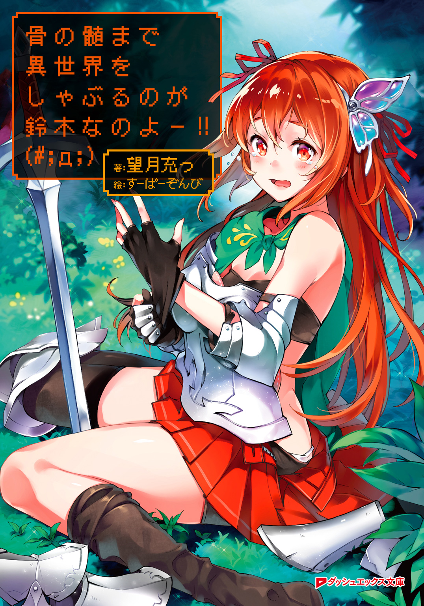
この本は縦書きでレイアウトされています。
また、ご覧になる機種により、表示の差が認められることがあります。
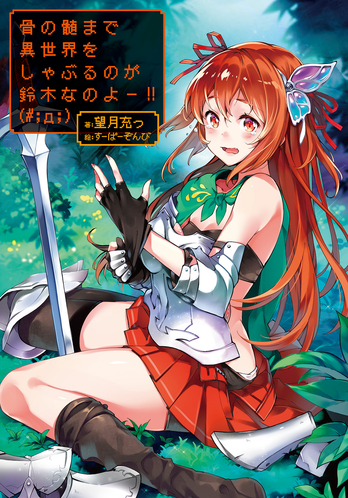
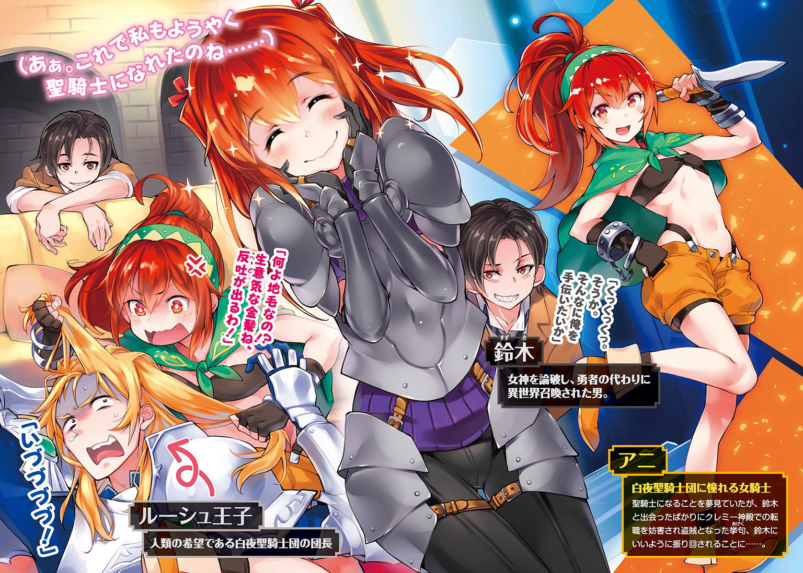
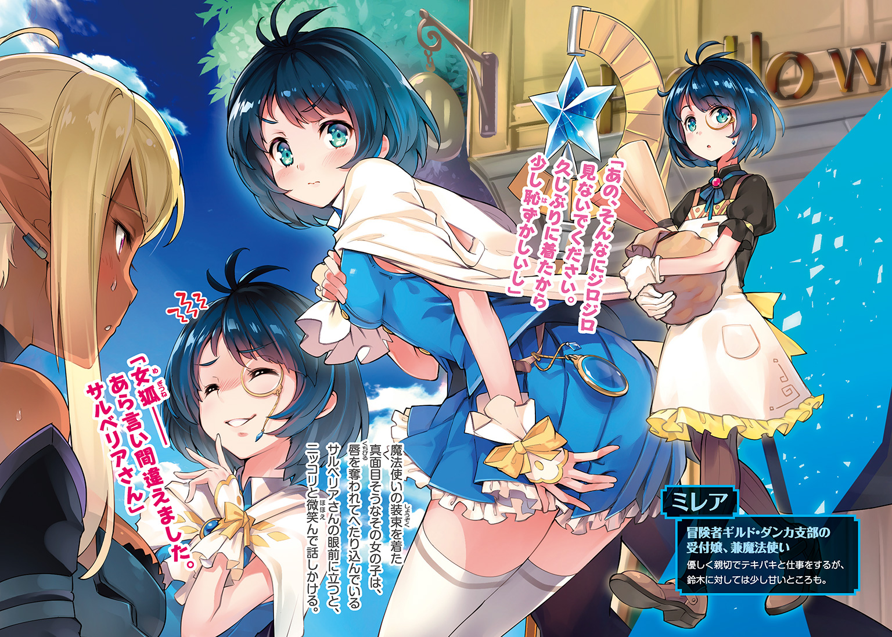
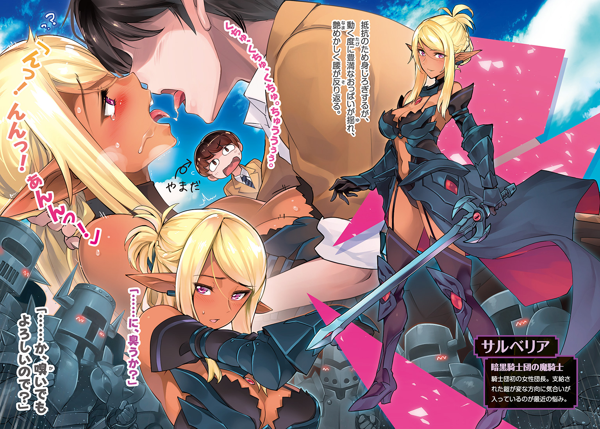
CONTENTS
 ダッシュエックス文庫DIGITAL
ダッシュエックス文庫DIGITAL
骨の髄まで異世界をしゃぶるのが鈴木なのよー!!
望月充っ
【序 章】選ばれし勇者、山田
「おい山田、なに読んでんだよ？」
不意にそう声をかけられたと思いきや、熱中して読んでいた愛読書が、僕の手の中から忽然と搔き消えた。あっと思って顔を上げれば、クラスメイトの鈴木くんがいつの間にか傍に立っており、僕の本を宙吊りにしてぷらぷらと左右に振っている。
僕は思わず椅子から腰を浮かすが、本を強奪した鈴木くんは意に介さず、ブックカバーを外した。そしてクラスのみんなに聞こえるよう、大きな声でタイトルを読み上げる。
「『交渉術を活用して友達を作ろう！』。ははっ、何だよコレ？ ぼっち卒業の指南書か？」
「噓ぉ。そんなの読んでんの？」
「ひくわー。マジひくわー」
クラスメイトから失笑が漏れた。カァッと顔が赤くなるのを自覚した僕は、本を取り戻そうと咄嗟に腕を伸ばす。
「か、返してよ！」
「おっとぉ。こういう本を読んでんだし、力ずくってのは駄目だろ。ほれ、実践だ。得意の交渉術で何とかしてみろ」
鈴木くんはそう言って口の端を上げ、不敵な笑みを浮かべる。
僕はグッと喉を詰まらせると、蚊の鳴くような小さな声で反論した。
「そ、そんなこと、急に言われても......」
「あ？ なに言ってるか聞こえねぇよ。あと十秒以内に交渉に入れなかったら、焼きそばパンのパシリな。はい、ジュー。キュー。ハーチ」
「え、ちょっ」
「ナーナ。ローク」
カウントダウンに急かされるようにして、僕は本の内容を思い返す。
三章あたりに確か、悪意を受け流すためのノウハウが。
「ゴー。ヨーン」
いや、こういう時は心理学を応用した方がいいのかも。
先ほど目を通していた箇所にあった、『融和の心理学』。あれにヒントが。
「サーン。ニー」
......あぁでも、言葉が出ない。
詰め込んだ知識はダムの水のように溜まっているのに、口から放流されることがない。
「イーチ」
だって、他人と話をすることは怖い。
交渉なんて、相手と斬り結ぶような行為だと思う。
コミュ障を克服するためのハウツー本は乱読しているし、鈴木くんの手にある交渉術を活用した愛読書は、僕のバイブルとなっているけれど。
それでも僕には。
僕には――
「はい、ゼーロ」
鈴木くんはカウントダウンを終えると、僕の頭を本でぱしんと叩いた。
高校の屋上はがらんとしていて、何とも寂しい場所だ。僕はそこで手すりに凭れかかり、独り静かに溜め息をつく。
「はぁ。何やってんだろ。これじゃ友達作るどころか、パシリ街道まっしぐらだよ......」
確かに、父親の仕事の関係で、七月からの編入というハンデはあった。とっくに出来上がっている仲良しグループに、難なく溶け込めるほどの処世術もなく、「読書してるんでお構いなく」の姿勢で様子見をしようという弱気なところもあったと思う。それでも、少しずつでも皆の輪に入れるよう、まずは知識を蓄えるという地道な努力をしていたのに。鈴木くんのせいで、尚更クラスから浮いてしまった。
僕はもう一度、今度は先ほどよりも深く溜め息をつき、つと視線を上げる。空は僕の悩みなどお構いなしで、雲一つない快晴だ。その雄大な青空を、トンビが横切っていく。
「いいな。僕もあんな風にして、どっか遠くに行けたらな......」
そんな厭世的な言葉をぽつりと呟いた時だ。眼前に広がる空に、ピシピシッと、一筋の亀裂が走った。
呆気に取られてぽかんと口を開けていると、空間のひび割れは見る間に大きくなっていく。やがて卵から雛が孵る瞬間のように、裂け目から何かが姿を現した。
（......女神様だ）
一目見ただけで、僕はそう確信した。
祈りを捧げるように、胸の前で組まれた滑らかな指。透き通るような白い肌に映える、うっすらと桜色をした唇。瞳は何かを憂うように閉じられており、長く綺麗な睫毛が印象的だ。身に纏ったローブは陽光よりもなお鮮烈に、黄金色に輝いている。
そんな、神々しさと女性的な美貌を共存させる女神様が、不意に口を開いた。
「どうか......どうかお願いです。救ってください、私たちの世界を。アースノウを」
ハッと我に返った僕は、辺りをきょろきょろと見渡したあと、自分を指差す。
「え？ それ、僕に言ってるんですか？」
「そうです。私はアースノウを守護する女神。あなたの内に秘められし、膨大な魔力に導かれてこの世界にやってきました。あなたならば、アースノウを支配せんとする魔王ギルガランに対抗できるはず......」
「ま、魔王って......無理ですよ！ 僕は喧嘩だってしたことないのに！」
「いいえ。あなたが秘める魔力量は、ギルガランにも匹敵します。お願いです。私たちの救世主となってください、異世界の勇者よ」
「僕が......勇者......？」
荒唐無稽な急展開だが、僕は胸がどうしようもなく高まるのを感じた。
ぼっちのため趣味の読書に割く時間も多い僕は、コミュ障克服のための書籍だけでなく、色々なジャンルの本を読んでいる。最近特にお気に入りなのはライトノベルであり、今やその主流となった『異世界もの』は、いったい何冊読破したか覚えていないほどだ。
異世界もの――それは、現実世界ではぱっとしない僕のような人間が、異世界へと召喚される、あるいは転生することで始まる大冒険譚。こちらの世界では何の取り柄もなかったのに、あちらの世界では選ばれし勇者で、チート能力を使って救世主として大活躍するといったような物語である。
まだ本気出してなかっただけ。
こっちの俺が本当の自分。
そんな、「実はこうだったらいいのになぁ」という願望を満たしてくれる、現実逃避の最強ツールだ。
（これって『異世界もの』のテンプレだ！ この僕が勇者!? 異世界アースノウの救世主......）
あぁ、何て素敵な響きだろう。学校ではぼっちだけど、僕が活躍できる場所が、ここではないどこかにあるのか。僕を必要としてくれる世界があるのか。
ついさっき、トンビを目にして呟いた言葉が脳裏を過ぎる。
〝いいな。僕もあんな風にして、どっか遠くに行けたらな......〟
僕はごくりと喉を鳴らすと、唇を舐めて口を開く。
「あ、あの。よくわからないですけど......僕で力になれるなら――」
と、その時だった。
「へぇ。面白そうな話してんな」
唐突に声が聞こえた。慌てて背後を振り返ると、屋上の非常口に寄りかかるようにして、鈴木くんの姿がある。
鈴木くんはすぐ傍までやってくると、僕の肩にガシッと腕を回してきた。
「なぁ、これってあれだろ？ 勇者が異世界に召喚されるシチュだろ？ 何か楽しそうだな」
「え、えっと......」
僕は困惑した。まさか女神様との会話を聞かれちゃうなんて。
でも、同時に安堵と期待も抱いたんだ。一人で異世界に行くのはやっぱりちょっと怖いけど、鈴木くんが一緒ならどれほど心強いだろう。それに、冒険の果てに、友情だって芽生えるかもしれない。ぼっちを抜け出せるかもしれない。
僕は『交渉術を活用して友達を作ろう！』の内容を思い返す。僕のバイブルたるあの本には、共通項が見つかれば、交渉もスムーズにいくと書いてあったはずだ。異世界を救うという目標が僕らの眼前にはあるのだし、最後に必要なのは、ほんのちょっとの勇気だけ。
腹を括った僕は、教室では踏み出せなかった一歩、鈴木くんとの交渉を開始する。
「ねえ鈴木くん。その......よかったら、僕と一緒に――」
「よし。異世界の平和は俺に任せろ。お前は俺の分の授業のノート取っとけ」
「..................はい？」
鈴木くんは僕を突き飛ばすと、女神様に毅然と告げた。
「女神、メンバーチェンジだ！ 山田に代わって、鈴木！ 俺を異世界に連れて行け！」
突然の出来事に、僕は口をあんぐりと開けた。女神様も虚を衝かれた様子で、目をぱちくりさせている。当然だ。今の今まで僕を召喚する流れだったのだから。
やがてハタと我に返った女神様が、困惑したように言葉を発した。
「ええと......いえその。あなたのお気持ちは嬉しいのですが、私は彼を――」
「は・や・く！ は・や・く！」
ぱんぱんぱん！ ぱんぱんぱん！
「待って！ 手を叩いて急かさないで！ そんな軽いノリで異世界に行くおつもりですか!? アースノウはとても危険な場所なのですよ!?」
女神様の一喝を受けた鈴木くんは、眉間に皺を寄せてやぶ睨みする。
鈴木くん？
ちょっと、鈴木くん？
相手はこれから行こうとしている異世界の女神様ですよ？ 道端で肩をぶつけてきたヤンキーじゃないんですよ？
「あぁん？ それじゃ何か？ 俺には荷が重いってのか？」
「残念ながらその通りです。あなたの魔力は魔王の足元にも及ばない」
「はんっ！ 力こそ全てってかぁ？ オーケー、オーケー。それじゃ聞くがな。ＲＰＧよろしく、魔王の配下にはオークとかダークエルフとか、そんな血も涙もないモンスターがいるんじゃないのか？」
「ええ。魔王軍のモンスターによって、アースノウにはもはや安息の地がありません。ですからこうして、異世界の勇者に助力をお願いしているのです」
「なるほどね。で？ 山田が上手いこと魔王を討伐できたとして、残された配下のモンスターはどうすんだ？ 統制を欠いた敗残兵ほど性質の悪いもんはねぇぞ。イラク戦争のその後みたいに、異世界全土をテロリストの温床にするつもりはないよな？ もちろんモンスターの処遇を考えた上で言ってんだよな？」
「そ、それは......」
女神様がキュッと唇を嚙んで押し黙った。
その様子を目にして、鈴木くんはニヤァと、底意地の悪い笑みを浮かべる。
「おやおやぁ？ 女神様は何の対策も講じないまま、ただ敵の頭を叩けと、そう仰るんですか？ 魔王亡き後にどんな甚大な被害が出ても自分は知らないと。そこまで責任は持てないと。それで異世界を守護する女神が務まるなんて、片腹痛いですなぁ！ へそが茶を沸かしますなぁ！」
「ふぐぅっ！」
......あっ。
女神様が悔しげに肩をぷるぷる震わせてる。心なしか涙目だ。
頑張って、女神様！
「で、ではあなたには何かいい案があるというのですか!?」
「もちろんだ」
即答した鈴木くんは、背後に手を回したかと思うと、あるものを取り出した。どうやらお尻のポケットに突っ込んでいたらしいそれは、パシリをしたのに返してもらえなかった、僕の愛読書。鈴木くんはそれを手に昂然と告げる。
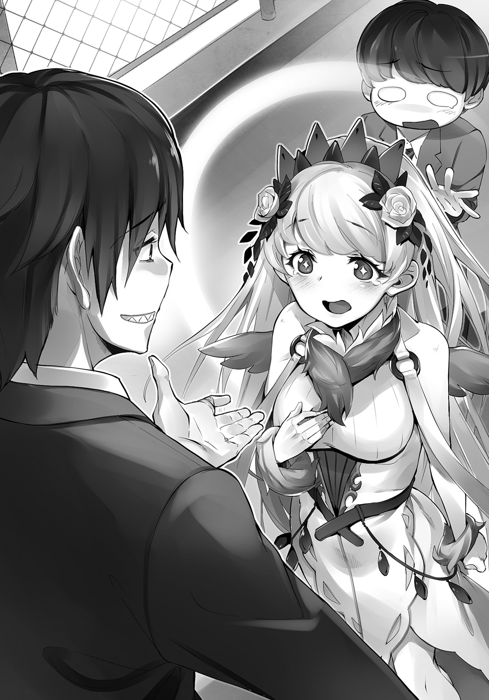
「――俺が交渉人として魔王と和平交渉してやろう。それで万事解決だ！」
僕は目を瞠って鈴木くんを見やった。魔王と和平交渉？ そんなことができるの？ いや、それよりも......。
「ちょっ、ちょっと待ってよ鈴木くん！ いいアイデアかもしれないけどさ、交渉術を使ってどうとかって、むしろ僕の役目っぽい流れじゃなかった!? 僕の知識が異世界では役に立って、キミ凄いねってちやほやされる感じじゃないの!?」
「あぁん？ そんなん俺でもできるだろ。お前の本、さっきパラ読みしたし」
「パラ読み!? 交渉術をちらっと紹介してる本をパラ読みしただけで、魔王と和平交渉しようと思ったの!? 鈴木くん、どんな度胸してるの!?」
「あぁもう、騒がしい奴だな。そんなことより授業のノート頼むな？」
「授業のノートは気にするんだ！ 度胸の配分がおかしい！」
僕がさらに食い下がろうとすると、鈴木くんが肩にガシッと腕を回してきた。そして、女神様に聞こえないよう、潜めた声で告げる。
「まあまあ。ここは俺に譲っとけってぇ。事がうまく運べば、お前にも多少の領土はくれてやるから」
「え？ 領土？ 異世界を救うために和平交渉に行くんだよね......？」
「なに寝ぼけたこと言っとんじゃボケェ！ 異世界に召喚される奴が全員善人で、異世界を救うために立ち上がると思うなやぁ！」
「えぇっ!? でも異世界ものって、だいたいそんな感じだよ!?」
僕が反論すると、鈴木くんは呆れたように深い溜め息をついたあと、教え諭すように告げる。
「いいか山田。よぉく考えてみろ。異世界召喚できるなら、魔王城の真上に核爆弾を召喚すれば済むことだろ？」
「そんな身も蓋もないことを......」
「それなのに召喚対象に人間を選んだ挙句、異世界の政情不安を部外者であるそいつにあっさり伝え、さらには自分たちには事態を収拾する能力がないことまでゲロするなんて、異世界召喚してる女神は単なるクソバカじゃないか。そんな奴が目の前に現れた以上、俺は喜んで寝首を搔こうと思う」
にこっ。
「鈴木くんなに言ってるの!? 爽やかな笑顔で何てこと言ってるの!?」
「いいから俺に異世界行き譲れやぁ！ 他にお鉢が回る前に、俺が異世界に仮初めの平和をもたらし、その後じわじわと実効支配して金も女も総取りしてやるわぁ！ 異世界に必要なのは勇者でも女神でも魔王でもない！ この鈴木だぁ!!」
......神になろうとしている！
鈴木くんは僕から勇者の座を奪うだけでは飽き足らず、女神様と魔王を権力の座から追いやって、異世界の新しい神になろうとしている！
鈴木くんって日本に生まれた一介の高校生だよね!? ヒトラーとかじゃないよね!?
僕の驚愕などどこ吹く風で、鈴木くんは興味を失ったように僕から目を逸らすと、女神様をひたと見据えて言った。
「どうだ？ 和平交渉で事態を収拾するというのは悪くない案だろう？」
「それはまあ、確かに。魔王と和平を結べれば、犠牲も最小限で済むでしょうし......」
女神様が懊悩するように目を伏せ、沈思黙考に移る。
......あれぇ？
何か女神様の考えが揺らいでるー。
勇者の僕を差し置いてるー。
やがて女神様は顔を上げた。その表情はどこか晴れやかだ。女神様は私の負けですとばかりに、肩を竦めてかぶりを振った。
「これまで幾人もの勇者を召喚してきましたが、まさか魔王と和平を結ぶことを目標にする者が現れるとは。いいでしょう。私の想像を超える提案をしてみせたあなたこそ、アースノウの救世主に相応しいのかもしれない」
「ふっ。交渉成立だな」
「ええ。あなたに世界の命運を託します。よい旅を」
そのまま二人が固い握手を交わして召喚に移りそうになったので、僕は必死に声を上げた。
「待って待って！ 女神様、僕は!? さっきまで勇者って呼ばれてた僕は!?」
「............あっ」
「忘れてたっぽい！ ちょっと待ってよ、これって僕が大冒険の果てに魔王を倒す成長物語じゃないの!? 魔王に匹敵するっていう魔力で、強大なモンスターを蹴散らして、異世界の住民の尊敬を集めて悦に入るルートなんでしょう!? ねえそうでしょう!? お願いだからそうだと言って！」
「その、大変言いにくいことなのですが、こちらの方を召喚することに決まりまして。今回はご縁がなかったということで......」
「ウソぉ!? 何この『告白されたからＯＫの返事しようとしたら突然フラれた』みたいな感じ！」
僕のその台詞を聞いた鈴木くんが、聞き捨てならないとばかりにカッと目を見開いた。鈴木くんは僕の胸倉をむんずと摑むと、唾を散弾銃のように飛ばして怒声を上げる。
「お前どうせ告白されたことないだろうがぁ！ 身の丈に合ったたとえ話しろやぁっ!!」
「別にいいじゃん！ そこはいいじゃん！」
ひどくご立腹な鈴木くんの様子に気圧されはしたけれど、いくら気弱でぼっちな僕だって、そう易々と勇者の座を明け渡すわけにはいかない。だって、これはきっと転機だ。人生の逆転満塁ホームランの打席が、手を伸ばせば届く距離にまで近づいているに違いないのだ。
女神様に何とか考えを改めてもらおうとしたそのとき、鈴木くんが僕の胸倉を摑んだまま、機先を制するように言葉を発する。
「おい山田。お前あれだろ？ すごい力があるって言われて調子乗ってるだろ？」
「べ、別にそういうわけじゃ......」
「いいやきっとそうだね。チート能力使えば異世界のモンスターなんか楽勝だろうし、あわよくば可愛い女の子たちをパーティーに組み込んで、ハーレム状態を満喫しようって、そう考えてんだろ？」
「ぼ、ぼぼぼぼ僕はそんなこと考えてないよ！ 仲間にするなら露出の多い女戦士とか、おしとやかな女僧侶がいいなんて！ 決して！」
「甘いこと考えてんじゃねえ！ 歯ぁ食いしばれ！」
「ひぃっ!?」
鈴木くんが右拳を振り上げたのを見て取り、僕は咄嗟に目を瞑った。口内で響く、歯をギリリッと食いしばる音。
「......いいかよく聞け山田。お前はコミュ障のぼっちだ。昼休みになればトイレの個室で弁当食べたりする、キング・オブ・ぼっちだ」
「..................」
「それなのに、なに異世界に行けば当然の如く仲間ができると思ってんだ？ 命がけの場面で、お互いに背中を預けられるようなパーティーが、ぼっちのお前に集められると本気で思ってんのか？」
「..................」
「夢見んなよ。ラノベの読みすぎだよ。十数年生きてきたこの世界でぼっちなんだから、突然飛び込んだ異世界なら尚更ぼっちだろ。これもう新語になるよ。お前は『尚更ぼっち』だよ」
「..................」
「現実を教えてやる。お前じゃきっと、始まりの町で駆け出しの冒険者をカモにする盗賊まがいの連中に、ケツの毛まで毟り取られて捨てられるのが落ちだ。なあ山田、お前もそう思うだろ？ 何とか言ってみろよ」
「............く、食いしばった歯は？」
パンチ飛んできそうだし、けっこう酷いこと言われてるしで、もうどっちに気を配ればいいのかわからない。
そのとき、鈴木くんの目がギラリと光った。
「その油断が異世界では命取りだ！ うぉらぁっ!!」
鈴木くんは体育の授業で習ったばかりの柔道技、踏み込んだ足で相手の足を引っかけて倒す、地味な小外掛を仕掛けてきた。
おっ、とっ、とっ、とっ............ぺたん。
堪え切れずに尻餅をついた僕を見下ろし、鈴木くんはフンと鼻を鳴らす。
「どうだ？ これが俺とお前を隔てる越えられない壁、実力差というものだ」
「そ、それほどのものでは......」
「身の程がわかっただろう！ これはお前のためでもある！ 命が惜しければ異世界のことはきれいさっぱり忘れて、平和な日本で俺の分のノートを取っておけ！ ――さあ、女神よ！ 勇者を降せし真の救世主、この俺を異世界へと誘え！」
しばし蚊帳の外となっていた女神様が、待ってましたとばかりに鈴木くんの手を取った。そして二人して、異世界へと繫がる空間の亀裂へとダイブする。
「ち、ちょっと待って！ 僕も行くよ！」
僕は弾かれたように跳ね起きた。全身の発条を使い、異世界へと通じる裂け目へと駆ける。
期せずして笑顔が零れた。
どうしようもなく胸が躍った。
この先には、危険だけれど、輝かしい冒険の日々が待っているに違いない。
鈴木くんが言っていた『尚更ぼっち』なんて噓っぱちだ。だって、人間は成長する生き物だから。今から向かう異世界で、僕はぼっちを卒業してみせる。
そうして、僕は伝説の勇者に――
とか考えてると亀裂が目の前で閉じた。
僕だけが屋上に取り残された。
「え、あっ」
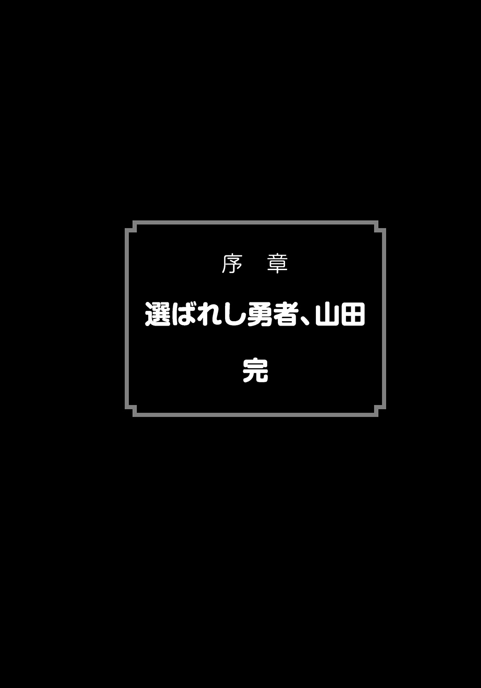
【第一章】そして聖騎士へ
１話ねごしえーたー鈴木......？
私は目を細め、森の奥にいる人物を観察する。
街道沿いを歩いているとき、森の方から何やら騒がしい物音が聞こえてきた。これはもしや旅人がモンスターに襲われているのではと、慌てて駆けつけたのがつい先ほどのこと。予想は的中し、スライムの群れに囲まれた人影がすぐさま目に留まったのだが、私は少し様子見をすることにした。
（......なに、あいつ？）
助けに入るのに二の足を踏んだのは、襲われている人物が珍妙な格好をしていたからだ。歳の頃は私とそう違わないだろう、少し目つきの悪いその少年は、冒険者のように防具で身を固めているわけでも、旅人が好むような丈夫で動きやすい旅装といった出で立ちでもない。上質そうだが、何とも心許ない上着とズボンという、正気を疑うような軽装なのだ。
（あの格好でモンスターが徘徊してる町の外に出たわけ？ 武器も持ってないみたいだし、自殺行為じゃない）
もしかしたら、腕に物凄く自信があるのだろうか。だとしたらちょっと気になる。
（相手はスライムだし、お手並み拝見しようかな？）
そんなことを考えていると、少年が苦々しげに吐き捨てた。
「くっ!? こいつら足がないから俺の必殺の小外掛が通じない!!」
「あ何かヤバそう！ 早く助けないと！」
私は木陰から躍り出ると、長剣を抜き放って手近なスライムを斬り伏せた。多勢に無勢とはいえ、私はＬｖ20を超す騎士だ。スライムなんかに後れは取らない。少年の方へと突貫しながら、剣を振るうことしばし。五匹目を倒したところで残りのスライムたちは蜘蛛の子を散らしたように逃げ去り、後には私と少年だけが残される。
私は長剣を鞘に納めつつ、少年へと問いかける。
「危ないところだったわね。怪我はない？」
「あぁ、俺は大丈夫だ。手こずっていたみたいだが、そっちは平気か？」
「私は何ともない......って、何よそれ。ヤバかったのはあんただけでしょ。上から目線でなに言ってんのよ」
私のその台詞を聞いた少年は、顔面にクワッと力を込めて叫ぶ。
「だって借りとか作りたくないしね！ 今の助けられたんじゃなくて共闘ね！」
......え、何こいつ。
今の空耳かな？ それとも「ありがとう」を聞き間違えたのかな？
ちょっと混乱していると、少年は不遜な態度で続ける。
「自己紹介がまだだったな。俺は鈴木だ。貧乳の女騎士よ、お前の名を聞こうか！」
え、ホント何こいつ!?
空耳ならよかったのに！ 聞き間違いならよかったのに!!
もしそうだったなら、私は人を殺さずに済んだだろうに......。
鞘から長剣を半ばほど引き抜いてみせると、鈴木はすぐさま掌を返した。
「俺も命は惜しい。爆乳の女騎士よ、名を聞こうか！」
「あなたを殺す、ほどよい胸の女騎士の名はアニよ。心に刻んで死になさい」
ジリッと足を踏み出すと、鈴木と名乗った少年は慌てた様子で告げる。
「ちょっと待って！ ネゴシエーターには素直な言葉を使わなきゃいけない時もあるんだ！ そんなことたぶん本に書いてあった！」
「は？ ねごしえーたー？ 何よそれ？」
職業のことだろうか。アースノウには戦士や魔法使い、果ては盗賊に至るまで、様々なジョブが存在するが、ネゴシエーターなる職種は聞いたことがない。
鈴木は鷹揚に頷いて続ける。
「これも何かの縁だ。特別に教えてやろう。俺は異世界から召喚されたネゴシエーター。魔王と人類の間に和平を締結させ、この世界に平和をもたらす交渉人だ。崇め奉るがいい！」
淀みなく並べられたその言葉に、私はポカンと口を開ける。
異世界から召喚？
魔王と和平を結ぶ交渉人？
......あぁ、うん。スライムからの攻撃を頭に受けたのかしら。それとも最初からこういうヤバめの奴なのかなぁ。
そういえば前に所属してた騎士団の中にもいたっけ、こういう設定を自分につけてた奴。左の籠手だけ黒く塗って、この左手に伝説のブラックドラゴンの力を封じてるとか何とか。病的な空想中毒が二年目に突入しても収まんなかったから、私が『中二病』ってアダ名つけたら、けっこう浸透してたなぁ。
あいつ今頃どうしてるかしら。今でも内なるドラゴンと戦ってんのかな。現実のドラゴンとは決して戦おうとしなかったから、生き延びてるとは思うけど......。
そんなことを考えているうちに、鈴木の暴言に対する怒りが徐々に鎮まってきた。私はふぅと一つ吐息をもらして納剣し、鈴木に哀れみを込めた眼差しを送る。
「そう。頑張ってね、ネゴシエーター鈴木。それじゃあ私はこれで」
くるりと踵を返し、さっさとこの場から立ち去ろうとするが、「待った！」とすぐさま鈴木に呼び止められた。
「うん？ 何よ？」
嫌々ながらも肩越しに振り返ってみた。
――鈴木が仲間になりたそうにこちらを見ている。
「......ええぇ～」
「アニは今からどこに向かうんだ？ この辺はモンスターが出るみたいだし、俺が用心棒として目的地まで同行してやってもいいぞ？」
「いやあんたじゃ足手まといにしかならないわよ。というか、どこの町からやって来たの？ 自力でここまで来れたんだし、一人で戻れるでしょう？」
「俺は異世界から召喚されたばかりだ。しかもあの女神、けっこう力使ったからしばらく休むって、さっさと消えやがった」
「女神って、アナスレイ様のこと？ 妄想に女神様を登場させないでよ。不敬ね」
私は眉間に皺を寄せつつも頭を悩ませた。はっきり言ってこんな奴と関わりたくないが、ここで見捨てたせいで鈴木が命を落とすことになれば、さすがに寝覚めが悪い。
「仕方ないわね。私はこれからクレミー神殿に行くから、そこまで送ってあげるわよ。大した距離でもないし、夕刻までには着くでしょ」
「よし、交渉成立だな。やはり俺には交渉人としての資質があるようだな。パラ読みウロ覚えの知識で、道中に必要なそこそこ使える盾を手に入れた」
「聞こえてるわよ鈴木」
あぁもう、今日は私の新たな旅立ちの日になるはずだったのに、ケチがついた気分だ。のんびりクレミー神殿を目指すつもりだったけど、なる早で行こうっと。
２話転職に貧乳は関係あるのか。
――やっぱ見捨てときゃよかった。
心の中で何度そう呟いただろうか。
鈴木はとにかく使えなかった。モンスターに遭遇しても、自分はさっさと高みの見物を決め込んで、
「どうしたアニ！ お前の力はそんなものか！」
「モンスターどもよ、俺と戦いたくばその貧相な女騎士を倒してみせるがいい！」
「足がないモンスターだから任せるね！ 小外掛、効かないからね！」
と、偉そうに挑発したり指示を飛ばすばかり。意外と通る声なので、鈴木の大声に新たなモンスターが呼び寄せられ、ザコ相手にけっこう危ない目にも遭った。
それだけでも腹立たしいのに、極めつけは倒したモンスターから得たＧの配分だ。私の総取りでも割に合わないっていうのに、鈴木はいけしゃあしゃあと言うのだ。
「俺の未来に投資すると思って、全部くれないか......？」
何やかんやで折半になったじゃない！
ごねた私がケチ臭い感じになったじゃない！
もう最悪な旅路だった。さっさと別れるため、休憩もろくに取らずに歩き続け、私たちはようやく目的地へと辿り着く。
「ほほぉ。ここがクレミー神殿か」
夕日に照り映える白亜の神殿を仰ぎ見て、鈴木が感嘆の声を洩らした。実は私も初めて来る場所であり、その荘厳さに圧倒されていたが、そんなことはおくびにも出さずに言う。
「立派なもんでしょう？ ここがアースノウでも有数の歴史を持つ神殿よ。巡礼の地にもなってて、各地から大勢の人が訪れるから、ここならあんたの中二病じみた冒険に付き合ってくれる酔狂な奴も見つかるかもしれないわ。まっ、頑張って探してみることね」
「俺の話を信じてないのか？」
「そりゃそうでしょ。あんたに同行するのはここまで。だいたい私はこれから聖騎士に転職して、白夜聖騎士団の一員として魔王軍と戦うの。あんたのお守りをしてる暇なんてないのよ」
「転職？ 白夜聖騎士団？」
鈴木は要領を得ないといった表情で眉をひそめた。
......あぁ、そっか。こいつの設定では異世界から来たばかりということになっているんだっけ？
わざわざ付き合ってやる義理はないのだが、私はフフンと胸を反らし、得意になって言う。
「そうよ。クレミー神殿ではね、Ｌｖ20を超えた凄腕の冒険者に限り、好きな職業に転職できるの。私はまぁ、ちゃちゃっとＬｖ20に達したエリート騎士だし？ 騎士からのみ転職可能な上級職、『聖騎士』になるべきだって、周りがうるさくって」
話だいぶ盛っちゃってるけどね。ちゃちゃっとＬｖ20なんて絶対ムリだから。血を吐くような思いをしてようやく達した域だから。
それもこれも、全ては白夜聖騎士団に入るため。
「ちなみにさっき言った白夜聖騎士団っていうのは、名前の通り聖騎士だけが入団を許される、超エリート集団なの。団長は何と、セラーヌ王国の第一王子、ルーシュ様！」
私は両手を組むと、ほぅと吐息を洩らして虚空へと視線を向けた。クレミー神殿の真っ白な壁を背に、長い金髪を風になびかせる、ルーシュ王子の白皙の美貌がぽわわんと浮かび上がる。以前遠目に見かけたことがあるだけだが、その気品に満ち溢れた横顔は、隣にいる鈴木とは雲泥の差。ホントに同じ人類かと思う。
「世界中の王侯貴族が城に籠もって魔族の侵攻に震えてるなか、ルーシュ王子は御自ら剣を取り、白夜聖騎士団を率いて魔王軍と戦っているの。全ては魔王ギルガランを打倒し、この世界に平和をもたらすために！ 私もその崇高な目的の達成に、及ばずながらお力添えしたいと思ってるのよ」
ルーシュ王子の活躍を風の噂で聞いた時から、私の進むべき道は決まっていたのだ。反対するパパとママを何とか説き伏せ、辺境の村から冒険に出てはや五年。ようやくルーシュ王子のもとに馳せ参じ、人類存亡を賭けた戦いに身を投じることができる。このクレミー神殿から、私の本当の旅が幕を開けるのだ！
独り感慨に耽っていた私は、やがてはたと我に返る。
（......あぁ、いけない。ちょっと自慢してやるつもりが、思わず力が入っちゃった）
でも、その価値はあったようだ。私の背中に、鈴木の熱視線をひしひしと感じる。冗談でも何でもなく、私が白夜聖騎士団の一員として最前線に立つのだと知って、さすがの鈴木も感じ入るものがあったらしい。
（ふふっ。まあ当然よね。何たって人類の希望、白夜聖騎士団だものね。鈴木も私の話を聞いて、中二病から覚めたって感じかしら？）
そんな優越感を抱きつつ、憑き物が落ちたような、晴れやかな眼差しをしているであろう鈴木をちらりと見やった。
鈴木が仲間になりたそうな目でこちらを見ている。
「あれ!? 想像してたのと違った！ 何でそうなるのよ！」
「聖騎士・鈴木。悪くない響きだ......」
「あんた馬鹿なの!? 私の話聞いてた!? Ｌｖ20いるの！ 騎士じゃないとダメなの！ あぁもう、これ以上あんたに付き合ってらんないわよ！ 私はもう行くから！」
私はそう言い置くと、鈴木をその場に残してクレミー神殿に足を踏み入れた。私と同じく転職希望の冒険者たちだろうか。神殿には僧侶や戦士など、種々雑多な職業の冒険者たちが溢れ返っている。
その人波を抜け、左右に立ち並ぶ円柱を横目に見ながら奥へと進んでいくと、やがて重厚な扉が姿を現した。扉の傍らにいる衛兵に要件を告げて中に通されると、そこにはドーム状の宏壮な空間が広がっている。中央には階段の上に設けられた台座が見て取れるが、どうやらあれがクレミー神殿の祭壇のようだ。
「転職をご希望ですか？」
そう声をかけられ視線を向ければ、にこやかな笑みを浮かべたおじいちゃんが私のことを見つめていた。雰囲気からはとてもそうとは思えないが、厳粛な神官衣に身を包んでいることから察するに、この人物がかの高名なエルド大神官だろう。
私は少し緊張しながら口を開く。
「はい。Ｌｖ20の女騎士、アニです。聖騎士への転職を希望します」
「ふぉっ、ふぉっ。いい目をしておられる。聖騎士への転職とは、もしや白夜聖騎士団を目指しておいでですかな？」
「そうです！ 私、立派な聖騎士になって、魔王から世界を救いたいんです！」
「素晴らしい心がけですな。あなたの新たな旅立ちに幸あらんことを。さっ、祭壇へ進んでください」
「はい！」
まるで御伽噺に触れるように、瞳を輝かせて聞いていた白夜聖騎士団の活躍。
一念発起して村を後にした際の、何とも言えない寂寥感。
聖騎士になるために艱難辛苦を舐めた、死と隣り合わせの冒険の日々。
それらがこの、鏡のように研磨された階段に象徴されているようで、私の胸は自然と熱を帯びる。
祭壇の上に達した私は、その場で両膝を突いた。手を胸の前で組み、そっと瞳を閉じる。次に目を開けた時には、私の身体は聖騎士のシンボルともいえる、白銀の鎧に包まれていることだろう。壮麗な蝶の頭飾りも装備され、女だてらに騎士なんてという誹謗中傷を浴びせかけてくる奴も、もう決して現れまい。
新生の喜びに打ち震えているとき、不意に祭壇の下から声が聞こえてきた。
「なるほど。ここで転職の儀式をするわけか......」
えっ、鈴木!?
あいつまだいたの!?
「おや。あなたも転職希望ですかな？」
「それも面白いと思ったが、やはり俺にはネゴシエーターが合っている。俺はそこにいる貧乳の付き添いだ」
......よし。
聖騎士になって最初に倒すべき相手は決まった。
「ところで神官。折り入って相談があるのだが」
「構いませんよ。ただ、今からアニさんの儀式がありますので、後ほど」
「なに、すぐ済む。それにアニと無関係ではないしな。ちょっと耳を貸せ。......ごにょごにょ」
えっ、何の話してんの!? 私の名前出てたけど!?
すごい気になる！
すっごい気になる!!
あぁもう、清らかな気持ちで転職したかったのに、鈴木のせいで邪念ばかりじゃない！ あいつ疫病神なの!?
思わず声を上げようとすると、エルド大神官が慈愛に満ちた口調で言う。
「なるほど。そういうことでしたか。アニさん、ご安心なさい。あなたの真なる想いは、女神アナスレイの息吹によって、しかるべき時、しかるべき場所で花開くよう宿命づけられていたのです。たとえ朝露の如く儚くとも、私が大神官の名において祝福を与えましょう」
「んっと、あの、大神官さま！ すっごくいいお言葉なんですけど、もっと嚙み砕いて簡潔に言ってもらえると――」
「さぁ、儀式に移ります。アニさん、荒ぶる大海に翻弄される心を、凪いだ湖面のように穏やかに」
「くっ！ 言い回しがいちいちウザイわね......」
「それでは。女騎士アニに新たなる門出を！」
「え、ちょっ」
「女神アナスレイの加護あれーっ！」
ピカッ！
瞳を閉じていてもわかるほどの鮮烈な光が私を包んだ。同時に、全身の細胞が湧き立つような高揚感が押し寄せてくる。女神アナスレイの存在を確かに身近に感じ、私は得も言われぬ幸福に満たされる。
やがて光が去り、私はゆっくりと瞼を開いた。眼前に広がるのは先ほどと何ら変わらぬ景色だろうに、まるで新たな世界を目にするようだ。
（あぁ。これで私もようやく聖騎士になれたのね......）
ふと見やれば私の傍らに、騎士の時に装備していた簡素な鎧が置かれていた。聖騎士の鎧と入れ替わる形で装備が解除されたのだろう。
（ふふっ。よく見たらあんた傷だらけね。これまでよく頑張ってくれたわ。ありがとう）
私は心の中でそう話しかけたのち、ゆっくりと自分の身体へと視線を落とした。そこには、白銀に輝く聖騎士の鎧が――
「って、あれ？」
私が身に纏っているのは身軽さを重視したような装束で、身体のラインがくっきりと出ており、何とおへそは丸出しである。
「お、おやぁ？」
恐る恐る頭部へと手を伸ばしてみる。本来なら壮麗な蝶の頭飾りが載っているはずのその箇所には、バンダナが巻かれているのみ。
私は弾かれたように床を這うと、よく研磨された階段に自分の姿を映してみた。密かに私のチャームポイントだと思っている勝気な瞳が、あまりの驚きに生気を失っていく。騎士の鎧に映えていた艶のある赤髪も、心なしかくすんで見えた。勘違いでも錯覚でもない。聖騎士の『せ』の字も私の装備からは見て取れない。これは、この姿は――
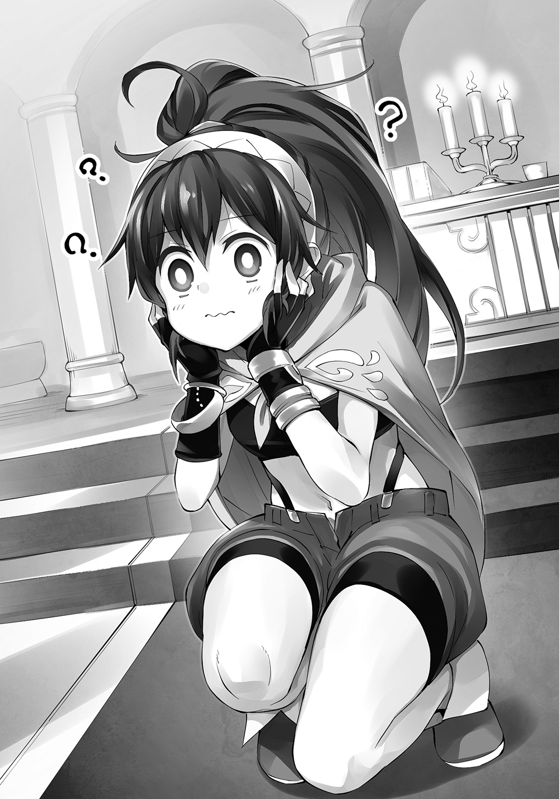
「......と、盗賊？」
愕然としていると、私の頭上から不意に影が落ちた。エルド大神官が階段を下り、私のすぐ前に立ったのだ。隣には鈴木の姿もあり、
「さっきの光すごかったな。仕掛けとかホントにないのか？」
と、不敬なことを口にしながら祭壇を調べ始める。
私は引きつった顔でエルド大神官に問いかけた。
「だ、大神官さま？ 私、聖騎士への転職希望ってお伝えしましたよね？」
「ふぉっ、ふぉっ。女神アナスレイの両手から零れ落ちる願いなど存在しないのです」
「あのすみません。今ちょっとキレそうなんで、わかりやすく言ってもらっていいですか？」
「おや。どうやら戸惑っておいでのようだ。ならばアニさんを勇気づける言葉をお贈りしましょう。きっと目から鱗が落ち、身も心も軽くなることでしょう」
そう告げたエルド大神官はコホンと一つ空咳を挟むと、大仰に両手を広げ、神託を下すように朗々と声を張る。
「とある神学者は言いました。『女神は乳の上に巨乳を作らず。乳の下に貧乳を作らず』。あなたのそのまな板のような胸も、女神の祝福をちゃっかり受けているのです!!」
――猛者とまではいかずとも、私もＬｖ20にまで達した一角の冒険者だ。各職業のスキルについても基礎知識くらいはあるし、それをすぐさま使いこなせるだけの応用力は備えている。
盗賊の初期スキルは『忍び足』。私は即座にスキルを発動させた。物音一つ立てぬ、流れるような足運び。目の前にいるというのに、エルド大神官の眼球は、私を追って動くことすらない。
見えているというのに、捉えてはいない。
やがて彼は実感するだろう、喉元に押し当てられたナイフの冷たさと共に。いつの間にか背後を取られていたのだという驚愕と、生殺与奪の権利を握られているのだという絶望を。
私はエルド大神官の喉をいつでも搔き切れる体勢を取ったまま、冷淡な声で問いかけた。
「......これが最後のチャンスだから、心して、具体的に答えなさい。私は・なぜ・盗賊になっている？」
「ヒイッ!? つ、付き添いの方が、『アニは本当は盗賊に憧れているんだけど、貧乳を隠すためには鎧を装備した聖騎士になるしかないって、夜な夜な泣いてる』って！ だからアニの夢を叶えて盗賊にしてやってほしい、神官のありがたい説教があれば、本人も救われるからって！」
「あんたは・それを・信じたの？」
エルド大神官の喉仏が、ゴクリと鳴って上下した。その拍子に、私のナイフが薄皮を破り、微かに血の朱が浮かぶ。
「その......せ、説得力のある貧乳だったしうわああぁぁぁぁっ！」
ゴロゴロゴロゴロゴロ！
階段を転がり落ちていくエルド大神官には目もくれず、私は祭壇をぺたぺた触って調べている鈴木に向かい、ゆっくりと歩を進める。口から抑えきれずに漏れるのは、地獄の底から響くかのような怨嗟の声。
「すぅ～ずぅ～きぃ～」
鈴木は私の形相を見ても狼狽することなく、いけしゃあしゃあと言う。
「まあ待て。落ち着け。全ては魔王との和平交渉を成功させるためだ」
「ふ、ふふふ。そんな夢物語のために私を盗賊にしたわけ？ ねぇ、知ってんの？ 転職したらＬｖは１に戻るのよ？ 私が聖騎士になるには、盗賊でＬｖ20まで上げて、騎士に転職して、そこからまたＬｖ20まで上げなきゃなんないの。ねぇ。いったい何年かかると思ってんの？ ねぇ？ ねぇ？」
「ものは考えようだ。和平が成立すれば、聖騎士なんてお払い箱になるんだぞ？ 白夜聖騎士団だか何だか知らんが、そんなとこで一兵卒として働くより、俺の手伝いをして歴史に名を刻む方がいいだろう？」
「......もういい。わかったわ。とりあえず私の気が済むまであんたを痛めつけて、それから今後のことを考えることにするわ」
私がナイフを握り直したそのとき、鈴木の口元にフッと薄い笑みが浮かんだ。鈴木は自信に満ちた表情で嘯く。
「いいだろう。小娘一人説得できないようでは、魔王と和平交渉なんて確かに夢のまた夢だ。俺の交渉術を駆使して、アニ自ら『手伝わせてください』と懇願させてやろう」
「は？ なに言ってんのよ。この距離なら瞬きする間も与えずに、あんたを床に這いつくばらせることができるわ。悪いけどお喋りはここまで――」
私が言い終わらぬうちに鈴木が動いた。祭壇に放置されていた、私がつい先ほどまで装備していた鎧を無言で拾い上げ、胸当ての部分に手を入れる。そこから引っ張り出されたある物を目にして、私は声を上げる。
「はぅあっ!?」
鈴木が手にしているそれは、布を継ぎ接ぎして作った、掌に収まるほどの双丘。
......まあ、あれだ。
胸当ての下に入れておくと、ほんのりと胸が大きく見えたりする、でも決してそのために夜なべして作ったわけではなく、何となく、手慰みに裁縫をして、何となく、偶然たまたま胸の辺りに入れておいた、そんな名もなきアイテム。
鈴木はその胸パッドを、チラッ、チラッと私に見せつける。
「そ、そそ、それが何か気になるの？ それは、ええと......そう！ 汗を拭くために入れておいたものよ。私、汗っかきだし」
チラッ。
チラッ、チラッ。
「いやそれ違った！ それ肩パッド！ ほら、騎士の鎧にも肩当てあるでしょ？ あそこの金具が肩に当たると痛くて痛くて」
チラッ。
......もみもみ。
「ちょっとやらしい手つきで触んないでよ！ それ胸の――胸の～、胸の～、お歌～。......歌はいいわね。特にこの、私の実家限定で流行ってた『胸のお歌』。懐かしいわ」
「あっ！ 神官の叫び声を聞きつけて人が集まってきた！ 皆さーん、こいつ胸を大きく見せるために、鎧の下に胸パッドを、」
「手伝わせてください！ 私に和平交渉の手伝いをさせてください！」
私は咄嗟に叫んだ。叫んでしまった。
鈴木がニヤリと、邪な笑みを浮かべる。
「くっくっくっ。そうか。そんなに俺を手伝いたいか」
「いやその、今のは......」
チラッ。
「もちろんよ。力を合わせて和平交渉を成功させましょう」
私の色々と押し殺した返答を聞き、鈴木はご満悦の表情でウンウンと頷く。
「そうかそうか。それならさっそく役立ってもらうとしよう......」
３話オレオレ、フォウッ！
あぁダメ。
もぉダメ。
これ私、絶対に死んだ。今日が命日に決まってる。
パパ、ママ。先立つ不孝をお許しください......。
そんな祈りを捧げながら、私は大きく育った藪の陰で息を殺す。すぐ傍には鈴木もいるが、クレミー神殿を目指していた時とは違って、彼も無闇に騒ぎ立てず身を潜めている。まあ、それも当然だろう。なんたって、私たちの目と鼻の先を、凶悪なモンスターが横切っているのだから。
私は雑草の隙間から、恐る恐る様子を窺ってみた。浅黒い肌に、禿げ上がった頭。まるで岩石のような巨軀を揺らしながら、お腹に響くような、ズシン、ズシンという重量感のある足音を立てて歩いているのはオークである。
（ひいぃ、おっかない！ どうか見つかりませんように......っ！）
転職前のＬｖ20の状態だとしても、間違いなく戦闘は避ける強敵である。盗賊に身をやつした私や、何の役にも立たない鈴木なんて、オークが手にしている大木じみた棍棒の一振りで、泥人形のように潰されてしまうに違いない。
震えながらも女神様の加護を信じてジッとしていると、何とかオークをやり過ごすことができた。ほっと安堵の吐息を洩らす私の隣で、急に強気な表情を見せる鈴木が、「やっぱここで殺ってやろうか」とばかりに飛び出すような格好をしつつ、けれど決して動かないという虚栄心を披露している。
何なのこいつ......。
私は今度は呆れのための吐息を零すと、藪の中からゆっくりと這い出した。視線をつと上げれば、私たちの眼前に、巍々として聳え立つ城がある。瘴気の濃い霧を纏い、夜の闇に沈むそれは、何と魔王の居城だ。
（うあぁ、本当にこんな近くまで来ちゃった。怖いよぉ不気味だよぉ。何か城の上をコウモリ飛んでるしぃ......）
――いやアレよく見たらデーモンだ！ 耐性のない人間はコロッと逝っちゃう、特殊攻撃の『死の刻印』使うやつだ！ 今のＬｖじゃ百回受けたら百回死ぬ自信あるんですけど!?
あぁ、やっぱ私ここで死ぬんだ......。
なぜこんな危険極まりない場所にいるかというと、それはもちろん鈴木のせいである。鈴木はさっそく和平交渉に取りかかるといって、何をとち狂ったのか、私に魔王城までの道案内を要求してきたのだ。
ここに至るまでの道程を思い返す私の瞳に自然と涙が滲んだ。
クレミー神殿から魔王城までは相当な距離がある。そこでまず私がしたことは、甚だ不本意だが、本物の盗賊よろしく、神殿に訪れる人々の会話を盗み聞きすることだった。そうして私は、魔王城にほど近いヤニ村からやって来ている一行を見つけたのだ。
ヤニ村の一行は疲弊していた。生気なんてものは感じられなかった。
それも当然だろう。いつでも手軽に略奪できるからといったような理由で、滅ぼされることなく残っているような村だ。魔族の気が変われば、半日と持たずして地図から消える、そんな場所で細々と生活を送っている人たちなのだから。
彼らはヤニ村の代表として、女神アナスレイの加護を祈りに来ていたらしい。辺りを観光するような気力も残っていない一行は、礼拝が済むや否や、帰路につくため『ピアラの羽根』を取り出した。ピアラの羽根とは、一度行ったことのある町や村に、一瞬にして移動することができる魔道具である。
祈りを終えた途端に帰ろうとするとは夢にも思わず、声をかけて同行させてもらうつもりだった私は焦った。一行が縦一列になり、前の人の肩に手を置く。そうして全員がピアラの羽根の有効範囲に入り、飛び立とうとした瞬間。私たちはその最後尾につき、ヤニ村へと瞬間移動したのだ。
この行為は俗に言う無賃ピアラ、通称『チンラー』である。
チンラーした私たちに気づいたヤニ村の一行は、青筋を立てて怒鳴った。
「おい見ろ！ 女盗賊と目つき悪い男がチンラーしてついてきてやがるぞ！」
「ヒドイ！ 貧困に喘ぐヤニ村ではピアラの羽根はとても高価なのに、チンラーするなんて！」
「ま、待ってください！ 成り行き上チンラーしたみたいになっただけで、お金は出しま――」
「金だと!? おのれ盗賊め、チンラーした挙句、俺たちから金まで巻き上げるつもりか！」
「ヒドイ！ 貧困に喘ぐヤニ村では明日のパンすら買えずにひもじい思いをしているのに！ チンラーした上に強盗なんて！」
「ち、違っ、」
「この盗賊がぁ！ 盗っ人チンラーがぁ！ お前は人間のクズだ!!」
「親の顔が見てみたいです！ きっと親もチンラー顔です！ 世の中には白夜聖騎士団のような清廉潔白の士もいるというのに、盗賊なんて馬のクソ以下です！」
「う......うわあぁぁん！ 『アニちゃんは素直でいい子ね』って言われて育ってきたのにぃ!! 私だって本当なら聖騎士だったのにぃ!!」
その場から泣きながら逃げて行き着いた先は、魔王城を取り囲むように存在する『迷いの森』。そこから私は盗賊の能力をフル活用して、周囲の気配を探り、足音を忍ばせ、何とか会敵を避けつつここまでやって来たのだ。
（あんな罵詈雑言まで浴びたのに、結局モンスターに殺されちゃうのね......）
どうせ死ぬなら聖騎士として最期を迎えたかったよぅ。
盗っ人チンラーなんてヤダよぅ......。
そんなことを考えつつ遠い目をしていると、ずっと藪の中に隠れていた鈴木がようやく這い出てきた。
「安心しろ、もう大丈夫だ。さぁ、魔王城に侵入するぞ」
「何を偉そうに。というか、あんた本気で言ってんの？ 生きてここまで来れたのも奇跡みたいなもんなのに、このまま城の中まで行くわけ？」
「そのために来たんだし当然だ。それに、辺りにいるのは人間のことなんか歯牙にもかけないモンスターたちだろう？ 大軍で押し寄せれば察知されて警戒もされるだろうが、たった二人の隠密行動なら問題ない。盗っ人チンラーのスキルでこっそり侵入しよう」
「盗っ人チンラー言うな！」
そう反論しつつも、一理あるなという気はした。周囲を徘徊するモンスターは多士済々の兵だが、それゆえ慢心というか余裕が窺え、城の警備は手薄に映る。
私はウーンと唸ったあと、鈴木に問いかけた。
「ねえ鈴木。あんたもしかして、本当に異世界から来たの？」
「ん？ 信じる気になったのか？」
「だってあんたの考え方、普通じゃないもの。魔王と話し合いができるなんて邪信教の信徒でも思わないし、魔王城への侵入なんて自殺志願者でも試みないわ。それに私が答えるまで、『ねぇねぇ。チンラーって何？ チンって、もしかしてあのチン？ ねぇ、あのチンなの？』ってうるさかったでしょ。世界の共通語になってるチンラー知らないなんて、どう考えてもおかしいじゃない」
私のその指摘に対し、鈴木はシュンとうなだれて呟く。
「チンラーのチン、あのチンじゃなかった......」
「なに落ち込んでんのよ!? そこはどうでもいいでしょ!?」
私はほぅと溜め息を洩らした。と同時に、ようやく腹が決まる。
まだ半信半疑とはいえ、鈴木が異世界からやってきたネゴシエーターだというのなら、私も相応のサポートをするべきだろう。
だって、彼は言ったのだ。魔王と和平を結ぶと。
それはつまり、この世界に平和が訪れるということ。
白夜聖騎士団に入って、魔王を打倒するのが夢だったが、再び聖騎士になれるまで、いったい何年の鍛錬が必要かわからない。盗賊でＬｖ20に達するなんて、夢のまた夢にも思える。
諸悪の根源は鈴木なのだが、彼が異世界から来たというのなら許すこともできると思えた。なぜなら彼は、本来ならば完全なる部外者。それなのに、この世界を救うため、命を賭して和平交渉に挑むというのなら――そのために聖騎士ではなく盗賊の協力が不可欠だというのなら、涙を呑んで今の運命を受け入れよう。
「......わかったわ。できる限りのことはするから、私の後にぴったりついてきなさい」
私はそう言うと、魔王城へと足を踏み出した。周辺のモンスターに細心の注意を払いながら、時に岩陰に潜み、時に匍匐前進し、何とか城壁まで辿り着く。
「さてと。さすがに城門は開いてないし、どうやって中に――あっ。外郭塔のツタ、全然処理してないじゃない。あれを伝っていけば城壁の上まで行けそうね。さ、登るわよ鈴木」
「はぁ!? 途中で手ぇ滑らせたら大ケガするじゃん！ 一人でちゃちゃっと登って、中から城門開けて！ 俺ここで待ってるから！」
「......いいから、登れ」
私は嫌がる鈴木に無理矢理ツタを握らせ、決死のロッククライムを敢行するが、城壁を半ばまで登ったところで舌打ちした。下からはよく見えなかったが、ツタは徐々に先細り、人の体重を支えられそうにない。
（弱ったわね。ここ以外に進入経路なんてなさそうなのに......）
もたもたしてると見つかってしまう。こちらの目的が和平交渉でも、城の外をウロついているのは、戦闘力は高いが知能の低いモンスターが多い。話し合いに持っていく前に、すぐさま食い殺されてしまうのがオチだ。
どうしたものかと悩んでいると、ヒィヒィ言いながらも何とか私についてきていた鈴木が、弾んだ声を上げた。
「アニ、ここ！ ここの窓から何とか入れないか!?」
期待を胸に鈴木が指差す先を見やった私は、すぐさまげんなりとなった。鈴木が示しているのは、城が敵に攻められた際、弓矢などで攻撃するための狭間であり、人が通れるほどの隙間はないものだ。
「あのね鈴木。これは人が通れるようにはできてないの。というか、無闇に中を覗かないでよ？ 敵がいたら、中から矢とか魔法が飛んでくるんだから」
そう警告しつつも、私は何とはなしに狭間から城内を窺ってみる。中は所々に松明が灯る、薄暗い通路となっているが、ちょうどそこを通りかかる者がいた。
ジッと目を凝らすと、ぼんやりとその容姿が見えてくる。床を擦るほどに長いローブに、柄頭が頭蓋骨という悪趣味な魔道杖。右半分だけの奇怪な仮面を被っており、晒された顔の左半分には、年季の入った皺が刻まれた老人である。
私は脊髄反射の速度でガバッと窓から離れた。心臓がバクバクと暴れ出し、背筋を嫌な汗が伝い落ちていく。
「ん？ どうした？」
鈴木が怪訝な顔をして問いかけてきた。私はすぐさま口の前に人差し指を立て、静かにするように伝える。
「シーッ！ な、中にとんでもないのがいた！ まだバレてないから声出さないで！ 物音立てないで！」
「とんでもないの？」
鈴木は興味を引かれたらしく、ひょこりと無造作に狭間を覗き込む。私は泡を食って鈴木を窓から押しのけようとするが、鈴木も意固地になって、張りついたまま問いかけてきた。
「ん？ 何か杖突いたジイさまがいる。あれ誰？」
「誰って、わかんないの!? 魔王軍四天王の一人！ 大魔導師パピロス！」
「ふぅん。大魔導師パピロスねぇ......」
鈴木はパピロスの名前を聞いてもピンと来ていない風で、鼻をホジホジとほじくると、鼻くそをパピロスめがけて飛ばそうと狙いを定める。
止めて何やってんのぉ!?
通りすがりの四天王に鼻くそ飛ばさないでぇ!! 殺される確率高めないでぇ!!
......あぁ、こいつ本当に異世界から来てるに違いない。四天王知らないなんてありえない。鼻くそ飛ばす文化なんてこっちにはない。
私が鼻くそで異世界の存在を確信している間に、鈴木は何か閃くものがあったのか、邪な笑みを浮かべる。
「外のモンスターと違って話ができそうだな。よし、パピロスに城門を開けてもらうとしよう」
「は？ なに言ってんのよ。そんなの無理に決まってるでしょ」
「会話ができるなら交渉次第でどうとでもなる。ここがネゴシエーターの腕の見せ所だ」
鈴木の自信に満ち溢れた表情を前にして、私は何も言えなくなった。
（......何よ。そういう顔もできるんじゃない）
はっきり言って、これまでは鈴木のゲスくて使えないところしか目にしていない。この場面で彼に命を託すなんて馬鹿げているとも思う。
それでも、私は鈴木に賭けてみることにした。
この世界にはない職業、ネゴシエーター。そのスキル『交渉術』の手腕に絶対の自負を抱く、鈴木という異世界の少年に。
「どのみちこのままじゃ手詰まりね。鈴木、あんたに任せたわ。頼んだわよ」
「おぉ」
鈴木は気負った風でもなくそう答えると、まずは狭間から身を離し、中から姿が見えないようにした。そしておもむろに、城内に聞こえるような大きさで、コホンと空咳をしてみせる。
狭間の中から、パピロスのものであろう誰何の声が響く。
「むっ、そこにいるのは誰だ!?」
思わずヒッと悲鳴を上げそうになったが、すんでのところで堪えた。緊張のためツタを握る手にじんわりと汗が滲み、落下しないように力を込める。
私たちは壁にへばりついている状態だし、狭間は構造上、身を乗り出すようなことはできない。おかげでパピロスから私たちの姿は見えないし、すぐさま魔法を叩きつけられてあの世行きなんてことはないだろうが、はてさて、自分の存在を知らせた鈴木は、これからいったいどう出るのか。
私が息を呑んで見守っていると、鈴木は口を尖らせ、普段と違う籠もったような声で応じた。
「オレだよぉ。オレオレ」
「オレだけではわからんわ！ 名を名乗れ！」
「やだなぁ、オレの声忘れちゃったの？ オレだよ、オレ」
「うぬぅ......？」
戸惑うような沈黙が落ちた。鈴木は口を噤んで返答を待つ。
やがてパピロスが、探るような声音で問いかけてきた。
「......もしや、我が息子ポポロンか？」
「そうだよ父ちゃん！ オレだよ、ポポロンだよ！」
即座にそう応じる鈴木を、私は愕然とした思いで見つめた。
（ウソみたい。『オレ』を連呼するだけで、息子に成りすまして交渉の足掛かりを作ったというの......？）
私はいま、ものすごく高度な交渉術を目の当たりにしているのだ。その事実に全身が粟立つ。
これなら上手くいくかもしれない。そう思った矢先に、パピロスの不機嫌そうな声が届いた。
「馴れ馴れしく父ちゃんなどと呼ぶな！ せっかく口添えしてやったというのに、ダンジョン勤務を早々に辞めたらしいではないか！ その歳で定職にもつかぬとは、あぁ嘆かわしい！」
えっ、ダンジョンって勤務地なの!? 定職扱いなの!?
知りたくなかった魔王軍のその内情！
私の驚きはさておき、何にせよ旗色は悪い。いったいどうするんだろうとハラハラしながら見守っていると、鈴木は特に慌てるでもなく会話を続けた。
「そんなこと言わないでよ父ちゃん。オレにも色々と事情があるんだ」
「なぁにが事情だ。ダンジョンを任せている亡霊騎士から報告は来ておるぞ。お前、辞める理由を問われて、こう答えたそうだな？ 『オレなんつうかぁ、ぶっちゃけ勇者とか倒せると思うんスよね。こういう穴蔵に籠もってるより、そういったパッションをぶつけられる仕事こそ、オレの生きる道的な。わかります？ だからぁ、オレ最高ーっ！ フォウッ!! てことっスよ。つーわけで、勇者ぶっ潰しに行くんで辞めまーすっ』」
......チャラいわねポポロン！
権力者のバカ息子って魔族にもいるのね！
パピロスは慨嘆し、呻くように言を継ぐ。
「はぁ。現れもしない勇者を倒すなど夢見がちなことばかり言ってプラプラしおって。教育の仕方を間違えたかのぅ......」
「そんなことないよ父ちゃん！ フォウッ！」
鈴木も頑張るわね......。
「実はオレ、勇者をとうとう見つけ出したんだ！」
「はっ。何を馬鹿なことを」
「本当だってぇ。白夜聖騎士団のルーシュ王子って、知らない？」
私はその名前を聞いて目を丸くした。異世界から来た鈴木にとってはろくに知りもしない人物だろうに、私から聞き齧っただけの情報をここで使うというのか。
パピロスの声音に微かな熱が宿る。
「......報告は受けている。魔王様の打倒を掲げて、世界各地で魔族討伐を行っている、なかなか手強い騎士団が存在すると。その団長の名が、確かルーシュといったな」
「さすが父ちゃん！ オレ、そのルーシュって奴が勇者に違いないと睨んで、ずっと後をつけてたんだ。そうしたら、休暇なのか知らないけど、今はろくに護衛もつけずに、湖畔のロッジに滞在してるんだよ！」
「まさかお前、そこを襲撃するつもりか？ や、止めろ！ 返り討ちにあう危険性もある！ 場所がわかっているのなら、魔騎士サルベリアに協力を要請して、魔王軍の誇る暗黒騎士団で一気に――」
「それじゃダメなんだよ父ちゃん!!」
鈴木が不意に、感情を露にして叫んだ。
言葉を途中で飲み込んだパピロスの困惑が、城壁越しにはっきりと伝わってくる。
「ど、どうしたポポロン。何がダメなんだ？」
「オレ、ようやく気づいたんだよ。何不自由なくプラプラ遊び回れてたのは、父ちゃんのおかげだったんだって。だからオレ、心を入れ替えて、一日も早く父ちゃんみたいな立派な魔族になるって決めたんだ」
「ポポロン、お前......」
「それに、勇者をオレ一人で仕留めたら、魔王様から莫大な報奨金が出ると思うんだ。だからそのお金で、父ちゃんに庭付きの一軒家をプレゼントしたいんだ。父ちゃんもいい歳だしさ、そろそろ引退を考えてもいい頃だろ？」
「ぬ、ぐぅ......」
パピロスの声が微かに震え、ズズッと鼻をすする音まで聞こえてきた。城壁の向こう側は何だか感動的なシーンになってるっぽいが、こちら側の鈴木は今、耳くそをほじっている。
「し、しかしだな。相手は人間とはいえ、音に聞こえた聖騎士団の団長なのだろう？ 勝算はあるのか？」
「問題はそこなんだよ。それで父ちゃんに折り入ってお願いがあるんだ。この城の宝物庫には強力な魔道具とかあるでしょう？ それを使って勇者を確実に仕留めたいから、こっそり宝物庫の扉と城門、開けてくれないかな？」
なるほど、そうやって本題に入るのね！
思わず快哉を叫びそうになる私の前で、交渉は佳境に入っていく。
「なっ......バカを言うな！ 魔王様に無断でそんなことができるか！」
「そこを何とか！ 勇者を倒すことは魔王様のためにもなるんだしさ！」
「そ、それはそうだが......」
「お願いだよ父ちゃーん。オレを男にすると思ってさぁ。『さすがですねパピロス様、ご子息もご立派で羨ましい！』とかさ、言われたいと思わない？ ね？ ね？」
「うぬぬぅ......」
躊躇うような間は思った以上に短かった。パピロスはやがて、独白するように言う。
「......わしは今から、宝物庫の点検に行く」
「父ちゃん最高！ イェアッ！」
「か、勘違いするな！ 宝物庫の管理は業務の一環だ！ ただ......宝物庫を出る際に、鍵を閉め忘れるようなことはあるかもしれん。その後は、そうだな。少し外の空気を吸いたいから、部下に命じて城門を開けさせることになるかもな」
「ありがとう！ 後はうまくやるから心配しないで！」
そう告げると、鈴木はニヤリと、悪魔的な笑みを浮かべた。言葉にこそ出さないが、
「くっくっくっ。もう貴様なんぞに用はないわぁ！」
という雰囲気を充溢させ、さっさとツタを下りていく。
城壁のこちら側のことなど想像もつかないであろうパピロスが、まだ息子がそこにいると確信している様子で、熱の入った激励の言葉を送ってきた。
「ポポロンよ！ 必ず、必ず生きて帰れよ！ わしはお前のことを信じておるぞ！」
――えっ、どうしよう!?
鈴木けっこう下の方にいるんですけど!? もう四天王のこと眼中にないんですけど!?
このまま無視したら不審に思われてしまうかもしれない。そう考えた私は、ものすごく悩んだ末、自分の鼻を摘まんだ。そしてできるだけ判別できない声で応答する。
「ふ、フォウッ!!」
「はっはっはっ。元気な返事だ」
「イェアッ！ チェケラッ!!」
「あっはっはっ。その意気で頑張ってこい！」
何とか急場を凌いだ私は、額の汗を腕で拭ったあと、ふと下を見やる。
全てを耳にしていたらしい鈴木が、堪え切れないとばかりに城壁をぺちぺち叩いた。耳たぶまで一瞬で茹で上がった私のことなどおかまいなしに、鈴木はケラケラと笑いながら言う。
「チェケラて！ チェケラて!!」
４話異世界より勇者参上！
魔王城の警備は想像以上に手薄だった。まぁ、魔王城に忍び込む賊がいるとは思わないだろうし、人類と魔族の戦力差を考えれば、これぐらいが妥当なのだろう。
三発ほど殴って大人しくさせといた鈴木を伴い、私は何とか城の最上階へと辿り着いた。するとそこには、明らかにこの先に魔王がいますよ、人間が入る場合は回復アイテム使っといてくださいねといった感じの、重厚で禍々しい扉がある。
「うわぁ。ホントに来ちゃったよ、魔王の部屋......」
扉から漏れ出てくる圧倒的なプレッシャーに、私はブルリと身震いして二の腕をさすった。正直言って、一目散に逃げ出したいところだが、そういうわけにもいかない。なんたって、異世界から来た鈴木が、私たちの世界のために、魔王と対峙しようとしているのだから。
（なんやかんやあって盗賊になってるけど、心は聖騎士のつもりだしね。ここで尻尾を巻いて逃げ出したら騎士の名折れよ）
それに、これから魔王と一戦交えようというわけではなく、和平交渉に臨むのだ。鈴木の交渉術は先ほど目の当たりにして度肝を抜かれているし、今後の会談で本当に、世界に平和が訪れるかもしれない。
「鈴木、頼んだわよ」
私はそう声をかけ、鈴木の肩にポンと手を置いた。
鈴木はその瞬間、ビクッと身を震わせる。
「ヒィッ！ ゆ、許して！ もう殴らないで！」
「えっ。あぁいや、さっきのはあんたが笑いまくってたから、つい......」
「うぅ。親父にもぶたれたことないのに。もう嫌だよぅ。日本に帰るぅ」
「あれ!? 私の軽はずみな暴力のせいで和平の道が断たれそう！ ちょっと待って、やりすぎた！ この通り謝るから！ 鈴木がさっき見せたような、突拍子もない交渉術が必要なのよ！」
鈴木は半べその状態ながら、きょとんとした顔つきで問い返してくる。
「さっき見せた？ 交渉術？」
「いやだから、『オレオレ』って話しかけることで息子になりすましてみせたじゃない。あれって異世界の交渉術なんでしょう？」
「............ソウダヨ？」
おや何で片言なんだろう。
急に不信感が募ってきたが、事ここに至れば、鈴木に世界の平和を託すより他ない。
鈴木を宥めすかすことしばし。鈴木はようやく気を取り直したらしく、扉へと歩みを進めた。
（いよいよ魔王とご対面ね......）
私は気を引き締めるが、鈴木は扉を押し開けるでもなく、掌に収まるほどの黒い棒を懐から取り出した。それはどうやら異世界のペンであるらしく、キュッキュッという小気味よい音と共に、扉に黒い文字が書かれていく。言葉が通じるのでもしやと思ったが、どうやら文字も共通しているらしい。扉にはでかでかと、こんな文句が躍った。
『異世界より勇者参上！』
鈴木は扉から離れて文字の出来栄えを確認すると、ウンウンと満足げに頷く。
（何で落書きしたんだろう......？）
私がそんな当然の疑問を抱いていると、鈴木がやおら口を開いた。
「よし、終わり！ それじゃ宝物庫行こう、宝物庫！」
私は耳を疑った。何かの冗談かと思ったが、鈴木は言葉通り、途中にあった宝物庫へと引き返し始める。私は慌てて鈴木を引きとめた。
「ち、ちょっと待ちなさいよ！ 終わりって、魔王と和平交渉は？」
「心配するな。交渉ではまず、主導権を握ることが大事......ということが山田の本に書いてあったような気がする」
「何その曖昧な物言い。というか、山田？」
「まあ要するに、これは交渉のための布石だ。人類が圧倒的に不利な状況で、いきなり魔王に和平を申し出ても、聞く耳なんか持っちゃくれないだろう？」
それはそうかもしれない。何せ相手は血も涙もない魔族だ。このまま攻めれば世界を手中にできるというのに、人類との和平なんて果たして結ぶかどうか。
「でも、そういったことを引っくり返せるかどうかが、ネゴシエーターの腕の見せ所なんじゃないの？」
「だーかーらー。そのための布石だって言ってるだろ。絶対的優位に立っておきながら、自分の居城に侵入されて、自室の扉に落書きまでされてみろ。魔王も心中穏やかじゃなくなるだろう？ この落書きで、実はいつでも寝首は搔けたんだということを暗に示して、心理的な優位を得るんだ」
「な、何かそれっぽいわね」
私が思わずそう零すと、鈴木はクワッと目を見開いて叫ぶ。
「俺も言っててそう思った！」
「え......」
「とにかく本格的な和平交渉はまだ先だから、早く宝物庫行こう！ 早く早く！」
５話王妃さまが言ってるはず。
鈴木に押し切られる形で向かった宝物庫で、私は呆然と立ち尽くす。
さすが魔王城の宝物庫といったところか。そこには燦然と輝く金銀財宝や、一目で膨大な魔力を帯びているとわかる魔道具が、所狭しと並んでいた。
「ヒャッハー！ お宝だぁ！」
鈴木が奇声を上げ、堆く積まれた宝石の山にダイブした。ダイヤやルビー、エメラルドの飛沫が、辺りに虹色の煌めきを放つ。
「さすが魔王、しこたま貯め込んでやがる！ 苦労して城に忍び込んだ甲斐があったぜぇ！」
「鈴木。あんたもしかして、これが目的だったとか言わないでしょうね？」
「細かいこと気にするなってぇ。それより何か入れるもの！ 入れるものあるよね!? 貸して！」
「初期装備の『盗賊の袋』ならあるけど......」
私はそう言って、腰に吊っていた『盗賊の袋』を外した。見た目は何の変哲もない革袋だが、簡単な魔法が宿っており、どんなにかさばるものでも上限五十個まで入れることができる便利アイテムだ。そういったことを簡潔に教えると、鈴木は不満げにぶーたれた。
「えぇー！ 五十ぽっちじゃ全部持って帰れないじゃん！」
「あんた魔王城の宝物庫カラにするつもりだったの!? そんなことしてたら脱出する前に見つかっちゃうでしょ!?」
「ちぇっ。わかったよ。それじゃ金目のものと激レアアイテムだけ盗んで帰ろう！ なぁ、どれが高い!? これとかどう!? これは!?」
鈴木は手近なアイテムを拾い上げ、嬉々として問いかけてくる。
私はげんなりするが、宝物庫に長居したせいで脱出の機を逸したとなれば笑い話にもならない。
（......仕方ない。適当にすごいお宝だとか言って、鈴木を満足させるか）
そうと決まれば実行あるのみ。私は鈴木が手にしているアイテムに目を凝らしてみせると、そのまま知ったかぶりで説明をしようとした。しかしそのとき、商魂たくましい商人に目をつけられ、マンツーマンで商品説明を受けているかのように、アイテムの詳細が私の頭の中に流れ込んでくる。
（えっ、何これ!?）
思わず面食らう私だが、やがてふと思い至った。そういえば盗賊は、Ｌｖに応じて商人の初期スキルである『鑑定眼』も取得できたはず。一定のＬｖに達した騎士からの転職ということで、スキル取得に補正がかかり、それ相応の『鑑定眼』も既に身につけていたのだろう。
（うぅ。新しいスキル使う時は普通ワクワクするもんだけど、盗賊になったこと実感しちゃって複雑......）
私は釈然としない思いを抱きつつ、鑑定済みのアイテムについて口を開いた。
「あんたが右手に持ってる魔石が埋め込まれた腕輪。それはＳランクの『魔閃の腕輪』よ。装備した者の魔力を魔弾として撃ち出すもので、魔法を習得していなくても使える魔道具ね。左手に持ってるのはＳＳランクの『アルデ・ソルの槍』。時空を切り裂くことができる槍ね。攻撃力はバカ高いけど、あんたには使いこなせないんじゃない？」
「おぉー。一目見ただけでそこまでわかるのか。異世界でよくあるスキルのおかげか？」
「まあね。『鑑定眼』っていう、アイテムの詳細を知ることができるスキルよ」
「そいつは好都合だぜぇ！ ほら、アニも金目のもの探して袋に詰めて！」
「ば、バカ言わないで！ 私はあんたと違って盗みなんかしないの！ 見た目は盗賊、心は聖騎士！」
「そんなコナ○君みたいなこと言ってないでさぁ。ほら、これなんかスゴイよぉ？」
私の隣につつつと寄ってきた鈴木は、宝石が散りばめられた額冠を目の前に持ってきた。あまりにも見事な装飾に心奪われた私は、思わず鑑定眼で由来を調べる。
「ランクＳＳの『王妃の額冠』。魔族に滅ぼされし亡国の王妃が代々身につけていた額冠。売却価格は......い、一億Ｇ!?」
「うひょう！ 俺がくすねたいところだが、今回のアニの働きは殊勲賞ものだ。これは涙を呑んで譲るよ」
「こ、これが、私のものに――......いやいやいや、いけないわアニ！ これはれっきとした窃盗よ！ 手を染めたら心まで盗賊になっちゃう！」
私は邪心を払うように、ブンブンと頭を振った。
けれど鈴木は、さすがネゴシエーターと言うべきか、落ち着いた口調で教え諭すように言う。
「それじゃあ、こう考えるといい。宝物庫の品は魔王の財産。言うなれば魔王軍の軍資金だ。これをアニが盗み出すことで、魔王軍は痛手を受けることになる」
「い、痛手を？」
「そうさ。軍資金を失ったことで、魔王軍は和平を結ぶより他なくなるんじゃないか？ アニがこれをそっと懐に入れるだけで、みんなが平和に暮らせる世の中になる......」
「そう......なの？」
私の信念がぐらりと揺れる。盗みを働くことと、世界平和。これは天秤にかけるまでもないことなのではないだろうか......。
（あぁ、でもアニ。よく考えて。盗みはいけないことよ。一度でもその則を踏み越えたら、もう二度と戻れないわ）
そんな葛藤を抱える私に、不意に囁くような声が届く。
〝......あぁ、心清き盗賊アニよ......〟
えっ!?
だ、誰!?
〝わたくしは亡国の王妃です〟
ウソ!?
王妃さまの幽霊が私に語りかけているの!?
〝あなたのその高潔さに心打たれました。どうかわたくしの額冠を魔王から盗み出してください。この額冠は、あなたにこそ相応しい......〟
そんな、王妃さま！ 恐れ多い！
というか、王妃さまの声にしては何だか野太いような。
隣にいる鈴木の口元が僅かにパクパク動いているような。
............でもまあ、こんなものかしら？
幽霊の声って、こんなもんじゃないかしら!?
（王妃さまがお望みなら......）
私は右手をゆっくりと額冠へと伸ばしていった。胸が異様に高鳴り、目がぐるぐると回りだす。これだけの財宝に囲まれていながら、もう額冠しか瞳には映らない。
そして、震える指先が今まさに額冠に達しようとしたその瞬間――私は最後に残された欠片ほどの理性を総動員し、自分の左手で右手をガシッと摑んで叫んだ。
「だ、ダメーっ！ いけないわアニ！ 私はまだ聖騎士になる夢を諦めたわけじゃない！ 身も心も盗賊になってたまるもんですか――――っ!!」
それは魂の咆哮だった。
鈴木がうるさそうに眉間に皺を寄せるが、私の信念は折れないと悟ったのだろう。額冠をその辺に放ると、つまらなそうに言う。
「チッ。わかったよ。じゃあモンスターが来ないか見張りでもしてろ」
鈴木はそう言い置くと、盗み出す品を吟味するため、私に背を向けて財宝の山に向き直る。
（あ、危なかった。私は悪魔の誘惑に勝ったのね。パパ、ママ。私を清く正しく育ててくれてありがとう！ 女神様のお導きにも感謝します！）
私は胸中でそう祈りを捧げると、すぐ傍に放置されている『王妃の額冠』に目をやった。
うん、大丈夫。
手を伸ばせば届く距離にあっても、もう私の心は闇に支配されたりはしない。私はそう確信し、安堵の吐息を洩らす。
はぁー。
......はぁ。はぁ。はぁ。
ハァ、ハァ、ハァハァハァハァ――......ゴクリ。
６話ゲスと、クズと、盗賊団。
魔王城を無事に脱出した私たちは、ヤニ村でピアラの羽根を購入し、
「あっ、お前らさっきのチンラー！ 自分で買えんじゃねえか、ふざけんなよこのクソチンラーがああぁぁぁっ!!」
という声を遠くに聞きながら、ピアラの羽根による高速飛翔で、ダンカの街へと移動した。
鈴木は辿り着いたダンカの街の様子をきょろきょろと見やり、不満げにケッと毒づく。
「何だよここ、田舎くさいとこだな。せっかくお宝も手に入ったんだし、カジノがあって遊び倒せるとこに移動しようぜ！」
鈴木の安直な提案に頭痛がしてきたが、私は辛抱強く言う。
「あのね。あんたが生きてきたとこではどうだか知らないけど、こっちの世界にはこっちの世界のルールってもんがあるの。私は転職したてだし、とりあえずステータスの確認とかしときたいわけ」
「えぇー。そんなの別にいいじゃん。Ｌｖ１でもうまく立ち回れば魔王城に侵入できたろ？」
「あんなことばっかやってたら命がいくつあっても足りないわよ！ いいからあんたも付き合いなさい！」
鈴木を半ば強引に引きずって向かったのは、ダンカの街にある冒険者ギルドである。
冒険者ギルドとはその名の通り、冒険者たちの同業者組合だ。駆け出しの冒険者たちはギルドで冒険者登録をすることによって、自身のステータスの確認や、取得したスキルの説明などを受けることができる。他にも『クエスト』と呼ばれる、冒険者向けの仕事を斡旋してもらえるなど、多岐にわたる支援を行ってくれる場所である。
ダンカの街にあるギルドに行くのは初めてだが、場末といった感じで、建物も小ぢんまりとしていて古臭かった。老舗といえば聞こえはいいが、単に儲かっていないのだろう。
（うーん。本当は馴染みのギルドに行きたいとこだけど、盗賊の姿を知り合いに見られたらマズイし。仕方ないわよね）
私は躊躇いつつも、鈴木を伴ってギルドの建物に足を踏み入れる。
外観とは違い、中はこざっぱりとした様子だった。奥には受付カウンターがあり、その手前のスペースに設けられたテーブルには、空席が見当たらないほど冒険者たちがひしめいている。一見すれば人気のギルドといった感じだが、彼らはギルドにクエスト依頼が入るのを待っている、職にあぶれた自由戦士、略して『フリーター』だろう。モンスター被害の少ない治安のいい地区ではよく見られる光景である。
値踏みするような眼差しを向けてくるフリーターの群れを抜け、受付カウンターへと歩を進めた。受付には片眼鏡をかけた知的な印象の女性が座っている。肩口まで伸びた綺麗な紺碧の髪に、整った顔立ち。年齢は私とそう違わないだろうが、落ち着いた雰囲気を纏っているので、もしかしたら年上かもしれない。
その受付の女性が、如才なく微笑んで話しかけてきた。
「いらっしゃいませ。冒険者ギルド・ダンカ支部へようこそ。ご用件はわたくし、ミレアがお伺いします」
「ええと、ステータスの確認をしたいんですけど」
「ステータス確認ですね。冒険者登録はお済みですか？」
「はい。他の街で済ませてます。あ、でもこいつは――」
私は鈴木の方をちらりと見た。鈴木は異世界から来ているし、当然ながら未登録だろう。しばらくアースノウで暮らすのならば、ここで登録を済ませておくと後々楽だ。
私のそんな思いを知ってか知らずか、鈴木はきっぱりと言った。
「個人情報の管理とか杜撰そうだし、俺は登録しないよ！」
「は？ なに言ってんのよ。登録しないとステータスとか見てもらえないわよ？」
「能力を数値化されるのも嫌だね！ 俺ゆとり世代だからね！ はっきりした数値見たら凹むに決まってるじゃん!!」
えっ。こいつホントなに言ってんの？
鈴木の発言のせいで頭痛がぶり返してきて、私は思わずこめかみを押さえる。
このまま堂々巡りになるのは何とも不毛だ。私は鈴木の冒険者登録を一旦諦め、自分のステータス確認に移った。受付カウンターにある水晶に手をかざせば、能力値が数字となって現れる仕組みとなっており、後は口頭で結果を聞き、時にはアドバイスを受けることとなる。
私は手を水晶にかざしながら、受付のミレアさんにおざなりに話しかける。
「色々あって盗賊に転職したばかりなんですよ。前は騎士だったんでＬｖ１でも体力値とかは若干補正かかってると思うんですよね。盗賊の素早さと上手く嚙み合えば、長期戦の戦闘ではそこそこ光明が見えてくるかなとか思うんですけど、どうです？ やっぱ甘いですかね？ 盗賊はチンラーでもしてろって感じですかねぇ......（遠い目）」
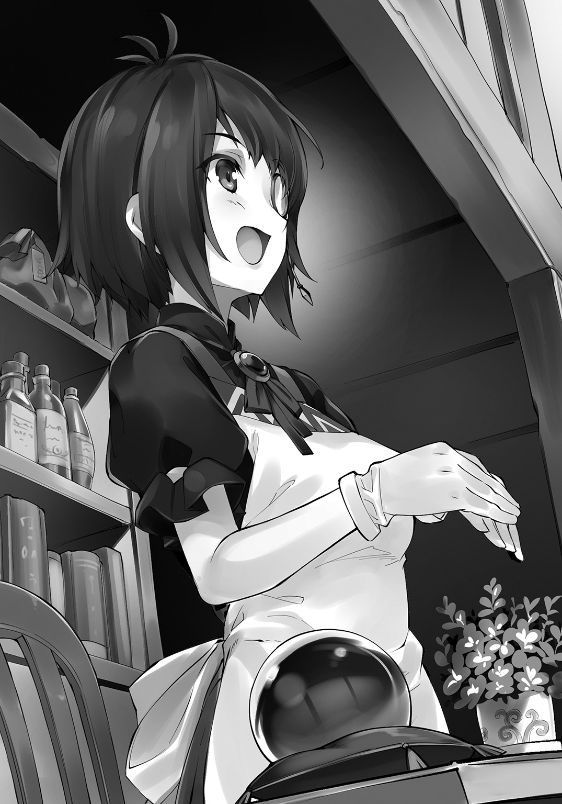
水晶をじっと覗き込んでいたミレアさんは、しばらくして顔を上げると、私のことを困惑した表情で見返してきた。
「登録名で呼ばせていただきますね。ええと、アニさん」
「はい、何です？ もう田舎に帰れよって数値ですか？」
「いえ、そうではなく。転職したてというお話でしたが......アニさんのＬｖ、もう26になっていますよ？」
「へ？」
呆気に取られつつ、首を伸ばして水晶を覗き込んでみる。
（......あ、ホントだ。Ｌｖ26になってる）
うわ、やっぱり素早さ高いなぁ。騎士の時と倍くらい違う。スキルも色々増えてるわね。なになに。『スリ』に『錠開け』、『盗み聞き』。
あははー。私、着々と立派な盗賊になってるー。
現実逃避の投げやりな思考になっていると、ミレアさんが我に返り、ガバッと水晶に視線を戻す。彼女が紡ぐ言葉には、抑えきれない興奮が宿っていた。
「えっ、ちょっ、これどういうことです!? 戦績は『戦闘回数』０回、『盗む』成功１回で合ってますよね!? 特殊ポイントだけで何でこんなＬｖになるんですか!?」
「うん？ 特殊ポイントって何だ？」
未だ心ここにあらずの私に代わり、鈴木がそう問いを放った。鈴木はギルドの一員ではないのだし、教える義務はないだろうが、ミレアさんは勢い込んで答える。
「えとですね、Ｌｖを上げるための経験値は一般的に、モンスターを倒すことで得られるんですけど、それ以外に特殊ポイントというものが経験値として加算されるケースがあるんです。たとえば商人なら、利益が出るように物品の売買を行えば、『商う』の特殊ポイントが経験値として入るわけです」
「ふむふむ」
「アニさんは盗賊なので、誰かから何かを『盗む』ことで特殊ポイントが入るわけですけど、たった一度の盗みだけでＬｖが26まで上がっちゃってるんですよ！」
説明を聞くうちに意識が現実へと戻ってきた。と同時に、私の毛穴という毛穴から、ぶわっと汗が噴き出す。腰に提げている『盗賊の袋』が、急にズシリと重くなったような気がして、膝が微かに震えた。
「ほほぅ。アニが盗みをねぇ......」
鈴木がそう呟き、私の方をチラリと見る。
嘲り、罵ってくれたならどれほど救われただろう。けれど鈴木の顔に浮かんでいたのは、勝ち誇っているようでありながら、どこか慈愛に満ちた、きっと悪魔の類が人間をたぶらかす際に見せるものと同類の、ニマニマとした不穏な笑み。私は滝のような汗を流しながら喘ぐ。
「ち、違うのよ鈴木。あれは盗んだとかじゃなくて、そのぉ......」
「わかってるってぇ。なんたってアニは聖騎士を目指してるんだもんな。盗みなんてしないよなぁ？」
「ふぐぅっ！」
鈴木はさりげなく痛恨の一撃を放ったのち、ミレアさんへと向き直って話を続けた。
「ねぇねぇ。ちなみに一回の盗みでＬｖが26まで上がるって、凄いことなの？」
「凄いなんてもんじゃないですよ！ いったいどんな高難度の盗みを働けばそんなことになるのか見当もつきません！ 前代未聞です！」
「カリオ○トロの城に忍び込んでクラ○スの心を盗むぐらい凄いの？」
「すみませんソレよくわかんないですけど多分そんな感じです！」
私たちの会話を聞くとはなしに聞いていたのだろう。周りにいるフリーターたちが、私の方をチラチラと盗み見ながらざわめく。
「おい、今の聞いたかよ？ 奴はとんでもないものを盗んでいったらしいぜ」
うぐぐっ！
「ああ。しかも厚顔無恥にも盗んでないと言い張ってやがる」
ひぎぃっ！
「盗賊としての誇りがねぇよな。まあ、チンラーするクズよりはマシってところだ」
それもやったしぃ！
痛恨の三連撃で私のライフポイントが限りなくゼロに近づいた。思わずその場に片膝を突くと、鈴木が不意に私を庇うようにして立ち塞がり、フリーターどもを一喝する。
「お前ら陰口叩いてんじゃねぇ！ アニはやってないって言ってんだろうがぁ！」
「す、鈴木......」
「アニを疑うってんなら、俺が相手になってやるという心意気を胸に秘めつつ、常識的にきちんと身体検査して身の潔白を証明してやらぁ！」
「す、鈴木......!?」
「誰でも魔が差すということはある！ しかしやってしまったことを反省せず、あろうことか誤魔化そうとする奴はゲスだ！ ゲスの極みだ!! もしもアニの持ち物に盗品が紛れ込んでいた場合、アニには全ての街の広場で、鼻から牛乳を飲んで口から出すという下劣極まりない一発芸を――」
「私がやりましたぁ！ 私が盗みましたあぁぁっ!!」
鈴木は私の告白を聞くと、ハッとした表情を浮かべた。芝居がかった動作で口元を覆い、ヨロリと一歩後ずさる。
「アニ、お前......」
私は崩れ落ちるようにして床に四つん這いになった。ミレアさんが心配そうに身を乗り出しつつも、抑え切れない好奇心を漂わせて訊ねてくる。
「アニさん。あなたはいったい、どこで何を盗んだんです？」
期待に満ちた無数の眼差しが私に突き刺さった。この衆人環視のなか犯行を自供するというのは身が引き裂かれるほど辛いことだが、これはきっと天罰に違いない。私は諦めの心境でぼそりと告げる。
「魔王の城に忍び込んで、宝物庫の品を少々......」
「Ｌｖ１の状態で!? 正気ですか!?」
ミレアさんの驚愕に呼応して、フリーターたちが度肝を抜かれた様子で浮き足立った。方々のテーブルで交わされる興奮気味の会話。誰かが酒を買ってこいと叫び、そんな金あればクエスト待ちしねぇよと逆ギレされたりしている。
そんな喧騒も、どん底の私にはもはや無関係。私は懺悔する。
「うぅ。ごめんなさい。ほんの出来心だったんです。これは文化財の保護なんだって、そう言い聞かせて。決して盗む気はなかったんです......」
拳で床を何度も叩き、ぼろぼろと涙を零す私。その様子を戸惑いの表情で見守るミレアさんが、おずおずと発言する。
「あのぉ。出来心も何も、アニさんって盗賊ですよね......？」
「そうです。私は身も心も盗賊に成り果ててしまったんですぅぅふぐぅぅぅ」
「この子にいったい何があったの!? ちょっとそこのフリーター、自分のも頼んでいいから、ギルドのツケで酒場から一番キツイ酒買ってきて！」
「ひゃっほい！」
ミレアさんはカウンターを回り込んで私の隣にやってくると、その場にしゃがみ込んで背中をさすってくる。
「アニさん。余計なお世話かもしれませんが、あなたは盗賊に向いてないんじゃないですか？ Ｌｖが20越えてることですし、転職を考えてみてはどうでしょうか？」
「転職......!?」
それはまさしく天啓だった。私は弾かれたように顔を上げると、ミレアさんの手をがしっと握り締める。
「そうか！ 私はもう転職できるＬｖなんだし、また騎士になればいいんだ！ 盗賊ステータスの補正もあるから、そこそこ強いモンスターともすぐに渡り合えるだろうし、聖騎士にだってあっという間になれちゃうかも！ うわ、ミレアさんありがとう！」
「いえそんな。気づいてなかったんだ......」
諦めかけていた夢が再び現実のものとなってきた。転職を禊として心を入れ替え、清く正しく聖騎士を目指せばいいんだ。
光明を得て瞳を輝かせている私に、「ちょっといいかい？」と声がかけられたのはその時だ。
ふと視線を巡らせば、ギルドの片隅にいたフリーターの一団が、私の傍までやってきていた。服装からして全員職業は盗賊らしい。声をかけてきたのは一団のリーダーと思しき中年の男だ。ひょろりとした長身やタレ目から何となく虚弱な印象を受けるが、口元に浮かぶニヤニヤとした薄笑いからは、根拠のない自信が滲み出ている。
「あっしは小さな盗賊団の頭領をしてる、ゼントってもんでさぁ」
「え？ あぁ、どうも。あの、私に何か......？」
不審に思いつつもそう問いかけると、ゼントは鼻息荒く告げてきた。
「アニさん！ いいや、アニの姉御！ 魔王城に忍び込んで宝物庫を荒らす、その度胸と神業に惚れたぜ！ どうかオレたちの頭領になってくだせぇ！」
「はぁ!?」
私は素っ頓狂な声を上げるが、ゼントたちは冗談を言っているわけではないらしい。一斉に「よろしくお願いします！」と声を張り上げ、その場で頭を下げる。
「ちょっ、ちょっと待ちなさいよ！ 私に盗賊団の頭なんてムリだから！」
「ふっ、なるほど。いったいどんな盗賊団なのか、その由来を聞かない限り、軽々と話は受けられないってわけですね？ さすが姉御、思慮深い」
「褒められて悪い気はしないわね......」
「ゼント盗賊団の結成は、今を遡ること五年前！ 魔族専門に盗みを働き、利益を貧しい人々に分け与えるという高尚な目的で旗揚げされた、唯一無二の盗賊団でさぁ！」
「あら。けっこうマトモな盗賊団じゃない」
そう思ったのも束の間――。
「......しかし理想と現実の溝は深く、今はギルドにやってくる駆け出しの冒険者に狙いを絞って、仲間になるフリをして彼らのケツの毛まで毟り取ることで糊口を凌いでいる」
「クズねあんたら!?」
こんな奴らと関わっている暇はない。私はすぐにでもクレミー神殿に向かわないと。
すぐさま断ろうとしたが、ゼントに自分と同じような匂いを嗅ぎ取ったのだろうか。鈴木が話に割って入る。
「ちょっと待ったー！ そういった交渉事は、ネゴシエーターの俺を通してもらおうか！」
「ん？ あんたは？」
「アニと一緒に魔王城に忍び込んだ鈴木だ！ アニを頭領にしたいなら、二つ条件を呑んでもらおう！ 一つ、俺を副頭領にすること！ 二つ、盗賊団の得た財宝の三割を俺に寄越すこと！ どうだ、悪くない条件だろう!?」
「姉御が頭領になってくれるなら喜んで！」
私が口を挟む間もなく、とんとん拍子で話が進んでいく。
逼迫したものを感じ取った私は、息せき切って言った。
「ちょっと勝手に話を進めないでよ！ 私はもう盗みなんかしないんだから！」
だって私は一から出直して、聖騎士になるのだ。
そんな決意を汲み取ったのだろうか。ゼントは全て承知したとばかりの得心した表情を見せ、一つ大きく頷いた。
「姉御が言いたいことはよぉくわかりやした」
「え、ほんと？」
「えぇ。姉御はもう盗みはしない。......ただし、悪党は別だ！ 何せあっしら義賊団の頭領なのだから！」
「おいクズ、話聞いてた!? というか駆け出しの冒険者を食いものにするあんたらが義賊団を名乗ってんじゃないわよ!!」
「ふっ、なるほど。確かに義賊は自分たちが名乗るもんじゃない。民衆から認められてこその義賊だ。さすが姉御、おみそれしました！」
「くぅ!? 自分は察しがいいと思い込んでるただの勘違いヤローは聞く耳を持たない！ あのね、私は盗賊団の頭領なんてならないって言ってんの!!」
「そんなこと言わないでくださいよ姉御！ おいテメェらもボケっと突っ立ってないで姉御に誠心誠意お願いしろ!!」
ゼントの号令に応じる形で、彼の背後に控えていた盗賊たちが口々に声を上げる。
「よろしくお願いします、アニの姉御！」
「アニの姉御！」
「アニキっぽい姉御！」
「胸とかアニキっぽい姉御！」
......そのとき私は気づいてしまったのです。
面倒ごとを抱え込まずとも、今の私のＬｖなら、この場にいる全員を亡き者にできるのだということに――。
抜き身のナイフを片手に、ゆらぁりと上体を動かした時だ。鈴木が隣にやってきて、潜めた声で言う。
「本当に頭領になる話を蹴ってもいいのか、アニ？ 転職して上手いこと白夜聖騎士団に入れたとしても、新人のお前に待っているのは、先輩のくっさい下着の洗濯係が関の山だぞ？」
「うっ。そ、それが何だっていうのよ。どんな形であれ、人類の希望であるルーシュ王子のお役に立てるのなら本望よ」
「ルーシュ王子ねぇ。どんだけ立派な人物か知らんが、カリスマ性で言えばアニも負けてないと思うがな」
「............私がルーシュ王子に負けてない？」
何だかグッと引き込まれる言い回しだった。
私の動揺を見逃さず、鈴木は甘い口調ながら、畳みかけるように言葉を紡ぐ。
「ああ、そうだ。ほぉら、よぉく見てみろ。お前を頭領に迎えたいと言っているゼントたちの熱意を。やんごとない身分である王子ならまだしも、一介の盗賊にこれだけの者たちが心酔してるんだぞ？ これをカリスマと言わず何と言う？」
「カリスマ......私が......」
「言葉が抜けているぞ。王子を凌ぐカリスマだ」
「王子を凌ぐ、カリスマ......」
私は鈴木の言葉をオウム返ししながら、ゼントたちの表情をじっくりと見渡してみた。私を勧誘するため、未だに必死で声を張り上げている彼らの瞳には、確かに妄執とも言うべき熱意が宿っている。
それに気づいた瞬間、背筋がゾクゾクッと粟立った。
皆が私を求めている。
皆が私を見つめている。
まるで。
まるで――
......神を称えるような目で。
神を称えるような目で！
「ハッ！ だ、だめよアニ！ 私は聖騎士になるの！ 盗賊団の頭なんかしてたらその夢も遠ざかってしまうわ!!」
とそのとき、ミレアさんがパシリに使ったフリーターが、酒を片手にギルドに戻ってきた。私はそのフリーターから酒をかっさらうと、グイッと一気に呷る。喉に走る灼熱感。五臓六腑に染み渡る酒気が、カーッと体温を上げる。
私は邪念を振り払うように、腹の底から咆哮を上げた。
「うおおぉぉぉぉぉ――――――っ!!」
すると。
私の雄叫びの意味を履き違え、ゼントが破顔して言う。
「おぉっ!? 姉御があっしらの思いに応えてくれたぞ！」
「へっ!? ち、違っ、」
「ヤローども、今日からあっしらはゼント盗賊団改め、アニ盗賊団だ！」
『オオオォォォッ!!』
「止めてぇ！ 私の名前を冠さないでぇ！ パパとママに顔向けできないから止めてぇ!!」
「ふっ。確かに今は名乗るのも気恥ずかしいほど小さな盗賊団だ。でも、すぐに胸張って親御さんに報告できるようになりますぜ！ 何せ姉御はＬｖ１で魔王の城に忍び込んで宝物庫を荒らすという偉業を成し遂げたんだ！ その強欲と蛮勇は、広く世界に知れ渡るに違えねえ！」
「殺せぇ！ いっそ私をこの場で殺せぇ!!」
そう叫んだ瞬間、酔いが急激に回った。私は背後にヨロリとよろけるが、誰かの腕が身体をはっしと抱きとめてくれる。反射的に振り返ると、息がかかるほど近くに鈴木の顔があった。
「す、鈴木......」
不覚にも、ちょっとドキッとした。
鈴木はそんな私の動揺を知ってか知らずか、優しい声音で告げる。
「今日は色々あったから疲れが出たんだろう。後のことは心配ないから、お前はもう休め」
「で、でも......」
「大丈夫。悪いようにはしない」
不意に強烈な睡魔に襲われ、瞼が重くなった。お酒のせいもあるだろうが、魔王城に忍び込んだ際の極度の緊張状態で、思った以上に身体が休息を欲しているのだろう。
「ほ、本当に......任せても、いいの？」
「ああ、もちろん」
「目が覚めたら、盗賊団の頭になってたなんて......絶対に、嫌だからね......？」
「当然だ。アニが眠っている間に諸々の手続きを済ませて、アニ盗賊団の旗揚げを済ませたりなんかしない。ゼントたちを使ってアニの偉業を内外に知らしめ、途中で足を洗うなんてことができないよう、外堀を完璧に埋めておこうなんて微塵も考えてない」
「そう......よかった......」
それじゃあ私は少しだけ眠ろう。
瞼を閉じると、瞬間的に深い闇へと意識が沈んでいった。ウソのように静かなその世界で、ひどく遠くからミレアさんの声が聞こえたような気がした。
......そんな......いけません......
寝てる間に......拇印を押させるなんて......
ひどい......ゲス......
これじゃあ、アニさんは......なれない......
聖騎士に......
なれない..................。
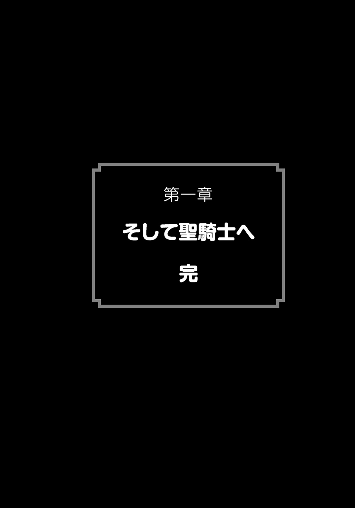
【第二章】ミレアの憂鬱
１話それは高難度クエストです。
「あっ、このクエストよさそうですね。報酬もけっこういいし」
あっけらかんとした様子でそう訊ねてくる冒険者を、わたしは無作法にならないよう注意しながら観察した。
職業は魔法使い。
性別は男。
ステータス確認は行っていないのではっきりとしたことはわからないが、身ごなしと、Ｄ級クエストを少し躊躇いがちに選んだその挙動から、Ｌｖは恐らく５～７程度。
そう推察したわたしは角が立たないよう、にっこりと微笑みつつ告げた。
「お一人でのクエストでしたら、そちらよりもこの『モンスターの角集め』のクエストが最適かと思いますよ」
「うーん。でも前にも似たクエストやってるしなぁ」
「でしたら効率もよくなっているはずですし、好都合じゃないですか。それに先ほどの『パペット退治』の場合、パペットが仲間を呼ぶのでお一人だと厄介ですよ。魔法の詠唱中に敵の数が倍になってることもありますから」
「え？ そうなんで......あぁいや、もちろん知ってますけどね！ 常識ですよね！」
魔法使いの顔に、虚栄心に満ちた引きつった笑みが貼り付いた。その様を目にして、わたしは自分の推察が正しかったのを確信する。やはり彼は素人に毛が生えた程度のルーキーだろう。冒険に慣れてきたので、少し背伸びしたクエストに挑戦しようとしているのだ。
そういった時期が一番危険だと心得ているわたしは、彼の自尊心を傷つけないように話を続ける。
「単独でクエストに挑まれている勇敢な冒険者にもしものことがあれば、ギルドにとっても大変な痛手となります。わたしとしては、最適と思われるクエストをお勧めしたいのですが......」
「いやぁ、そこまで言われたら仕方ないですね！ わかりました。今回は角集めのクエストにしときます」
「かしこまりました。ではこちらの依頼書にサインをお願いします」
そうして一通りの手続きを済ませると、魔法使いは意気揚々と冒険へと出立していった。
密やかな達成感に浸りつつ、ほぅと吐息を洩らした時だ。不意に背後から声をかけられる。
「ミレアくん、ちょっと」
肩越しに振り返ると、恰幅のいい中年男性がすぐ傍に立っており、渋面を浮かべてわたしを見下ろしていた。このギルドの責任者であるトマス所長だ。
トマス所長は額に年中浮かべている汗を拭うと、少し遠慮がちに告げる。
「ミレアくん。さっきの冒険者のことだけど、ああいった対応は困るんだよ」
「え？ 何か問題があったでしょうか？ 力量に見合った最適なクエストを斡旋したつもりですが」
「それだよそれ。冒険者の成長を見守ることもギルドの大切な役割だから。あまり簡単なクエストばかり勧めてもらっちゃ困るんだ」
「しかし所長。先ほどの方のＬｖではパペット退治は荷が重過ぎます。成長を見守るためにもクエストのランクを下げるのが妥当かと思うのですが」
「あぁいや、うん。まぁそうなんだがねぇ......」
所長は何か言いよどんでいる風で、歯切れの悪い言葉をぼそぼそと零した。しかしやがて、はぁと溜め息をつくと、内緒話をするように声のトーンを落とす。
「ここ最近は不況続きだろう？ はっきり言うとさ、ああいった命知らずの冒険者が一番お金を落としてってくれるわけじゃない。回復アイテムを使いまくってくれたら道具屋が儲かるし、手に負えないモンスターと戦うために武具を新調してくれたら武器屋と防具屋が潤う。もし死んじゃったら復活させる教会に寄付金たんまりだしね。そういったことも頭に入れてくれると助かるんだよねぇ」
「それって、冒険者にもっと危険な橋を渡らせろということですか......？」
わたしの声音に剣呑なものを感じ取ったのだろう。トマス所長は慌てた様子で言を継ぐ。
「そんな身も蓋もない言い方しないでさ。ほら、ミレアくんは元冒険者で経験も豊富だし、より適したクエストを顧客に紹介するようにしたら、Ｌｖも早く上がるしみんなも潤うしで一石二鳥ってことだよ！」
「所長。まさか商人ギルドや教会との癒着はないですよね？ もしそうなら冒険者ギルドの掟に反して――」
「あっ、新しいお客さんが来たよ！ まあそういうことだから、気をつけてみてよ！」
そう言い置くと、トマス所長はいそいそと自分のデスクに戻り、普段は散らかし放題の書類の整理に取りかかる。挙動不審なその態度から察するに、どうやら本当に賄賂でも受け取っているようだ。
わたしは呆れ返るが、受付にお客さんが歩み寄ってくる気配を感じ取り、営業スマイルを浮かべて前へと向き直った。
「いらっしゃいませ。今回はどういったご用件――」
「みーちゃん、おはよう！」
わたしは思わず及び腰になった。目の前にいたのは、ここ最近、毎日ギルドに顔を見せる鈴木さんだったのだ。
「うっ......す、鈴木さん。おはようございます」
「あれぇ？ みーちゃん元気ないね！」
「えぇと、鈴木さん。その『みーちゃん』って呼び方、止めてもらってもいいですか？ わたしにも一応立場というものがありますので......」
「えぇー。それじゃ何て呼べばいいの？」
「えっ？ わたしの方は『鈴木さん』と呼ばせてもらってますから、ここは普通に『ミレアさん』とかで......」
わたしのその言葉を聞いた鈴木さんは、キリッと眉を吊り上げた。
「呼び方を押しつけてくるなんて、俺の女にでもなったつもりか！ よろしくお願いします！」
「この際みーちゃんでいいです！ それでご用件は!?」
「あぁ、そうそう。これをギルドに飾らせてもらおうかと思って」
鈴木さんはそう言うと、一枚の絵を取り出してカウンターの上に置いた。どうやらアニさんと鈴木さん、そしてゼントさん三人を描いた人物画のようだが、構図が少しばかり変わっている。中央にいるアニさんは正面ではなく横を向いていて、眼差しは明日を目指すかのように空へと馳せていた。その視線を辿るように、上空をまっすぐ指差している右腕。彼女を挟むように描かれている鈴木さんとゼントさんも、同様のポーズを取っている。そして、人物画だというのに、アニさんたちの前にでかでかと文字が躍っていた。
『団員求む！ 魔王城を攻略せし大盗賊、アニの元へ集え!!』
わたしが目をぱちくりさせていると、鈴木さんは得意げに胸を反らした。
「どう!? 自衛隊のポスターみたいでカッコイイよね!?」
「じえいたい？ ポスター？ ......ええと、ちょっとよくわかりませんけど、人物画を利用した求人ですか？ 確かにこれだと人目を引きますし、いいアイデアだと思います。鈴木さんが考えたんですか？」
「......モチロン！ これ俺の発明ね！ ポスターって名付けたよ！」
ちょっとした工夫だけど、こういうの思いつくってすごいなぁ。意外と多才なのかも。
そう感心していたわたしは、やがてハタと思い至る。
「――いやこれダメですよ！ 飾れません！」
「えぇー。何でさ？」
「アニさんの現状わかってますよね!? 鈴木さんのせいで引き籠もっちゃったんですよ!?」
そうなのだ。
ゲスな手口で盗賊団の頭領に祭り上げられてしまったアニさんは、前身であるゼント盗賊団のアジト、街外れにあるほったて小屋の一室に引き籠もり、一歩も外に出なくなってしまった。鈴木さんの暴挙を止めることができなかった負い目もあるが、何よりもアニさんの体調が気がかりなわたしは、何度も彼女のもとに足を運んでいる。しかし、アニさんの症状は悪化するばかりだ。
たとえば、三日前のこと――
わたしがアニさんの籠もる部屋を訪ねると、中から厳重に施錠されていた鍵が外され、ドアが十センチほど開いた。その隙間から窺えるのは、髪がボサボサで、頰も少しばかりこけて、なんだか居たたまれない風貌のアニさん。
アニさんは死んだ魚のような目をわたしに向け、開口一番こう告げた。
「誰かと思えばミレアさんじゃないですか。......あぁいや、言い直します。盗賊の私と違って、お天道様の下を堂々と歩けるミレアさんじゃないですか」
「何ですその前置き!? 生まれて初めてそんなものつけられましたよ!?」
「ははは。冗談ですよぉ。ははは。ひひひ。ふふふ。へへへ......」
駄目だアニさん笑い方を忘れかけてる！
何とか元気づけようと思ったわたしは、腕に提げていたバスケットを持ち上げ、めいっぱい明るく言った。
「じゃーん！ 突然ですがここでクイズです！ このバスケットの中身は何でしょうか!?」
正解はサンドイッチ。
アニさんは食事もろくに取っていない風だから、ミックスサンドやタマゴサンドなど、栄養価の高いものを差し入れとして持ってきたのだ。
中身が食べ物だということはさすがに察したのだろうか。アニさんはお腹の減った子供よろしく、下唇に人差し指を押し当て、じぃーっと物欲しそうな眼差しを送ってくる。
やがてアニさんはぽつりと呟いた。
「いいなぁ。羨ましいなぁ......」
「ふふ。別に見せびらかしに来たわけじゃないですよ。バスケットの中身を当てたら全部アニさんに差し上げます。ヒントは、パンの間に色々な具をサンドした、」
「いいなぁ。ミレアさんがバスケット持ってても、『ヤダあれ盗品かしら』とか言われないんだろうなぁ......」
「もうクイズとかどうでもいいんでとにかく食べましょう！ 中身サンドイッチなんでとにかく食べて元気出しましょう!!」
わたしが半ば押しつけるようにしてバスケットを手渡すと、アニさんは少し躊躇いつつも蓋を開け、具がぎっしりと詰まったサンドイッチを眺めた。その口から洩れる、思わずといった感じの呟き。
「うわ。美味しそう」
「いっぱい作ってきましたから、たくさん食べてくださいね。こっちの水筒にはハーブティーを入れてます。心が落ち着きますよ」
「うぅ。ミレアさん女神様みたい。それじゃあ、お言葉に甘えて。いただきます」
アニさんはそう言うと、タマゴサンドを遠慮がちに口に運んだ。
「どうですか？ 甘めの味付けにしてみたんですけど......」
味の感想は結局聞けなかった。アニさんは目を丸くすると、すぐさまもう一口。そのまま全部頰張ると、次にポテトサンドに齧りつく。
そんなアニさんの様子に、わたしはクスッと笑みを零した。
「あんまり急ぐと喉に詰まらせちゃいますよ？ ご飯を食べて元気になったら、たまには部屋から出てきてくださいね。みんなアニさんを待ってますから」
他意なく、純粋な思いを伝えたのだが、この一言は余計だった。アニさんはぴたりと動きを止めると、ずうぅんと沈鬱な声音でぼそぼそと応える。
「待ってる......そうですよね。なんたって私、盗賊団の頭領ですもんね。しかも鈴木が私のこと、魔王城に易々と忍び込んだ大盗賊って触れ回ったから、職にあぶれたフリーターとかが、入団希望者として押し寄せてきてますもんね......」
「いやその、盗賊団の頭領としてではなくて！ アニさんの快活な姿に勇気づけられる人も多いと思うんです！」
「私の姿に？ ふ、ふふっ。無理ですよぉ。私のこと、盗賊としてしか見てくれませんから。あれ、いつだっけなぁ。人相風体まで知れ渡ってるとは思っていなくて、広場の方に散歩に出た時があったんですよ。そうしたら、小さな子供を連れたお母さんが私に気づいて、『見ちゃダメ！ お菓子盗まれちゃうわよ！』って、子供を背中に隠したんです。ふふ。うふふ。そりゃ引き籠もりますよねぇ......」
「アニさん......」
その話、もう五回目です。
これはかなり重篤な状態だと判断したわたしは、とにかく時間をかけて心の傷を癒していくしかないと結論づけたのだ。
だというのに――。
わたしは鈴木さんが持ってきたポスターを指差し、非難の声を上げる。
「そんなものまで貼り出すようになったら、アニさんは余計に引き籠もっちゃうじゃないですか！」
「えぇー。でも邪魔なアニが引き籠もってる今のうちに、引っ込みがつかなくなるほど団を大きくしとかないと。ポスター貼らしてくれたらいくらかお金も払うよ？」
「そういう問題じゃ――」
ない、と反発しようとしたとき、オッホンとわざとらしい空咳が聞こえてきた。そちらに視線を向ければ、トマス所長がそ知らぬ体で窓の外を眺めつつも、デスクの上でグッと親指を立てている。お金もらえるならＯＫというサインだろう。
わたしは頭痛を覚え、思わず眉間を押さえた。するとそのとき、鈴木さんが何か思い出したように、アッと声を上げる。
「そろそろグロドの洞窟に行かないと！ それじゃみーちゃん、あとよろしくね！」
「はあ。わかりました。お気をつけて」
そう見送ろうとしたわたしだが、ふと気づいて呼び止める。
「えっ、ちょっと待ってください。鈴木さん、今どこ行くって言いました？」
「うん？ グロドの洞窟だけど？」
「グロドの洞窟って......あそこ、高難度のクエストしか発生してませんよ？」
わたしの見立てでは、鈴木さんのＬｖは恐らく１。職業で言えば村人だ。ゼント盗賊団のメンバーにも高Ｌｖの者はいなかったと記憶しているし、グロドの洞窟攻略に臨むのは自殺行為である。
「グロドの洞窟のこと、いったい誰から聞いたんです？」
「この辺で広い洞窟ないかって訊ねたら、あそこのおっちゃんが教えてくれた」
鈴木さんが指し示す先にいるのはトマス所長だ。所長はわたしたちの会話を聞いているだろうに、口笛を吹いてわざとらしく知らんぷりをしている。わたしが休みの日に対応し、グロドの洞窟を紹介したのだろう。
所長が先ほど話していた内容が脳裏を過ぎる。
〝ああいった命知らずの冒険者が一番お金を落としてってくれるわけじゃない〟
わたしは泡を食って止めにかかる。
「ま、待ってください！ グロドの洞窟には強力なモンスターも出ますし、もっとお手軽なところを攻略したらどうですか!? たとえばこれ、今朝依頼書が回ってきたばかりなんですけど、ノエルの森に迷い込んだ子供を助け出してほしいっていうクエスト！ 出没するモンスターもグロドの洞窟とは比較にならないほど弱いですし！」
「迷子の捜索ぅ？ きっともうモンスターに食われてるよ」
「ヒドイこと言わないでください！ たぶんそうだろうなぁと思ってても、それ言ったらいけないやつです！ それぐらいわかりますよね!?」
「それに、森だと雨降ってきたら濡れちゃうし......」
「そこ気にするところですか!? 確かに洞窟なら雨風凌げますけど、強力なモンスターに会ったら殺されちゃうんですよ!?」
「ちゃんと準備してるし、アニ盗賊団総出で向かうから大丈夫だってぇ。みーちゃん、心配してくれてありがとうね！ それじゃ行ってくるね！」
「えっ、ちょっ、」
食い下がろうとするわたしを牽制するように、トマス所長が再びウォッホンと空咳をした。余計なことはせずに冒険させなさいよそしてお金使わせなさいよというメッセージだろう。
この就職難に、あまり所長と対立はしたくない。けれど、このまま鈴木さんやアニ盗賊団の面々をグロドの洞窟に向かわせては、多数の死傷者を出すことになるだろう。最悪の場合、全滅ということもありえる。
（そんなことさせられないわ。何とかしないと......）
悩んでいる時間はない。わたしは腹を括ると、思い切って言った。
「わかりました！ わたしも同行します！」
「えっ？ みーちゃんが？」
「そうです。こう見えてわたし、元冒険者なんです。グロドの洞窟攻略に、多少なりとも力になれると思います」
わたしがそう言い終わるや否や、鈴木さんがカウンターから身を乗り出し、わたしの手を包み込むように、ガシッと両手で握り締めた。
「ちょっ、す、鈴木さん!?」
「みーちゃんがそんなに俺のこと気遣ってくれるなんて！ これもう結婚するしかないね!?」
「け、結婚!? いやそういうことじゃなくてですね、鈴木さんはクエストに不慣れみたいですし、盗賊団が全滅なんかしちゃったら、アジトに引き籠もってるアニさんの生活にも支障が、」
「でも居酒屋のルイーズちゃんも可愛いんだよね！ アースノウって一夫多妻も問題ないみたいだけど、みーちゃんは第何夫人までならプライドが許す!?」
「鈴木さん最低ですね！ それフツー女性に聞きますか!?」
あぁ、ダメだ。鈴木さんと話していると何だか調子が狂う。
とにかく準備を整えようと、わたしは渋る所長から何とか有休を取りつけたのだった。
２話グロドの洞窟
「へー。ほー。なるほどぉ。こうなるのかぁ......」
いったん自宅に戻り出立の準備を整えたわたしを待っていたのは、鈴木さんの好奇の眼差しだった。鈴木さんはわたしの頭から爪先まで、舐めるようにじっくりと見回す。
「みーちゃんって魔法使いだったんだね。受付にいる時は大人しい服装だったから、魔女コスは新鮮だね！」
「あの、そんなにジロジロ見ないでください。久し振りに着たから少し恥ずかしいし」
「似合ってるからいいじゃん！ スカートも際どくてポイント高いし！」
「だからそんなとこ見ないでください！ ゼントさんたちとグロドの洞窟前で待ち合わせてるんでしょう!? 早く向かいましょう！」
鈴木さんは不満げだったが、やがて腰に提げている盗賊の袋から、ピアラの羽根を取り出した。一度行ったところに連れて行ってくれるアイテムということを鑑みれば、どうやら最低限の下見くらいは済ませているようだ。
わたしをピアラの羽根の有効範囲に入れるためだろう。鈴木さんはわたしの隣に寄り添うように近づいてくる。
「......あの、鈴木さん。わたしが肩を摑めばいいだけなんですけど。何で腰に手を回してくるんですか？」
「まぁまぁ。細かいこと気にしない、気にしない。それに一緒にグロドの洞窟に行くってことは、臨時とはいえアニ盗賊団の一員だから！ 俺の言うことは絶対ね！」
「鈴木さん。それパワハラって――」
「行き先、グロドの洞窟！」
ピアラの羽根が効力を発揮し、わたしと鈴木さんの身体がギュンッと上空へ飛び上がった。
冒険者の頃は何度も行った高速飛翔の移動だが、ここ最近は全く利用していない。わたしはそのスピードと高さに一瞬怯み、思わず鈴木さんにしがみつく。するとすぐさま、鈴木さんが弾んだ声を上げた。
「ひょう！ みーちゃん大胆だね！」
「ち、違います！ わたし、前から高速飛翔は苦手で！」
「んじゃもっとよく摑まってなよ！ 安心できるでしょ！」
「うぅ......」
背に腹はかえられない。わたしは不本意ながらも鈴木さんにギュッと摑まった。
受付で話していた時は貧相な身体つきだなと思っていたが、こうして身を寄せてみると、やはり男の子なのだなと思う。意外としっかりとした筋肉の張りに、わたしは少しばかり動揺してしまい、期せずして鼓動が速くなる。
（これってアレかな。一緒にパーティー組んで冒険に出ると、モンスターと対峙した際のドキドキとかを恋心と勘違いするっていう、『冒険効果』と一緒なのかな？）
そんなことを考えたわたしは、すぐさまブンブンと頭を振った。それではまるで、鈴木さんを異性として意識しているようではないか。
（それはまあ、まるでどこか別の世界からやって来たみたいな独特な感性の持ち主だし、妙に目を引くところはあるけど。アニさんにあんな酷いことする人なんだから！）
そう強く自分に言い聞かせているうちに、どうやら目的地に着いたらしく、両足が地面に触れた。わたしはすぐさま鈴木さんから離れ、お礼だけ告げる。
「その、ありがとうございました。おかげで落ち着きました」
「お礼なんていいよ！ 俺も押しつけられるおっぱいの感触を堪能したし！」
「もう鈴木さんとは二度とピアラの羽根使いません！」
わたしは頰が赤くなっていることを悟られないよう、フイと顔を背けた。するとグロドの洞窟前に、アニ盗賊団の面々が見て取れる。その数、およそ五十。
（うわ、すごい。鈴木さんが熱心に広報活動してたのは知ってたけど、ゼント盗賊団の頃の十倍に膨れ上がってる......）
最近見かけないと思ったら、ギルドに足しげく通っていたフリーターたちの姿もあった。どうやらアニ盗賊団に就職したらしい。
それはまあいいのだが、わたしは彼らの様子に目を瞠った。今からグロドの洞窟攻略に向かうのだ。普通なら、適度な緊張のなか、各々が得意とする武器の手入れなどを行って、集中力を高めているはずである。
ところが――
「たーおれーるぞー」
斧を持った戦士がそう叫ぶと、グロドの洞窟の傍に立っていた巨木がメキメキという音を立て、地面へと崩れ落ちた。戦士は額の汗を拭い一休みしようとするが、ゼント盗賊団の初期メンバーにせっつかれ、すぐさま次の樹を切り倒しにかかる。
「押せぇ！ 気合い入れて押せぇ！」
その怒声の方に視線を転じれば、石をめいっぱい積んだ荷車の上で鞭を振るう、こちらもゼント盗賊団の初期メンバーの姿があった。遅々として進まないその荷車を必死の形相で押すのは、ギルドにいたフリーターたち。足がもつれて転げようものなら、
「誰が休んでいいと言ったぁ！ オラァ、立てえ!!」
ビシバシと容赦なく鞭が飛び、悲鳴と血潮が辺りに飛び散る。
わたしはその地獄絵図にも似た光景に絶句した。これはわたしが知る冒険者の姿ではない。これでは重労働を強いられる人夫だ。奴隷だ。
「な、な、何なんですかこれは!? ちょっと鈴木さん、説明してください！」
わたしはバッと横を向くが、すぐ隣にいたはずの鈴木さんが忽然と消えており、人目につかない木陰のところに移動していた。そこにはゼントさんと、樹に繫がれている雄々しい黒毛の馬の姿もある。
鈴木さんは悪戦苦闘しつつも、ゼントさんの補助を受け、何とか黒馬の上に跨る。
「よし、ゆっくりだぞ。ゆっくり行けよ？」
「任せてくだせぇ、鈴木の旦那」
そんな会話が交わされたあと、鈴木さんはおっかなびっくり、黒馬の上で両腕を組んで胸を反らす。それを認めたゼントさんが、黒馬のくつわを取り、盗賊団の方へゆっくりと歩き出した。
（えっ!? ピアラの羽根で来たじゃないですか！ 何で馬に乗ってきた体にするんです!?）
わたしの心中などおかまいなしに、黒馬に乗った鈴木さんは、厳しい表情で進んで行く。すると、荷車の上で鞭を振るっていた人物が鈴木さんに気づき、奇声を上げる。
「ヒャッハー！ 鈴木さまのお見えだ、てめぇら跪けぇ！」
『は、はい！』
盗賊団がその場にひれ伏し、鈴木さんの到着を迎えた。鈴木さんは片手を上げて黒馬の歩みを止めさせると、睥睨するように盗賊団をジロリと見据える。まるでどこかの覇者っぽい雰囲気を充分に振りまいたのち、鈴木さんは満足したのか、おもむろに告げた。
「ちょっとここ高くて怖いから降りるね！」
「......オラぁっ、鈴木さまがとりあえず下馬なさるぞ！ てめぇら人間の階段作ってお助けしろぉ!!」
『はい喜んでぇ！』
鈴木さんは四つん這いになった団員を踏んで地面に降り立つと、何事もなかったように問いかける。
「ゼント、完成したか？」
「へい。旦那のご要望通りに！」
そう言ってゼントさんが指し示した先には、岩肌にぽっかりと大口を開ける洞窟があった。今回の攻略目標となるグロドの洞窟だが、目を引くのはその入り口にある構造物だ。
「......柵？」
グロドの洞窟には、その入り口をすっぽりと覆うように、巨木で組まれた柵があった。それは一見すれば、洞窟の深い闇と相まって、暗鬱で頑強な地下牢を思わせるもの。アニ盗賊団はどうやら、総出でこれを作っていたらしい。
わたしは少しばかり混乱し、鈴木さんに説明を求める。
「えと、鈴木さん。あの柵は何ですか？ これから洞窟攻略のクエストに向かうんだし、あんなものあると邪魔じゃないですか？」
すると鈴木さんは、何を馬鹿なことをとばかりに、わたしの意見を一笑に付す。
「やだなぁ、みーちゃん。何が悲しくて危険な日雇い労働しなきゃなんないのさ。俺そんなことしないよ！」
「え？ それじゃあ、あの柵って何です？ もしかしてアレでグロドの洞窟を封印するつもりですか？」
もしそんなことを考えているなら、あまりにも浅はかだ。確かにあれほど頑丈に作られた柵なら、モンスターが出てくるのを多少は足止めできるだろうが、それでも持って半日といったところだろう。今はその必要性を感じずにいるだけで、中のモンスターたちがその気になれば、鋼鉄の柵さえも打ち破ってみせるに違いない。
そのことを鈴木さんに告げると、鈴木さんはさもおかしそうに笑った。
「洞窟の封印なんかしても何の儲けにもならないじゃん。俺、この世で一番嫌いなものはタダ働きだからね！」
「それじゃあ、あれはいったい......」
「まあ見てなってぇ。おい、始めるぞ！」
「へい！ てめぇら、作戦決行だ！ かかれ！」
ゼントさんが威勢のいい号令を発すると、アニ盗賊団が一斉に忙しなく動き出した。グロドの洞窟前に薪が積み上げられ、すぐさま火がつけられる。焚き火と呼ぶには獰猛過ぎる炎が熾こり、黒々とした煙が立ち昇った。
いったい何をするつもりだろうと見守っていると、盗賊団の数人が戸板を運んできて、それを力強く扇ぎ始める。最初は炎を大きくするためかと思っていたが、どうやら違うらしい。彼らは風を起こし、黒煙を洞窟の中へと送り込んでいるのだ。
鈴木さんが邪悪な笑みを閃かせて叫ぶ。
「おらぁ、もっと扇げぇ！ もっと薪をくべろぉ！」
「ちょっ、鈴木さん、いったい何を!?」
「何って、アニ盗賊団も大所帯になってきたからね！ ここのモンスターを一掃して、グロドの洞窟を盗賊団の新アジトにしようと思って！」
「なっ......!?」
わたしは絶句するが、同時にギルドでの鈴木さんの言動を思い出し、ようやく得心がいく。
〝この辺で広い洞窟ないかって訊ねたら、あそこのおっちゃんが教えてくれた〟
〝それに、森だと雨降ってきたら濡れちゃうし......〟
出現モンスターのＬｖに関係なく、広さや風雨を凌げることを優先していたのは、グロドの洞窟を自分たちの拠点とするためだったわけだ。普通、魔物が巣食った洞窟は忌避の対象でしかないし、こんな大胆不敵なアイデアを出すなんて、やはり鈴木さんは只者じゃないと思う。
けれど――。
「洞窟のモンスターを一掃するなんて無茶です！ 凄腕の冒険者だって、クエストで魔窟に挑めば、暗闇からの奇襲を受けて手傷を負うこともあれば、命を落とす者も数多くいて――」
そこまで口にしたところで、わたしはアニ盗賊団が総出で準備していたものに気づき、ハッとなった。
洞窟の入り口に建造された頑丈な柵。
一昼夜燃やし続けることができるほどの大量の薪。
わたしが全てを悟ったことを察したのか、鈴木さんが得意げに頷いた、まさにその時だ。煙で燻し出された獣よろしく、ぴょんぴょんという軽妙な跳躍を見せて、洞窟の闇から何かが姿を現した。灰色のふわふわの毛並みに、つぶらな瞳。長い耳はまるで野ウサギのようだが、身体はずんぐりと丸くてどことなく愛嬌がある。とても臆病であり、こちらが危害を加えない限りは決して襲ってこない、ウサマタと呼ばれるモンスターである。
ウサマタは脱兎の如く飛び出してくるが、洞窟に設けられた柵に気づいて急停止。辺りをきょろきょろと見渡し、
「ピキィーッ!?」
と、甲高い鳴き声を上げる。
鈴木さんはゼントさんにちらりと目配せした。するとゼントさんは盗賊団の中から攻撃力に長けた戦士たちを選び出し、彼らに槍を持たせる。
嫌な予感に苛まれたわたしは、すぐさま鈴木さんに声をかけた。
「鈴木さん、ウサマタは無害なモンスターですし、無駄な殺生は......」
「心配しなくても大丈夫だってぇ。俺はネゴシエーターだからね！ とりあえず話し合ってみるよ！」
ネゴシエーターとは何だろうか？
わたしが小首を傾げている間に、鈴木さんは槍兵を伴って柵の前へと進み出る。
「ピィ、ピィ......ピキィッ!?」
煙にむせて何だか可愛らしい鳴き声を上げていたウサマタが、鈴木さんの姿に気づいて怯えたように縮こまった。極度の緊張を紛らわせようとするように、丸くて短い尻尾でタシタシと地面を叩くその仕草は、どこか微笑ましい。
鈴木さんは地面にしゃがみ込んでウサマタと視線を合わせると、静かに語りかける。
「そう怯えるな。俺も鬼じゃない。もしお前がこの場を去り、二度と戻ってこないと誓うなら命までは取らない。どうだ？ この条件を呑むか？」
ウサマタは逡巡するように長い耳をパタパタと振った。恐らくはずっと住み着いていた場所であり、立ち去り難いのだろう。それでも、命には代えられないと判断したようだ。ウサマタはその場で項垂れ、消え入りそうな声で返事をする。
「ピィー......」
「............さっきからピィピィピィピィ、なに喋ってるのか全くわからんわぁ！ 交渉決裂じゃあ、刺し貫けぇ!!」
グサッ！ グサグサッ！
「ピギィ――――――ッ!!」
「ひどぉい！ え、まっ、ひどぉい!! 鈴木さん、いまウサマタはたぶん条件呑んでましたよ!?」
「交渉事は曖昧なのってダメだからね！ たぶん呑んでくれたとかじゃ禍根を残すから！ 俺もアニ盗賊団の代表代理の立場だし、適当な交渉して団員を危険に晒すわけにもいかないから、これはもう仕方ないよ！」
「それはそうかもしれませんけど......」
納得がいかないわたしの呟きは届かなかったようで、鈴木さんは朗々とした声で指示を飛ばす。
「ウォーキ○グ・デッドのゾンビ退治の要領だ！ 柵に近づいてきたモンスターどもを容赦なく刺し殺せぇ！」
モンスターを足止めする柵と、視界と呼吸を奪う煙によって、一方的な殺戮になることを確認したのだろうか。アニ盗賊団は『オオォッ！』と威勢のいい雄叫びを上げる。
（えぇっ!? こんな攻略方法でいいの!?）
冒険者の頃に洞窟へのアタックは何度も行っており、死にそうな目にも遭っている。ダンジョン攻略はそれほど危険の伴うものだというのに、このやり方は何というか、冒険者のあり方というものを全否定している感じすらある。
（何だろう。わたし今、生まれて初めてモンスターを応援したくなってる......）
そんなとき、新たなモンスターが洞窟の中から現れた。
チャーチャーチャー、チャラララ～♪
魔術師が現れた！
レッドドラゴンが現れた！
「あっ、大変！ 鈴木さん、魔術師の方は風の刃を飛ばす疾風魔法ウィドを使いますし、レッドドラゴンは炎を吐きます！ 遠隔攻撃できる敵だと柵越しに撃ってきますし、やっぱりこの攻略法だと無理ですよ！」
わたしは緊張した声で警告を発するが、鈴木さんは怯むことなく号令した。
「厄介なのが出てきたぞ！ 毒の粉と痺れ薬も風に乗せろ！ 危険なアイテムを焚き火にどんどんくべて、ＰＭ２・５よりも有害な煙をガンガン送り込めぇ！」
無茶苦茶な鈴木さんの指示を、アニ盗賊団はギャーギャー騒ぎながらも実行に移す。
「よぉし、その辺で拾った馬のクソだ！ 燃えろぉ！」
「呪いのアイテムも放り込んでやらぁ！」
「団員ナンバー35、脱ぎます！ そぉいっ！ 半年間洗ってない茶色っぽいパンツだぁ！ 灰になれぇっ！」
「うわすっぱい！ この煙なんかすっぱい！ 目に染みるぅ！」
「扇げぇ！ 洞窟めがけて力の限り扇げぇ！」
どす黒い煙が洞窟内部へと侵入していく。わたしはハラハラしながらモンスターの様子を窺ってみた。
チャーチャーチャー、チャラララ～♪
魔術師の攻撃！
魔術師はウィドを唱えようとしたが、煙をもろに吸い込み咳き込んでいる！
レッドドラゴンの攻撃！
レッドドラゴンは炎を吐こうとしたが、煙をもろに吸い込み咳き込んでいる！
「もう少し頑張りましょうよ！ 数多の冒険者を苦しめてきたんでしょう!? というか、レッドドラゴンは炎を吐くのに、煙に耐性ないんですか!?」
チャーチャーチャー、チャラララ～♪
ばたっ。
魔術師は一酸化炭素中毒で倒れた！
ばたっ。
レッドドラゴンは一酸化炭素中毒で倒れた！
「え、ウソでしょう!? まだ戦えますよね!? ね!?」
......返事がない。ただの屍のようだ。
「これまで屠ってきた冒険者にあの世で土下座してきてください！」
わたしの何とも言えないやるせなさなどどこ吹く風で、鈴木さんの高らかな笑い声が洞窟内にこだまする。
「このままモンスターどもを駆逐しろぉ！ ふははははははっ！」
３話ばか
「おはようございます」
誰にともなしにそう挨拶の言葉を発すると、わたしは自分の定位置、ギルドの受付に腰を落ち着かせた。留守にしていたのはたった四日間だというのに、何だか座りが悪い感じがして、少し戸惑う。冒険と言えるような代物ではなかったが、グロドの洞窟攻略に参加したことで、まだ気持ちが高揚しているのかもしれない。
集中しなきゃねと、自分に言い聞かせていた時だ。お手洗いにでも行っていたのだろうか。トマス所長が姿を現したかと思いきや、わたしが出勤していることにハタと気づき、小走りで駆けてくる。その様子はグロドの洞窟で入り口に殺到してきたモンスターを連想させ、少しばかり気の毒に思えた。
トマス所長は額の汗を拭いつつ、眉尻を下げて言った。
「ミレアくん、アニ盗賊団のグロドの洞窟攻略に参加したんだよね？ いったい何があったの？」
「何がとは？」
「だってさ、洞窟のモンスターを一掃したのに、アニ盗賊団の被害は０だったそうじゃない。そんなこと、白夜聖騎士団でも無理な芸当だよ。いったいどんな奇跡が起こったの？」
「奇跡というほどのことでは。何と言うか......かなり斬新な攻略法を取ったというだけです」
鈴木さんに口止めされていたので、歯切れの悪い説明となってしまった。まあ、グロドの洞窟で行ったのは攻略というより虐殺に近いものだったし、アニ盗賊団の今後のことを考えれば、箝口令を敷くのも当然の対応だろう。
具体的なことは何一つわからなかったはずだが、トマス所長にとっての悩みの種は、洞窟の攻略法などではなかったらしい。詳細を訊ねてくる代わりに、何だか情けない渋面を作って愚痴を零す。
「困るんだよねぇ。ホント困るんだよ。グロドの洞窟はこの近辺では珍しい、アタックのし甲斐があるダンジョンだったから、冒険者の集客にも一役買ってたのに。被害も出さないまま完全制覇って......」
「わたしたちの仕事は冒険者のサポートなんですから、喜ぶべきことじゃないですか。グロドの洞窟は街道からも近かったですし、これで旅人や行商人も安心して往来ができるようになりますよ」
至極まっとうなことを述べたつもりだったが、トマス所長の憂いは拭えなかったようだ。所長は沈鬱な表情を浮かべ続ける。
「それはわかってるんだけどね。前にも言ったように、命知らずな冒険者のおかげで商売が成り立ってる人たちも大勢いるわけだからさ。宝箱を二、三個開けて戻ってくるとかならまだしも、モンスター全滅させて占拠しちゃったら、ダンジョンの旨みってものがなくなっちゃうじゃない。ミレアくんもダンジョン攻略に参加してたんならさ、その辺もうちょいどうにかできなかったの？」
あまりに身勝手な言い分にカチンときたわたしは、声を荒らげて言い放った。
「でしたらギルド名義で、洞窟の不法占拠を理由に、アニ盗賊団の討伐クエストを出されたらどうですか！」
「それはまずいよぉ。......まずいよね？」
「当たり前です！ だいたい、対立が明るみになったら真っ先に狙われるのは所長ですからね!? 向こうには『忍び足』を使える盗賊がわんさかいるんですから、夜襲でもかけられたらひとたまりもありませんよ!?」
「ひぃっ！ こ、怖いこと言わないでよミレアくん......」
トマス所長はみっともないほど蒼ざめ、誰かに聞かれなかったかな、狙われたりしないかなとばかりに、辺りをキョロキョロと見回す。
もう少しお灸を据えてもいいのではとも思えたが、こんなのでも上司は上司。それに、街とギルドの相利共生を目指しているため、意外と人望がある人だ。これぐらいで許してあげようと、わたしは一枚の紙をトマス所長へと差し出す。
「所長。これ、鈴木さんから預かってきました」
「へ？ ぼ、ぼくはまだ何もしてないよ!?」
「別に殺害予告じゃありませんから落ち着いてください。武器と防具の注文書です。５％引きのギルド割りを使いたいそうです」
「えぇ～。鈴木くんって、冒険者登録してないんでしょ？ アニくん名義で発注してるんだろうけど、厚かましいというか何というか......」
ぶつぶつと文句をたれていたトマス所長だったが、注文書に目を通した途端、驚愕の声を上げる。
「うぇっ!? 何この注文書の額面!? いち、じゅう、ひゃく、せん......ご、五十万Ｇ!? ミレアくん、これはいったい......」
「アニ盗賊団のユニフォームとして、特注の武具をとりあえず五十セット購入したいそうです。モンスターから得たＧがあるので、支払いも問題ないでしょう」
「とりあえずで五十セットって、それはまた太っ腹な注文だね！ わかったよ、すぐに商人ギルドに話を通して――」
「それと、こちらもお願いします。祝勝会を開くそうなので、お酒と食材の注文書です」
「わぉっ！ これだけお金を落としてくれると街も潤うよ！ アニ盗賊団もそんなに悪いもんじゃないかもね！」
頭の中で商人ギルドからのマージンでも算出したのだろうか。トマス所長は満面の笑みを見せるが、すぐさま何かに思い至ったようで、媚びるような眼差しをわたしに向けてきた。
トマス所長は揉み手でもしそうな勢いで、猫なで声で言う。
「ところでさ。鈴木くんって、信心深かったりしないの？ 教会への寄付とかしといたら、住民たちの心証もぐっとよくなると思うんだけどなぁ......」
鈴木さんはこういうとこまで読んでいたのだろうか。わたしは少しばかりうそ寒いものを感じつつ、預かっていた色とりどりの宝石を受付カウンターに並べた。
「この宝石を挨拶代わりに教会へ届けてほしいそうです」
「えっ、こんなに!? 鈴木くんって熱心な信者なんだね！」
「いえ、そういうわけではないようでしたけど。『カノッサの屈辱』みたいな例もあるし、教会権力を軽んじたりはしないそうですよ。お互いの利益を守るための手付け金だとか何とか」
「へ？ 『カノッサの屈辱』って何？」
「さぁ？ 世界史で習ったとか、よくわからないこと言ってましたけど......」
トマス所長はきょとんとした表情を見せるが、それも一瞬のことだった。まぁ何でもいいやとばかりに、すぐさまほくほく顔になり、両腕で宝石をかき寄せる。その声もこの世の春とばかりに明るく弾んでいた。
「鈴木くんって、世の中の仕組みをよく理解してるね！ ここまで便宜を図ってくれるなら、むしろ大歓迎だよ！ ミレアくん、アニ盗賊団のポスター、階段の上がり口なんて地味なとこじゃなくて、掲示板のど真ん中に貼り替えといて！」
「所長、現金ですね......」
「そんなんじゃないよぉ！ 魔王城への侵入は何だか眉唾くさいけど、グロドの洞窟制覇で注目度も跳ね上がったから、問い合わせも増えてるんだよね！」
「そうなんですか？」
「うんうん！ 第二の白夜聖騎士団の誕生かって騒がれてるくらいだよ!? そういうことだからさ、よろしくお願いね！」
トマス所長は宝石を二個ほど自分の懐にしまい込むと、スキップをしながらギルドを出て行った。あの分だと教会に着くまでに、もう二、三個は宝石が消えるのではないだろうか。
わたしは一つ大きく息を吐くと席から立ち上がり、階段のところに貼ってあったポスターを外した。掲示板へと貼り替える作業を行いつつ、漫然と目が行くのは、ポスターに描かれている鈴木さんの姿。
（やり方は卑劣極まりないけど、結果だけみたらすごいんだよなぁ......）
わたしも冒険者が極力安全にクエストに挑めるよう、細心の注意を払ってサポートしている。それでも、グロドの洞窟を死傷者０で制圧させるなんて、逆立ちしたってできっこない。尊敬の念すら抱いてしまう偉業だ。その上、賄賂の面が強いとはいえ、街にこれだけの経済効果をもたらすなんて。
（もしかしたら鈴木さん、ゲスいのは表向きだけで、実はすごい平和主義者なのかなぁ？）
だとしたら、アニさんへの仕打ちも、何か真意があるのかもしれない。
うーん。どうなんだろう......。
判断がつきかねて唸っていたわたしは、ふとあることに思い至り、ぽつりと呟く。
「わたし、ここ最近は鈴木さんのことばっかり考えてるな......」
何だか急に気恥ずかしくなったわたしは、慌てて鈴木さんのことを頭から追いやろうとするが、想像の中でも鈴木さんは意地悪だ。以前した会話が、鮮明に蘇ってくる。
〝みーちゃんがそんなに俺のこと気遣ってくれるなんて！ これもう結婚するしかないね!?〟
「そ、そんなんじゃないですから！ 鈴木さんは悪目立ちしてるだけです！」
思わず反論してしまうが、いったん記憶が巻き戻されると、もう歯止めが利かない。
〝アースノウって一夫多妻も問題ないみたいだけど、みーちゃんは第何夫人までならプライドが許す!?〟
「だからぁ......」
わたしはほぅと溜め息を洩らすと、ポスターに描かれている鈴木さんにそっと触れた。口から零れ落ちる、無自覚の独白。
「それはもちろん、第一夫人がいいですけど......」
自分がいま何を口走ったのか遅まきながら気づいて、カァッと耳たぶまで赤くなるのを自覚した。わたしはブンブンと頭を振り、否定の言葉を発しようとするが、なぜだか躊躇いが生まれる。
軽い混乱に見舞われたわたしは、とにかく今の憤懣をぶつけようとばかりに、ポスターに描かれた鈴木さんを恨めしげに見据えた。そして、まるで拗ねているような口調になっていることに気づきながらも、小さな声で告げる。
「............鈴木さんの、ばか」
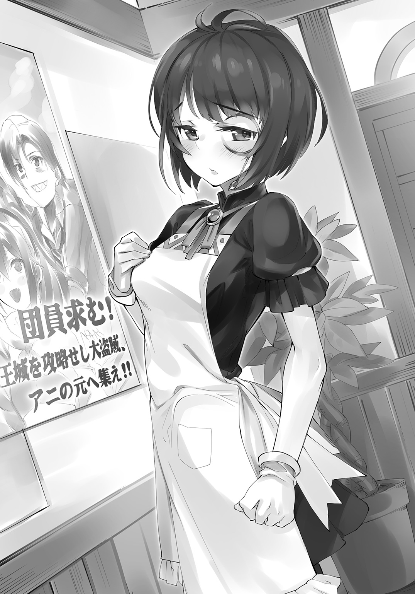
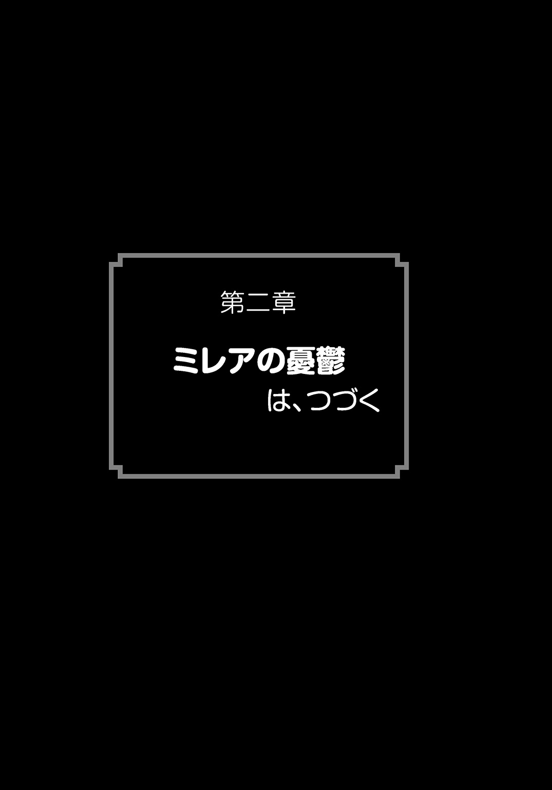
【第三章】異世界での大冒険！
１話友情の値段
カーテンを閉め切ったままの、ろくに光が差し込まないかび臭い部屋に、ノックの音が響く。
ベッドで丸くなっていた私は、のろくさとした動作で顔を上げた。部屋の中は脱ぎ散らかした服や、食事を終えた皿が乱雑に積み重なり、不衛生なことこの上ないが、片付けをする気力すら起きない。
（今は......朝かな？ それとも、もうお昼？）
まぁ、どっちでもいいけど。どうでもいいけど。
そんな投げやりな思考をしていると、再びノックの音が聞こえた。私はドアの方をキッと睨みつけ、叫ぶ。
「あぁもうっ、うるさいわね！ いったい誰よ！ 鈴木!? それともゼント!? どっちにしても私はこっから一歩も出ないから！」
ドアの向こうでヒッと小さな悲鳴が上がった。おやっと不審に思っていると、恐る恐るといった感じに声が発せられる。
「ええと、アニさん。私です。ミレアです」
「えっ、ミレアさん!? ご、ごめんなさい！ 私てっきりあのバカどもだと思って！」
私はベッドから跳ね起きた。部屋に引き籠もるようになってから何日が経過したのかもはやわからなくなっているが、ミレアさんはその間ずっと、私のことを気にかけてくれ、こうして様子を見に来てくれる。何もかもが信じられなくなった私だが、ミレアさんだけは心許せる人物なのだ。
（今日も何か持ってきてくれたのかな？ ミレアさん、料理上手だからなぁ）
ウキウキしながら部屋のドアを開けた、次の瞬間――。
「今だぁ！ 取り押さえろぉ！」
聞き覚えのある声で号令がかかり、完全武装した男たちが部屋になだれこんできた。
「えっ!? なっ!?」
私は咄嗟に身構えるが、引き籠もりの装備品といえば、薄汚れた部屋着のみ。完全に油断していたこともあり、ろくな抵抗もできぬまま床に組み伏せられてしまった。
「くっくっくっ。地べたに這い蹲るのがお似合いだな、アニよ」
頭上から降ってきた下衆な台詞に顔を上げれば、そこには案の定、私のことを昂然と見下ろす鈴木の姿があった。
鈴木はドアの方を振り返り、ぐっと親指を立てて言う。
「みーちゃん、協力ありがとう！ おかげであっさり捕獲できたよ！」
嫌な予感に苛まれて鈴木の視線を辿ってみた私は、そこに唯一の味方だと思っていたミレアさんの姿を見て取り、愕然となる。
「そんな......ミレアさん......」
ミレアさんは私の絶望を悟ったのか、すぐさま部屋に飛び込んできて告げる。
「違うんですよアニさん！ 実はですね、あるお方がアニさんに面談を求めてまして、そのためにどうしても出てきてもらう必要があったんです！」
「本当にですか？ 私を裏切ったわけじゃないんですよね......？」
「当たり前じゃないですか！」
ミレアさんが力強く頷いた刹那。鈴木がミレアさんの隣につつつと移動したかと思いきや、彼女の手に何かを握らせてボソリと呟く。
「これ、成功報酬。少ないけど取っといて」
「うわあぁん！ やっぱり裏切られたぁ！」
「ちょっ、違います聞いてません！ 鈴木さん、わたしは成功報酬なんて求めてなかったですよね!? これはお返ししま――って、本当に少ないですね!? １Ｇって何です!?」
「１Ｇで友情売られたぁぁ！ 盗賊の私になんてそんな価値しかないんだぁぁわあぁぁん!!」
「だから誤解ですって！ あぁもうっ、鈴木さん早くアニさんを連れて行ってください！ そうすればわかってもらえると思いますから！」
２話その金髪を毟らせろぉ！
鈴木に連行され辿り着いた場所は、私もかつてアタックしたことのある、『グロドの洞窟』だった。けっこう手強いモンスターが巣食うダンジョンだったはずだが、鈴木率いるアニ盗賊団はここを占拠し、新たなアジトとして利用しているとのことだ。
半信半疑ながらも足を踏み入れてみれば、岩壁のいたるところに夜光石を利用したカンテラが吊るされており、人が生活し易いように内部が煌々と照らされていた。枝分かれした道には案内板が立てられ、食料庫や武器庫、果ては娯楽室までが完備されていることがわかる。どうやらグロドの洞窟を占拠したというのは本当らしい。
（いったいどうやったんだろ？ まあ、どうでもいいか。穴蔵なんて、盗賊のアジトにはお似合いよね。ふっ、ふふ......）
......私が引き籠もる部屋あるかなぁ。
薄暗くて、狭くて、ジメジメしてるといいなぁ。うふっ。ふふふ。
ダンゴムシのような思考回路で洞窟内を物色していると、やがてドーム状の開けた空間に出た。殺伐とした岩肌がここだけは花で飾りつけられており、中央には豪奢な天幕が張られ、『貴賓室』と立て札がしてある。どうやらここは賓客をもてなす場所であるらしい。
鈴木が補足説明するように口を開いた。
「アニの噂を聞きつけて、わざわざ遠方から足を運んできた奴が中にいるんだ。さすがに『いい歳して引き籠もってるから会えない』なんて言えないからな。多少強引な手を使ったというわけだ」
「私の噂？ 盗賊の噂を聞いて会いに来るなんて、どう考えたってろくな奴じゃないでしょ。でもいいわ。会ってやるわよ。その代わり、私にも一部屋寄越しなさい。あと、その辺に生息してるウサマタ捕まえてきて。独り言の相手にするから」
「けっこう病んでるね！ わかったわかった。用意するからまずは中に入れってぇ」
鈴木に促される形でのろのろと天幕に入った私は、そこに待ち受けていた人物を目にして、思わず茫然自失してしまった。
流れるような金髪に、中性的で端正な顔立ち。身にまとう白銀の甲冑は、薄暗い洞窟内にあっても神々しいまでに輝いている。
「アニはもちろん知ってるよな？ 白夜聖騎士団の団長、ルーシュ王子だ。ルーシュ王子、こちらが我らアニ盗賊団の頭領、大盗賊アニだ」
鈴木が互いを紹介するその声なんて、もう耳には入ってなかった。私は愕然となったまま、ヨロヨロと足を踏み出す。口から洩れ出るのは、言葉にならない呻き声。
「あ......あぅぁ......」
私の行動を不審に感じたのだろう。ルーシュ王子の傍に控えている、白い髭をたくわえた老騎士が、剣の柄に手をやり身構えた。
しかしその行為を、ルーシュ王子がすぐさま制する。
「よせ、モーブ。急な訪問に驚いているだけだろう」
「う......あぅぅ......」
「そなたがアニか。アニ盗賊団の活躍は余も聞き及んでいる。互いに魔族と戦う有志。これからいい関係を築けたらと思う」
気品に満ちていながら人好きのする、ニッコリとした笑みが私に向けられ、握手のために手を差し伸べられた。
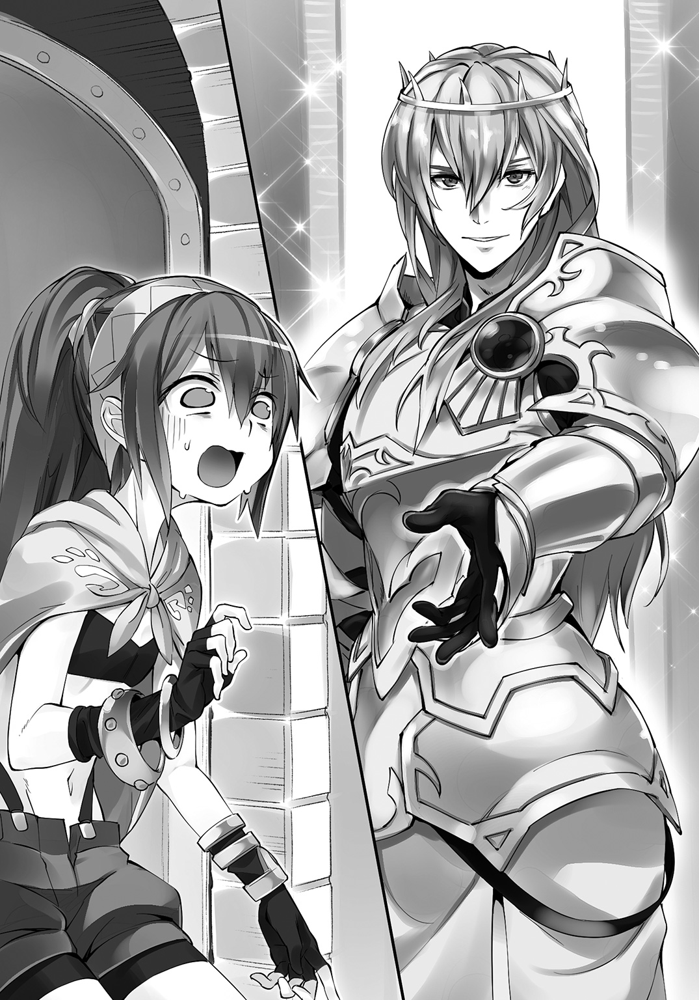
憧れ続けた白夜聖騎士団。
人類の希望たるルーシュ王子。
私は震える手をゆっくりと差し出し、ルーシュ王子と固い握手を交わす――と見せかけて、その腕を捻り上げ、関節をキメた。
「ぐわっ！ な、何を!?」
「それはこっちの台詞よ！ ふざけた格好しちゃって、この金髪もどうせヅラでしょう!?」
「いづづづづ！ ひ、引っ張らないでくれ！ いづづづづ！」
「何よ地毛なの!? 生意気な金髪ね、反吐が出るわ！」
ブチィッ！
「ぐはぁっ！」
私は鈴木をキッと睨み据え、怒鳴りつけた。
「鈴木、いったいどういうつもり!? 返答次第ではタダじゃ済まないわよ!?」
私の苛立ちはひしひしと伝わっているだろうに、鈴木はそ知らぬ体で、私のことをジィーッと見つめてくるのみだ。
私は吐き捨てるように続けた。
「盗賊風情の私に、ルーシュ王子が面談を求めてくるわけないでしょう!? こんなニセモノまで用意して、今度は何を企んでるの!?」
じぃー。
鈴木は様子を見ている。
「答えない気なら、このニセ王子に訊ねるまでよ！ あんたも王子を騙る以上、バレた際の覚悟はできてるんでしょうね!? 鈴木の口車に乗った己の浅はかさを呪うがいいわ！」
「ち、違う！ 余は本物のルーシュだ！」
「へぇ、意外と根性あるじゃない。この金髪がなくなるのが先か、あんたの心が折れるのが先かぁ!!」
ブチブチィッ！
「うぎゃ――――っ!!」
じぃー。
鈴木は様子を見ている。
「あははははは！ ゲスな鈴木はあんたのこと見捨てたわよ！ いい加減にゲロったらどうなの!?」
そう恫喝し、再び金髪を毟り取ろうとした、まさにその時だった。目の前の光景が理解の範疇を超えていたのか、口をあんぐりと開けたまま微動だにしなかった老騎士のモーブが、はっと我に返る。
「こ、この無礼者がぁ！ 叩き切ってくれるわぁ！ せりゃああぁぁぁっ!!」
裂帛の気合いと共に、モーブが剣を横なぎに一閃させた。
「わひぃっ!?」
年寄りの冷や水と揶揄するような余裕はなかった。モーブの斬撃は鋭く、瞬時にしゃがみ込んだ私の頭髪が、幾筋かハラリと宙に舞う。
「そりゃあぁぁ！」
「ひょええぇぇ!?」
大上段からの打ち込みを、これまたギリギリで身をよじってかわした。
私もかつてはＬｖ20を超す騎士だったのだ。剣筋についてはある程度読むことができるし、現在の盗賊の素早さをもってすれば、中堅クラスの冒険者が相手でも、軽くいなすことができるはず。だというのに、祖父ほども歳が離れたモーブの攻撃を、死ぬ気で避けることになるなんて。
疑う余地もない。相手の力量は本物だ。
でもそうなると、話が合わない。ニセ王子に付き従うエセ聖騎士に、これほどの斬撃が繰り出せるはずもない。
そこまで思い至ったところで、恐ろしい仮説が脳裏を過ぎり、ぞわわっと鳥肌が立った。
（も、もしかして本物の――あっ！）
死の恐怖というより、嫌な予感に心身が支配されていたのだろう。不意に足がもつれ、私はその場に尻餅をついてしまった。するとその隙を見逃さず、モーブが苛烈な突きを放ってくる。
（ダメ、避け切れない！）
死を覚悟した、その刹那。横合いから伸びてきた剣尖が、モーブの凶刃を跳ね上げ、私を刺し貫く軌道を強引に捻じ曲げた。剣と剣が嚙み合う、硬質で澄んだ音色が、余韻を残して洞窟内に反響する。
（た、助かった......）
腰が抜けてへたり込んでしまった私は、首をぎこちない動きでギギギと巡らし、命の恩人を見やった。するとそこには、乱れた金髪を手で整えているルーシュ王子の姿がある。
そう。もう間違いない。
彼こそがセラーヌ王国の第一王子にして、白夜聖騎士団の団長、ルーシュ王子その人に違いない。練達の武人であるモーブの一撃を易々と弾いてしまうその力量が、聖騎士の格好をしただけのニセ王子などではなく、先陣を切って魔族との戦いに身を投じる英雄だということを雄弁に物語っている。
（う、ウソでしょう？ それじゃあ、本物のルーシュ王子が私に面談を求めてきたっていうの？ いったい何のために......？）
疑念が膨れ上がるが、それ以上に存在感を示す問題が、私を急激に責め苛んだ。
（わ、私って、けっこうとんでもないことしちゃったんじゃないかしら。王子様との面談だっていうのにタメ口だったし。ずっと引き籠もっていたから多少臭ってるかも......）
いいや。そういう瑣末なことは、単なる現実逃避に過ぎない。
私の記憶が確かならば――
セラーヌ王国の第一王子であらせられ、人類の希望と称されるルーシュ王子の握手を拒否しただけに留まらず、その腕を捻り上げて関節を決め、偽者呼ばわりし、さらにはその錦糸のように美しいお御髪を、反吐が出ると酷評して毟り取り、円形脱毛症のようなハゲを二箇所ほど作り上げるという暴挙を、挨拶すらまともに交わしていない初対面の状況で成し遂げてしまったような気がする。
......あっ、これ死刑だ。
私、全然助かってない！ これ確実に死刑だ!!
蒼ざめる私の目の前で、モーブが憤懣やる方なしといった体で声を荒らげる。
「ルーシュ王子、なぜお止めなさる!? このような不敬な輩、斬って捨てるが世のためじゃ！」
ひぃっ！ ヤだけど反論できない！
「そう言うな。言動から察するに、色々と誤解もあった様子だ。少し面食らいはしたが、余は大事ない。ここは穏便に済ませようではないか」
え、ウソ。
ハゲさせたのに、この下賎な盗賊めをお許しくださるのですか......？
（やっぱり私の目に狂いはなかったわ！ 憧れ続けたルーシュ王子こそ、世界の救世主よ！）
雷に打たれたかのように心が痺れた。この人に忠誠を誓いたいと、全身が歓呼の声を上げていた。
聖騎士という身分に拘る必要なんかない。どんな形であれ、ルーシュ王子のお役に立てればいいんだ。鈴木と会って色々とひどい目に遭ったが、不幸中の幸いと言うべきか、今の私には力がある。アニ盗賊団の頭領という、正道を走っていては決して手にできないであろうアンダーグラウンドの権力がある。
（引き籠もってる場合じゃないわ！ 冷血非道な魔王を相手にする以上、汚れ役だって必要になるはず。アニ盗賊団でルーシュ王子をサポートすればいいのよ！）
我ながら冴えた機転である。モーブはまだ納得していない風だし、すぐさま先ほどの非礼を謝罪し、騎士の慣習に則ってルーシュ王子に忠誠を誓おうと、片膝を突きかけた時だ。
それまで私の言動を見守ることに徹していた鈴木が、不意に進み出て鋭く言い放つ。
「王子に無礼を働くなんて、気でも触れたか!? ゼント、とりあえずアニをふん縛れ！」
「へい！」
天幕の外に待機していたのであろう。威勢のいい返答と共にゼントが現れ、私の身体に荒縄を巻こうとする。
「ちょっ、待ちなさいよ！ 私は今から忠誠を誓うんだから！」
「なるほど。姉御はどうせ縛られるなら、犬のように忠誠を誓いながら縛られたいと、そういうわけか。さすが姉御、性癖まで常軌を逸してるぜ！ サブイボが止まらねぇ!!」
「あんた王子の前でなに言っちゃってくれてんのぉぉぉこいつ殺そおぉぉぉっ!!」
ゼントの手から荒縄を奪い、それを使って首を絞めようとするが、鈴木がすぐさま制止の声を上げた。
「止めろアニ！ お前が斬首されないよう、苦渋の決断だ！ 反抗すれば心証を悪くするぞ！」
「だって、」
「黙って言うこと聞けやぁ！ お前、自分がなにしでかしたかわかってんのかぁ！ セラーヌ王国の第一王子であらせられ、人類の希望と称されるルーシュ王子の握手を拒否しただけに留まらず、その腕を捻り上げて関節を決め、偽者呼ばわりし、さらにはその錦糸のように美しいお御髪を、反吐が出ると酷評して毟り取り、円形脱毛症のようなハゲを二箇所ほど作り上げるという暴挙を、挨拶すらまともに交わしていない初対面の状況で成し遂げてしまったんだろうがぁっ!!」
「ふぐぅっ！」
反論の余地もないとはこのことだ。私はガックリと項垂れると、荒縄をゼントに返し、黙ってぐるぐる巻きに縛られた。
「よしよし。殊勝な心がけだ。ゼント、ギャーギャー騒がれても困るから、猿轡も嚙ませろ」
「待って鈴木！ 私の言い分も――もがっ！」
私は発言すら封じられ、罪人以下の扱いとなってしまった。
（うぅ。自業自得とはいえ、こんなのあんまりよ......）
涙目になっている私には構わず、鈴木は未だ殺気を放っているモーブに話しかけた。
「さてと。さすがに俺たちの頭領であるアニを処刑させるわけにはいかないけれど、死なない程度に水責めや火あぶりで苦しめたいと言うのなら、引き渡してもいいが？」
「もごぉっ!? むぐむぐ――――っ!!」
冗談じゃない。
私は臣下の礼を示し、謝罪と忠誠を訴えようとしたが、首から下を全てぐるぐる巻きにされているため身動きが取れない。それでも必死に身じろぎしていると、ぐらりとバランスを崩し、おでこから地面にダイブしてしまった。
ゴチン！
「ふご――――――っ！」
瞼の裏で火花が舞い、あまりの痛さに地面をゴロゴロと転げ回る。するとその様子を目にしていたモーブから剣呑な空気が徐々に薄れていった。モーブはやがて、何だか哀れむような眼差しで私を見回す。
「うぅむ。部下に縛り上げられた挙句、地べたを這いずり回る姿を見ておると、何だか不憫に思えてきたのぅ。ルーシュ王子がお許しになるというのなら不問に付すが......」
モーブがちらりとルーシュ王子を見やった。
ルーシュ王子は苦笑を零しつつ言う。
「余は最初から穏便にと言っているだろう。じいやは相変わらず、頭に血が上ると話を聞かなくなるな」
「じいやは止めてくだされ。今は王子の教育係ではなく、白夜聖騎士団の副長なのですぞ」
「ははは、そうであった。話を聞かないのはお互い様かな」
二人のそんなやりとりに、私はホッと安堵の溜め息をつく。
（よ、よかったぁ。助かったぁ）
沙汰止みとなったのなら、縄も必要ないだろう。私は鈴木に視線を送ると、目顔で縄を解くよう訴えた。
「..................」
じぃー。
鈴木は様子を見ている。
「もごっ!? もごご！」
鈴木は私の要求を恐らく理解している。交わされた眼差しで私はそれを察した。けれど――。
......ニヤリ。
鈴木は不穏な笑みを返して寄越すと、私のことなどもはや眼中にないといった体で、ルーシュ王子たちに向き直る。
「どうやら話はついたようだな。アニに代わって礼を言った方がいいか？」
「なに、その必要はないさ。急に押しかけた余にも少なからず非はある」
「まあそうだね！ アニに会わせる前に、きちんと忠告もしたしね！」
鈴木は頭を下げるつもりなど毛頭なかったらしく、開き直ったように告げる。
モーブはムッとした表情を浮かべたが、度量の広いルーシュ王子は微苦笑を零したのち、なぜだか私の方を見やって言った。
「アニ殿の様子を見るに、確かに精神的に不安定な部分があるようだ。鈴木殿が提案した通りに事を進めた方がよさそうだが、じいやはどう思う？」
「まずは天下の大盗賊とやらの人となりを見極めてからと思っておりましたが、想像以上に情緒の安定を欠いておりますな。致し方ありますまい」
会話の内容がいったい何を示しているのか判然とせず、私は眉をひそめた。
（いったい何の話をしているの？ 私が引き籠もってたことを事前に伝えてたということかしら？ でも、忠告って......？）
私が抱いたそんな疑念はすぐさま晴れることとなった。ルーシュ王子が確認の意味も兼ね、こう続けたのだ。
「鈴木殿の言い分はこうだったな。アニ殿は比類なき大盗賊ではあるものの、精神的には未熟な部分があり、今は頭領の重責に耐えかねて狂戦士化している。そのためアニ盗賊団の実務は副頭領である鈴木殿が一任されているので、交渉事は全て鈴木殿を通して行ってくれと」
「ああ。正にその通りだ。俺は交渉のプロ、ネゴシエーターだしな。俺の言動はそのまま、アニ盗賊団の総意と考えてもらおう」
悪魔的な笑みを刷く鈴木を、私は目を剝いてまじまじと見つめる。
（なっ......じ、冗談じゃないわ！ アニ盗賊団はルーシュ王子の手足となって働くの！ 鈴木の私兵に成り下がったが最後、どんな悪辣非道の徒になるかわかったもんじゃない！ 鈴木の好きにさせてなるものですかぁ!!）
私は即座に異を唱えようとしたが、全身を縛られ、猿轡を嚙まされていることに思い至った。
「むぐっ!? ふぐぐっ！」
私が毛虫のように地面をのたうっていると、鈴木がくるりとこちらに向き直る。その口から紡がれるのは、思わず背筋がゾクゾクっと粟立つような、慈愛に満ちた優しい声。
「どうしたんだ、アニ？ ......ああ、そうか。引き籠もりなのに知らない人と話をしたから疲れたんだな。大丈夫。会談が終わればすぐ部屋に戻れるから、アニは安心してそこに転がっていろ」
そう言いながら、鈴木は人差し指を立てた。身体で隠す形になっているので、ルーシュ王子たちには決して見えないであろうその指を、チ・チ・チとばかりに左右に振る。
その瞬間、私は全てを悟った。
（......は、謀られた！）
全ては鈴木の思い描いた通りなのだろう。
私を部屋から連れ去る際、ミレアさんに協力させたのは、私には味方なんて一人もいないんだと思い込ませ、追い詰めるためだったに違いない。誰が面談相手なのかミレアさんの口からも語られなかったのはきっと、私がルーシュ王子に憧れていることを利用し、サプライズにしたいとでも言ったのだろう。ルーシュ王子に会いさえすれば、私が元気を取り戻し、引き籠もりから脱するかもとかなんとか告げて。
だが実際は、ミレアさんの加担により、私は疑心暗鬼の塊と化した。そんな状況で王子と引き合わされたら、ニセモノだと断じて無礼を働くだろうと、鈴木はそこまで読んでいたのだ。
案の定、私は王子をハゲさせた。
そしてそれを理由に私の言動を封じた鈴木は、ちゃっかりとアニ盗賊団の全権を握る者として、ルーシュ王子との交渉の場に臨むこととなったのだ。
（そんな!? ダメですルーシュ王子！ こんなゲスと交渉を行えばどんな末路が待っているかわかりません！）
私が何とかしないと！
私がルーシュ王子を救うんだ!!
「ぐぐぐ、ふごぉ――――っ！」
私は縛られた両足を頭上に突き立てると、次いで勢いよく振り下ろし、反動でピーンと起立してみせた。それは傍から見れば、ミイラ女が棺から跳ね起きるような異様な行動。鈴木はおろか、ルーシュ王子やモーブまでもが、ビクゥッと身体を震わせる。
「むごぐぅっ！ ふんーっ！ ふんーっ！」
私は血走った目でルーシュ王子を見据えると、猿轡をかまされた口から涎を垂らしながらも、必死に訴えかける。
「ふごふ！ ぶふぅ！ ぶふぅ!!」
ルーシュ王子、騙されないでください！
私はあなたに忠誠を誓う者です！
ここにいる鈴木は単なるクズなんです！ ゲスそのものです!!
「な、何だろうか。余に何か訴えかけている様子だが......？」
ルーシュ王子が及び腰になりながらもそう呟いた。私はここぞとばかりに、首を何度も縦に振る。
「やはりそうか。鈴木殿、狂戦士化しているとはいえ、せめて猿轡は外して構わないのではないだろうか？」
「はぁ？ なに言ってんの？ 初対面で王子の髪を毟り取るような相手だよ？」
「ではどうやって彼女の意思を確認するのだ？」
「心配するなってぇ。俺はアニとは共に魔王城に忍び込んだ、言わば運命共同体だぞ？ アニが何を言わんとしているかぐらい、以心伝心でわかるって。どれ、アニが何を伝えようとしてるか確かめてやろう」
「ぐががっ！ むぐぐ――――っ！」
止めてよあっち行って！ あんた出てくるとろくなことになんないのよ！
「ええと、なになに。......『もっとだぁ！ もっとその金髪を毟らせろぉ！ ゲェッゲェッゲェッ！』」
「えっ............」
ルーシュ王子がドン引きして後ずさった。モーブがそんな王子を庇うように立ち塞がり、いつでも抜剣できるように柄に手をやりながら吐き捨てる。
「何という奴じゃ！ これではモンスターと変わらんわい！」
「ふがぅのひぃ――――――っ!!」
いったいどうすれば真意が伝わるのだろうか。
そんな私の懊悩などどこ吹く風で、鈴木がさっさと話を進めていく。
「さてと。情緒不安定なアニのことはいったん置いといて、本題に入ろうじゃないか。だいたい察しはついているが、アニに面談を求めたそちらの意図を教えてもらおう」
鈴木のその発言を受け、ルーシュ王子が一つ大きく頷いた。ルーシュ王子はそれまでの、穏やかでいて気品に満ちた面差しを引っ込め、凛々しくも真剣な眼差しで言う。
「では単刀直入に。アニ殿は魔王城に易々と忍び込んだ大盗賊だと聞いた。ギルガランを打倒し、アースノウに平和をもたらすために、我ら白夜聖騎士団に魔王城への侵入経路を教えていただきたい」
「むぐっ!?」
私は驚きに目を瞠ると同時に、ようやく得心がいった。盗賊風情になぜルーシュ王子が面談を求めたのか不思議だったが、そういうことならば理解できる。
鈴木が腕を組み、したり顔で頷いた。
「そんなことだろうと思ったよ。どうする、アニ？ こいつらに教えてやるか？」
「ふぐぐ。もごもご、むぐおぉ......」
教えるも何も。あの時はあんたの『オレオレ交渉術』がうまくいっただけで、こっそり忍び込める侵入ルートなんてないし......。
そんなことを視線を交わして訴えると、鈴木は心得たとばかりに頷き、ルーシュ王子へと伝える。
「アニはこう言っている。『いくら払う？』」
私が反発するより先に、モーブが怒声にも似た大声を上げた。
「何じゃと!? この卑しい盗賊めがぁ！ 人類の命運がかかっておるというのに、金を取るというのか!?」
「あぁん？ こちとら命がけで侵入しとるんじゃあ！ それなのに情報だけタダで手に入れようなんて、盗っ人猛々しいのはお前らだろうがぁ！」
「貴様よくも！ 我が剣の錆にしてくれようか!?」
「待ってね！ そう言ってるのはアニだからね！ 俺は以心伝心で通訳してるだけだからね！」
「ふぅぐぅぎぃ～っ！」
モーブは私に鋭い殺気を浴びせ、私は鈴木を射殺さんばかりに見据え、鈴木はビビッているのか、部下で無害なゼントを睨みつける。
――あんたまだいたの!?
そんな、よくわからない一触即発の空気を破ったのは、ルーシュ王子の穏やかな声だった。
「アニ殿の言い分はもっともだ。情報にはそれ相応の対価をお支払いしよう」
「ルーシュ王子!?」
「まあそういきり立つな。被害を出さずに魔王城に攻め込めることを考えれば、いくら払っても安いものだ。それで、情報料はいくらだろうか？」
鈴木は値段を決めていたらしく、間髪入れずに指を一本立ててみせた。
モーブが忌々しげに鼻筋に皺を刻み、吐き捨てるように訊ねる。
「えぇい、それではわからんわ！ 百万Ｇか!? それとも、一千万か!?」
「一つだ」
「一つ？」
「ルーシュ王子はセラーヌ王国の第一王子なのだろう？ ならば、国一つ。セラーヌ王国を貰い受けよう」
「んなっ......!?」
モーブが絶句した。私もあまりのことに呻き声一つ出せない。
俗物と交わらない王族ゆえだろうか。ルーシュ王子は冗談だと思ったらしく、朗らかに笑う。
「ははっ、国一つか。それはなかなか豪気だ」
「心配するな。魔族じゃあるまいし、手に入れた途端に国民に重税を課して、骨の髄までしゃぶりつくそうなんてことは考えていない。反乱なんか起こされたら面倒だしな」
「ははは。それは安心だな」
「これまで通りの安泰な統治を心がけよう。有能な臣下もそのままの要職で登用する。国から追放するのは王族と、それに近しい貴族だけだ」
「ははは。はは......は――えっ、それ本気なのか？」
ルーシュ王子がここにきて初めて、慌てたような表情を見せた。
鈴木はクワッと目に力を込め、唾を飛ばしながら言う。
「当たり前じゃあ！ 俺たちのボスを誰だと心得る!? 恐れ多くも天下の大盗賊、アニ様だぞ！ そこに盗めるものがある限り、金髪だろうが王国だろうが、問答無用で掠め取るに決まっとるだろうがぁ!!」
「そ、そんな！ 待ってくれアニ殿！ 確かに魔王城への侵入ルートは喉から手が出るほど欲しい価値ある情報だ！ しかし、国を寄越せというのはあまりにも......」
「おやおやぁ？ 王子の側近であるそこの老騎士は確か、『人類の命運がかかっているのに、金を取るのか』とか何とか言ってませんでしたかねぇ？ それとも、人類云々は単なる方便で、売名行為のために魔王を討つおつもりですかねぇ？」
「な、何を言う！ 平和な世界を実現するために、余は身命を賭すと女神アナスレイに誓ったのだ！ 決して売名行為では、」
その刹那。ルーシュ王子の台詞を遮る形で、鈴木が嬉々とした様子で喚いた。
「いま言ったな!? 平和のために身命を賭すって言ったな!? それって命を賭けるってことだな!?」
「えっ？ そ、そうだが......？」
「聖騎士に二言はないな!? やっぱり命は惜しいとか、後で言ったりしないな!?」
「と、当然だ。余は誇り高きセラーヌ王国の――」
「くっくっくっ。お家自慢なんざどうでもいい。平和のために命を賭けるといったその言葉、ゆめゆめ忘れるなよ......？」
鈴木の邪悪な笑みと不穏な言葉に、さすがに気後れするものがあったらしい。ルーシュ王子とモーブが、不安げに視線を交わす。
私はごくりと唾を飲み込み、鈴木に問いかけた。
「ふぐぎ。はんぐぐっがいががご......？」
鈴木。あんたいったい何を......？
「えっ、なになに？ 『契約は成った。会談はこれで終了だ』だって？ まぁそうだね！ こっちも何かと忙しいしね！」
早々に会談を切り上げようとする鈴木に、モーブが泡を食って訊ねる。
「ま、待て！ 魔王城の侵入ルートはどうなる!? 国を明け渡さぬ限りは教えぬとでも言うのか!?」
「あーそれか。安心しろ。命がけで平和を勝ち取るという王子の高尚な志を聞いて、ほら、あれだ。ココロヲウタレタ......？ から、ぐっと値下げしてやる。十万Ｇでどうだ？ それぐらいなら即金で払えるだろう？」
「十万？ その額なら確かに手持ちがあるが......」
国一つという情報料が一気に大暴落し、モーブは安堵というより不審げに眉をひそめつつ、冒険者の必需品である金貨袋を取り出した。『盗賊の袋』と同様に簡単な魔法がかかっているそれは、金貨ならば何Ｇでも入れることができる代物だ。中には鈴木の言い値である十万Ｇが収められているのだろう。
鈴木が飛びつくように金貨袋を奪い、喜色を浮かべる。
「ひゃっほい！ さすが白夜聖騎士団、金払いがよくて助かるぜぇ！」
「それで、侵入ルートは？ 隠し通路でも見つけたのか？」
「そう急かすなってぇ。魔王城に侵入するには少しばかり準備が必要なんだ。整い次第連絡するから、それまで待ってろ」
「なにぃ？ 話が違うではないか！」
「誰も今日この場で教えるなんざ言ってないだろうがぁ！ こっちは情報料を国一つから十万Ｇまで値下げしてやったんじゃあ！ 黙って連絡待てやぁ!! ――ってアニが言ってるからね!? 剣に手をやって凄むならアニにしてね！」
「むごごっ、ふごーっ！」
私が関与できない状況で、何だか怪しげな口約束が交わされるに至ってしまった。鈴木のゲスさを知る私は、ルーシュ王子に思い留まるよう、必死に目顔で訴える。
しかしルーシュ王子は思案顔を見せたのち、納得するように告げた。
「承知した。後はアニ殿からの連絡を待つとしよう」
「ルーシュ王子、本気ですか!? 盗賊との口約束が守られるとお思いか!?」
「なに、相手はそこらの野盗ではなく、今やアースノウ全土に名を轟かせつつある大盗賊だ。約束を違えることはないだろう」
ルーシュ王子のその言葉に、鈴木が一つ大きく頷く。
「もちろんだ。今回は互いの利益になるいい交渉ができた。何かあればまたよろしく頼む」
「ああ。魔族と戦う者同士、これからも良好な関係を築きたいものだ」
人間のクズと人類の希望が固い握手を交わし、会談は幕を下ろしたのだった――。
３話オ・モ・テ・ナ・シ
ここはいったいどこだろう？
これらはいったい何だろう？
私はポカンと口を開けたまま、辺りの様子を見渡した。
周りを取り囲むのは、どれも立派な城の如き、巨大な石造りの建物。広い街道を飛ぶように駆けるのは、いったいどういった魔法の作用か、馬が引かない光沢のある馬車の群れ。大きな祭りでも開催されているのか、行き交う人々は息苦しくなるほど大勢だ。その上、誰を見ても驚くほど軽装で、初めて会った時の鈴木の服装を思い起こさせる。モンスターの侵入を阻む壁に守られている風でもないが、なぜこうも安穏としていられるのか不思議だ。
（というか本当に、ここどこ？ けっこう色々なところを旅してるけど、こんなとこ見たことも聞いたこともないんだけど......）
私、夢でも見てるのかな？
そんな疑念を抱いた私は、自分の頰を思いっきり抓ってみた。すると予想と違って鋭い痛みが走り、思わず涙が滲む。
（痛っ！ ウソ、これ夢じゃない......!?）
これが現実の風景だというのならば、ここは本当にどこなのだろう？
私は曖昧な記憶を必死に手繰り、この場所に来るに至った経緯を思い返していく。
（ええと。グロドの洞窟でルーシュ王子との会談を終えたあと、自力で縄を解いたのよね）
自由を取り戻した私は、洞窟のどこかにいるであろう鈴木の姿をすぐさま捜し求めた。目的は単純明快だ。鈴木を見つけ出し、半殺しにし、薬草で回復させ、再び半殺しにし、薬草で回復させ、さらに半殺しにしたところで、私に対する謝罪と、いったい何を企んでいるのかをゲロさせるためである。
モンスターよろしく洞窟内を徘徊した私は、やがて他の穴蔵とは明らかに違う、絢爛豪華な内装が施された部屋に辿り着いた。そこでのんびりとくつろいでいる鈴木を認めると、すぐさま躍りかかろうとしたのだが、私の姿に気づいた鈴木が機先を制するようにこう言ったのだ。
「思っていたより遅かったな。アニの目的は見当がつくが、俺も黙ってやられるつもりはない。表に出ろ。正々堂々と決闘でケリをつけようじゃないか」
「へぇ。男らしいところもあるじゃない。いいわ。その決闘、受けて立ちましょう」
洞窟を出て対峙すると、鈴木は腰に提げていた『盗賊の袋』から、自分の得物を取り出した。それを目にした私は、思わず息を呑む。
「それは......『アルデ・ソルの槍』!?」
それは鈴木と共に魔王城に忍び込んだ際、宝物庫で手に入れた激レア宝具の一つだ。時空すら斬り裂くことができるとされる、凄絶無比な破壊力を誇る魔槍である。
思いがけない武装に面食らいはしたものの、私はすぐさま気を取り直した。宝物庫で盗賊スキルを使って鑑定したところ、非力な鈴木が使いこなせる代物ではないと、はっきり結果が出ていたではないか。
私はフフンと鼻を鳴らして言った。
「驚かせないでよ。忘れたの？ あんたにとってそれは、ろくに扱えない無用の長物なわけ。プププ。よく見たらそれ、穂先を『ピアラの羽根』で飾ったりしてるじゃない。どっかの戦闘部族の真似？ いるのよねぇ、扱えもしないのに、格好だけつけたがる奴」
「ふん。やけに饒舌じゃないか。この魔槍を目にして怖気づいたか？ 今すぐ謝れば許してやらんでもないが、どうする？」
「......へぇ。言ってくれるじゃない。いいわ。お望み通り、さっさとボコボコにしてやるわよ」
鈴木が相手ならば素手で充分。私は腰を沈めて身構えるが、それを見た鈴木が、手を突き出して制した。
「待て。そう焦るな。俺のいた世界では、武道は礼に始まり礼に終わる。アースノウもそうだとは思わないが、互いに敬意を払い、まずは握手しようじゃないか」
「またよからぬことを企んでるんじゃないでしょうね？ 言っとくけど、私がルーシュ王子にやったみたいに、関節キメようとしても無駄よ？ この状況じゃ油断なんてしないから」
「お前と一緒にするな。正々堂々と雌雄を決しようと誓い合うための握手だ。他意はない」
「それならまあ、問題ないわ。一方的な展開になるでしょうけど、頑張って抵抗しなさい」
そうして、鈴木と握手を交わした刹那――。
「『ピアラの羽根』使用！ 行き先、日本の秋葉原！」
どひゅーん。
魔槍に飾りつけられているピアラの羽根が発動し、鈴木と手を握る私ごと、空へと舞い上げる。
「んなっ!? ちょっと鈴木、今から決闘するんじゃなかったの!? だいたい日本の秋葉原ってどこよ!? ほら、ピアラの羽根も発動したはいいけど、どこ向かえばいいかわかんないから旋回モードに入って――」
ブウゥゥゥゥゥン。
「えっ!? 何か魔槍から音が聞こえるんですけど!? 魔力の光を帯びて淡く輝き始めたんですけど!?」
ピシッ、ピシピシッ......パリイィィィィンッ！
「空が割れたぁぁぁ！ 時空をも切り裂く魔槍がその真価を発揮して、空に変な裂け目を生んじゃったあぁぁっ！」
ぴょーん。
「あぁっ！ 旋回モードだったピアラの羽根が喜び勇んで時空の穴に飛び込んじゃった！ えっ、どういうこと!? 鈴木、もしかして日本って、あんたが住んでた世界!? こんなふざけた魔槍の使い方で異世界に行けるの!?」
「ひぃー。ナンマンダブ、ナンマンダブ、ナンマンダブ......っ！」
「何か呪文みたいなの唱えてる！ これきっとぶっつけ本番だ！ あんた何してんのよ!? こんな自殺行為に私を巻き込まないでよ！」
「バカ言うな！ 誰かを道連れにでもしない限り、こんなん怖くてできるわけないじゃん！」
「こんの人でなしが――――――っ!!」
「いいからお前も祈れって！ ナンマンダブ、ナンマンダブ、ナンマンダブぅぅぅっ！」
............そうだった。全部思い出した。
これ全部鈴木のせいだ！ たぶんここ異世界だ！
「周りの景色に気を取られて忘れてたわ！ あいつ、いったいどこ行ったのよ!?」
辺りに視線を走らせてみると、すぐ傍にある建物から鈴木が出てくるのが見えた。鈴木は手に紙の束を持っており、それを数えながら、ニマニマとした嫌らしい笑みを浮かべている。
「ひぃ、ふぅ、みぃ......くっくっくっ。笑いが止まらんなぁ。異世界さまさまだぜぇ」
私はすぐさま鈴木のもとに駆け寄り、金切り声を上げた。
「ちょっと鈴木、これいったいどういうことよ!? ここってあんたがいた世界よね!? アースノウでは今も魔族が暴れ回ってるっていうのに、なに帰ってきてんの!?」
「何だ、アニか。田舎もん丸出しでボケーっとしてたくせに、今さら説教するな」
「なっ......し、仕方ないでしょ！ 異世界なんか来たことないんだから！ それより、死にたくなかったら私をさっさとアースノウに帰しなさいよ！」
「やけに強気じゃないか。いいのか？ 感情のままに俺を殺せば、右も左もわからない異世界で、路頭に迷うことになるぞ？」
「くっ!? 相変わらずゲスいわね......」
とはいえ、鈴木の言うことはもっともだ。生まれ育ったアースノウでさえ、新天地で冒険をする際には、ギルドを頼って事前に情報を得なければ、すぐさま命を落としてしまう。どんな危険が待つかわからないこの異世界で、案内役とも言うべき鈴木を失うのは得策ではない。
「しょうがないわね。アースノウに戻るまでは休戦といきましょう。というか、モンスターに怖気づいて、もう戻る気はないなんて言わないでよ？」
「はぁ？ んなわけないじゃん！ アースノウは俺の金ヅルだからね！」
鈴木はそんな不遜なことを言いつつ、手にしている紙の束でぱたぱたと自分を扇ぐ。
私は不審に思い、眉をひそめて訊いた。
「さっきから気になってたんだけど、あんたが持ってるそれ何よ？ どれもオッサンの顔が描いてあるけど、肖像画の類？ あっ、よく見たら１００００っていう数字も書かれてるわね」
「この世界のことを何も知らないお前に教授してやろう。これは一万円札というものだ。ちなみに、アースノウから持ってきたこいつを、そこの質屋で交換して得たものだ」
そう言って鈴木が懐から取り出したのは、私たちが日常的に使っているお金、１Ｇだった。私は呆れ返り、溜め息交じりに言う。
「はぁ？ あんた１Ｇをそんな紙切れに交換したの？ たとえ１Ｇでもお金はお金。１Ｇを笑うものは１Ｇに泣くっていう諺、知らないわけ？」
「くっくっくっ。そうだな。確かに笑いが止まらなくて涙が出そうだ。１Ｇは約３ｇの金貨で、現在の金の相場は１ｇで五千円程度。とりあえず10Ｇ金貨を交換したから、十五万円に化けた計算だ。そして俺の手元には、白夜聖騎士団から巻き上げた十万Ｇがある......」
鈴木が肩を小刻みに震わせる。どうやら笑いを嚙み殺している風だが、やがてもう堪え切れないとばかりに破顔し、両拳を天に突き上げた。その口から溢れ出るのは歓喜の声。
「ひゃっほう！ 召喚された異世界でチート能力使って悦に入るのは、山田のような頭の緩いガキだけで充分だぜぇ！ 異世界に渡ってまず目をつけるべきは為替レート！ 黄金の国ジパングと独占的に貿易していたオランダよろしく、この俺が甘い汁を吸い尽くしてやる!!」
「え？ カワセレートって何？ もしかしてそれ、この世界のお金......なわけないわよねぇ。金貨や銀貨ならまだしも、単なる紙だもの。そんなものがお金になるわけないわ」
うーん。鈴木は何でこんなにもご満悦なのだろう？
小首を傾げる私に対し、鈴木は満面の笑みで告げる。
「お子ちゃまにはわかんない話だから、悩んだところで無駄だってぇ。ところでアニ、腹減ってないか？」
「え？ そりゃまあ、減ってはいるけど......」
「仕方ない。この俺様が貧相なアニに奢ってやろう。田舎くさい異世界の料理とは違って、日本の食い物は絶品だぞ？」
「いちいち癪に障る言い方するわね。というか、鈴木がご飯奢ってくれるなんて、いったいどういう風の吹き回しよ？ また何か企んでるんじゃないでしょうね？」
「そんなんじゃないってぇ。アニには何かと世話になってるからな。おもてなしの心だよ。オ・モ・テ・ナ・シ」
鈴木はそう、一音一音を区切るように言うと、両手を合わせて深々と頭を下げるのだった。
４話スシヨーなのよー！
何だろう、この奇妙な空間は？
テーブルがいくつか並び、そこで談笑しながら何かを口に運んでいる人たちがいるのを見るに、ここが飲食店だというのは推測できる。しかし、とある異様な光景が、脳内で消化されずに疑問符を生んでいた。
愛想のいい店員さんにテーブル席へと案内された私は、椅子に腰かけるや否や、向かいに座る鈴木に問いを放つ。
「えっと......どうしてお皿が流れてるの？」
「ふっ。俺がこれから奢ってやるのはな、超高級店『スシヨー』のお寿司だ。アニには逆立ちしたって支払えないとこだから、一生恩に着るがいい。ちなみに、寿司は流れてるんじゃない。回ってるんだ」
「いや、どう見たって回ってるというより流れてるでしょ、これ。表に回転寿司って書いてあったけど、回流寿司とでも呼ぶべきなんじゃないの？ 表現は正しく使わなきゃ」
「......何かムカツクね！ 文句言うなら奢ってやんないよ！」
うっ。それは困る。
お腹はかなり減ってるし、何より異世界の食事というものに興味がある。こんな些細なことで鈴木の機嫌を損ね、食いっぱぐれる事態になるのは避けたい。
「わ、わかったわよ。流れてるんじゃなくて、回ってるお寿司ね。それで、そもそも何で回ってるの？」
「色々なネタがずっと回ってるから、お客さんは席に着いてすぐ、好きなネタを取って食べられるだろ？ そのおかげで客の回転率も上がるから、店にとっても利益になるんだよ」
「へぇ。ちゃんとした理由があるのね」
私はカウンターにある、皿を載せて動く台をじっくりと観察した。当然何らかの魔法が使われているのだろうと考えていたが、魔力を帯びた物体が発する、特徴的な淡い光などは見て取れない。
（え？ 魔法じゃない？ だとしたらどうやって......）
小首を傾げていた私は、動く台のカラクリに思い至り、ゴクリと唾を飲み込んだ。嫌悪と歯痒さが入り混じった呟きが、自然と口から零れ落ちる。
「そうか。動力は奴隷というわけね？」
「は？ ドレイ？」
「誤魔化さないで。私の目は節穴じゃない。地下で働く幾人もの奴隷が、大きな歯車を回して台を動かしているんでしょう？ アースノウでも奴隷を扱う国はあるけれど、食事の利便性のためだけにここまでするなんて。この異世界、日本と言ったわね。なかなかヤバそうなとこじゃない......」
私は余所者だし、迂闊な発言は自分の首を絞めることになるかもしれない。そういった緊張を孕みながら述べた言葉に対し、鈴木は最初きょとんとした表情を見せていたが、すぐさま口の端をニヤリと吊り上げた。
「さすがアニ。よく見破ったな。奴隷をたくさん使っているぶん、一皿の値段もバカ高い。こんなところで食事できるんだ。俺にものすごく感謝することだな」
「恩着せがましい奴ね。まあ、高級店だってのは間違いないでしょう。それなりに感謝するわよ。それなりにね」
私は今度は、皿に載っている食べ物に注目してみた。どうやら二層になっているのが基本形の料理であるらしい。下層を構成するのは蚕の繭のように小さく握られたライス。そして上層に、様々な種類の切り身が載っているのだが、その正体を知った私は眉間に皺を寄せる。
「これってもしかして、生魚の切り身じゃない？」
「そうだけど、ネタって呼べよな。んで下のお米がシャリな」
「呼び方なんてどうでもいいわよ！ 生の魚を食べるの!?」
こちらの世界ではどうなのか知らないが、アースノウでは魚は火を通して食べるのが普通だ。あんな生臭いものをそのまま口に入れるなんて信じられない。高級どころか、手抜き料理に近いとさえ感じる。
「何だよ。日本のソウルフードをゲテモノ扱いする気か？」
「だって、生の魚よ？ お腹壊すかもしれないし......」
「そんなに嫌なら食べなきゃいいよ！ せっかく奢ってやるって言ってんのに！」
鈴木はプンスカ怒りつつ、寿司につけて食べるらしい、黒っぽい液体を小皿に垂らす。
（うわ。ソースまで何か毒々しい。......あぁでも、地域の料理を頭ごなしに否定しちゃったのはマズったわね）
各地を転戦していれば、料理と呼ぶのも憚られるような、地方独特の味覚に出会うことはままある。本来なら遠慮したいそういった料理も、多少無理をしてでも笑顔で食せば、地域の人々に受け入れられるというのは経験則で悟っている。
（私も冒険者の端くれ。生魚くらいで怯んでいられないわ！）
そう腹を括った私は、鈴木の手から黒いソースの入った瓶を奪い取り、小皿へと垂らした。それを見た鈴木が、見直したぞとばかりに告げる。
「ほう。トライしてみる気になったか。ちなみにそれは『醬油』というんだ。覚えておくがいい」
「ショウユね。わかったわ。それで、次はどうすればいいの？」
「回ってる寿司から好きなのを取って、醬油につけて食べるんだ。醬油はシャリじゃなくネタの方につけるんだぞ？ どれ、一つやって見せてやろう」
鈴木はそう言うと、言葉通りに寿司に手を伸ばす。同じネタの皿がいくつか続いて回っているが、その先頭に『タイ』と書かれた札があるので、どうやら鈴木が取ったのはタイという寿司ネタらしい。
「いいか？ こうやってだな――」
「ち、ちょっと待って。手に持ってるその二本の棒切れは何？」
「ん？ これは箸だ。日本人はこれで料理を食べるんだ。こうやれば......ほらな。寿司もつまめるだろ」
「わっ、器用なことするわね。それ地味に凄くない？」
私が素直に感心していると、鈴木は鼻の穴を膨らませ、まんざらでもない表情で言う。
「こんなの大したことないってぇ。物心ついた頃には自然と使えるようになってたしね！」
「へぇ、驚いた。どうやって持ってるのかよく見せて――って、わざと手をプラプラさせないでよ！ いつまでたっても寿司を食べられないでしょ！」
「仕方ないなぁ。ほら、こうだよ、こう。やってみな」
「こ、こう？ うわ、何かすっごい力がいるんだけど。指つりそう」
「それ持ち方がおかしいんだよ。中指は添える感じで......だから違うって！ あぁもう、手ぇ貸せ！ この指はこうで、ここはこう！」
鈴木が焦れたように、私の手を取ってレクチャーし始めた時だ。通路を挟んで隣り合うテーブル席から、くすくすという忍び笑いが洩れ聞こえてきた。私がふとそちらを見やると、上品そうなおばあちゃんが、私と鈴木をにこやかな微笑で眺めている。
私と視線が合うと、おばあちゃんが申し訳なさそうに言った。
「ごめんなさいね。とても賑やかだったから、ついこちらも楽しくなっちゃって。日本語お上手だけれど、外国の方よね？」
「ええと......まあ、はい。そんなとこです」
さすがに異世界から来たとは言えず、曖昧に返事をした私は、同時にふと気づく。日本の風景に心奪われていたせいで気にも留めてなかったが、私の容姿や服装は、どうやらかなり人目を引くらしい。他のテーブルにいるお客さんも、ちらちらとこちらを窺っている風だ。
（うわ、恥ずかしい。私、変なこと言ってなかったわよね？）
そんなことを考えていると、旦那さんだろうか。おばあちゃんの向かいに座っているおじいちゃんが、うんうんと頷きながら口を開いた。
「寿司は初めてかい？ 外人さんには馴染みが薄いかもしれんが、うまいからたんと食べるといい。それにしても、恋人と仲睦まじくていいねぇ」
「へっ!? いや、私たちはそんなんじゃないです！」
「そんなにしっかりと手を握り合ってるのに、今さら照れなくてもいいじゃないか。いや、外人さんは積極的だねぇ」
そう言われてはたと気づいた。箸の持ち方を教わるためとはいえ、鈴木と指を絡ませるように、しっかりと手を取り合っている。
カァッと顔が赤くなった。私は慌てて手を離す。
「こ、これは箸の使い方を習ってただけです！ そうよね、鈴木!?」
「うん？ それは――」
チラリ。
「照れ隠しするなよ！ アニは俺にベタ惚れだから、すぐにスキンシップ取りたがるんだよね！ 困ったもんだよ！」
「人目があるからってモテてるフリしないでよ！ あんた本当に中身の伴わないクズね!?」
私は溜め息をつきながらも、少し意外に思った。
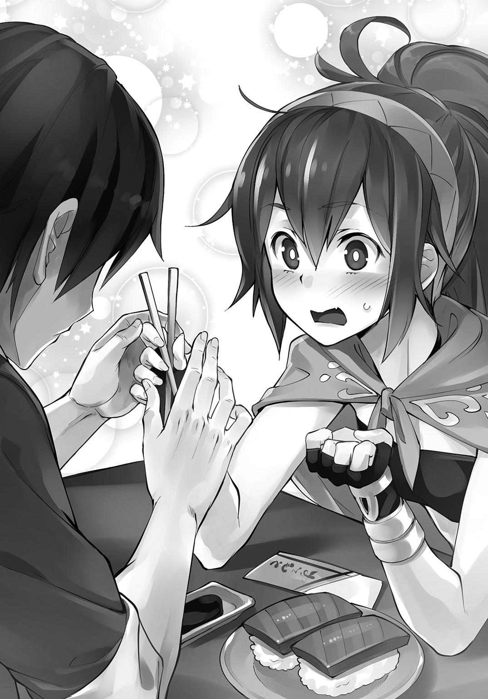
（何よ。貧にゅ......胸が慎ましやかなことを散々いじってたくせに、私のこと恋人扱いなんかして）
鈴木の恋人なんてもちろん願い下げだが、無闇に貶されて否定されるのではなく、むしろ誇らしげに自慢されるというのは、悪い気がしないというか何というか。
このまま鈴木をこき下ろしてもよかったのだが、毒気を抜かれてしまった私は溜飲を下げることにした。一応奢ってもらう立場だし、何よりお腹が本格的に空いてきた。私は老夫婦の勘違いはとりあえず放置し、回ってくる寿司をじっくりと吟味。やがて見た目が何となくお肉に似ていて美味しそうな『大トロ』の皿を取ると、まだ覚束ない手つきながらも箸を構え、何とか取り落とすことなく寿司を摘まみ上げる。そのままネタの部分にちょんちょんと醬油をつけ、ごくりと喉を鳴らした。
「それじゃあ、食べるわよ？」
「ああ。俺の奢りである寿司だ。じっくり味わって食べるがいい」
鈴木だけではなく、隣のテーブル席の老夫婦も、私が寿司を初めて食べる瞬間を見守っている。それどころか、私の異国の風貌はただでさえ目立っているというのに、どうやら鈴木との掛け合いが余計に注目を集めたようで、店内にいるお客さんのほとんどがこちらを窺っていた。
（うわ。何か食べづらいな。食べ終わったら気の利いたコメントとか求められそう......）
初めて食す、しかも異世界の料理だというのに、さてどうしたものか。
そんなことを、寿司を口に運ぶまでの僅かな時間に考えていると、不意に鮮烈な閃きが走った。
（あっ、そうか！ 私には『鑑定眼』のスキルがあるんだし、食材や料理の特徴を調べちゃえばいいんだ！）
私はこっそりとスキルを発動。シャリやネタの詳細から、寿司という料理の特色までを精査しつつ、大トロを口へと運ぶ。
ぱくり。......もぐもぐ。
寿司を一気に頰張り、おっかなびっくり咀嚼した刹那。得も言われぬ幸福感が押し寄せてきて、私は思わず目を白黒させた。そんな私に対し、鈴木が勢い込んで言う。
「どうだ、美味いだろ!? シャリはさ、ほら、何て言うか、ふわっともちっとしててさ、」
鈴木が身振り手振りを交えて寿司のよさを伝えようとするなか、私は興奮を抑えきれずに口を開く。
「何コレすっごく美味しい！ シャリは新潟県産のコシピカリね！ 米粒は大きめだけど粘り気は抑えられていて、そのあっさりとした味わいが、酢でまんべんなくコーティングされた寿司飯にぴったりマッチするわ！ 適度に空気を含んだ握りも極上で、口の中に入れた途端、パッと弾けるように旨みが広がっていく！」
「......ええと、ネタはマグロっていう高級魚でさ。とにかく美味くて高くて、」
「噓でしょう!? これは回転寿司では主流のキハダマグロやミナミマグロではなく、期間限定の本マグロだというの!? まるで霜降り和牛のような抜群の脂ののりは、黒いダイヤという異名を持つに相応しい貫禄を備えているわ！ 口の中で甘い味わいが溶けていくというのに、決してしつこくなくて、何貫だっていけちゃいそう！」
「............」
「いたってシンプルな形状だというのに、ネタとシャリが口の中で渾然一体となって奏でるハーモニーは、もはや料理の域を超えているわ！ 大地と大海の味覚を濃縮し、それを一口で味わえるよう創意工夫のなされたこの芸術品は、地球を丸齧りするのと同義！ ......ハッ！ 私は今まさに、『回転寿司』と名付けられたその真髄を知ったのよ！ 何兆もの生命を内包して自転する地球を体現しているかのような、この回転寿司という食文化こそまさに――」
私は思わず椅子から立ち上がり、握り締めた拳を天へと突き上げた。そして、込み上げてくる感動のままに、アースノウまで届けよとばかりに咆哮する。
「これぞまさに、味覚の世界平和到来なのよ――――――っ!!」
なのよー。
なのよー。
なのよー......。
私の絶叫が店内にこだまし、フェードアウトしていく。そのまま幸福の余韻にしばし浸っていたが、やがてはたと我に返った。突き上げた拳と共に、天井に向けていた視線を、恐る恐る下へと戻す。
お客さんから店員さんに至るまで、店内にいる全ての人間が、まるで魚類にでもなったかのように、目をまん丸に見開いて私のことを凝視していた。
「ひぇ......その......ええと」
羞恥心でマグロの赤身のように顔に朱が差した。今すぐにでも『忍び足』でこの場を立ち去りたい。
でもお寿司はもっと食べたい。
そんな葛藤を抱えていると、まるで海鳴りのような感嘆の声がそこかしこから上がり始め、やがて津波となって店内を飲み込んだ。
「外国のお嬢ちゃん、すごいじゃないか！ 寿司は初めてだってのに、ちょっと口に含んだだけで米の産地から何からわかるのかい!?」
「ほんとですねぇ。それに、お寿司の良さをあれほど的確に表現してもらえたら、日本人としても嬉しいわ」
おじいちゃんとおばあちゃんが口々にそうベタ褒めしてくれた。店内の人たちも同感らしく、盛大な拍手を送ってくれる。
「ねーちゃん、大したもんだ！」
「まるで神の舌を持ってるみたいね！」
「もしかしたらミシュ○ンの星を決める覆面調査員なんじゃない!? ここ回転寿司だけど！」
「ありえない話だが一周回ってありえそうだぜ！ 回転寿司だけに！」
いまいちピンとこない話もあったが、どうやら盗賊の初期スキルである『鑑定眼』は、異世界ではかなり珍しい技能であるらしい。鑑定結果を元にちょっと大げさなことを言っただけなのだが、ここまでチヤホヤされるとは。
私は頭をポリポリ搔きながら、にへへと笑って言う。
「いやぁ、それほどでもありますけど。......ハッ！ いま回ってきた『とろサーモン』、照りといい艶といい、オホーツク海沿岸で水揚げされた鮭に違いないわ！ 大海原の代わりにレーンを回遊するなんて、ここはまさしく世界の縮図！ 味覚の大航海時代よ――――――っ!!」
『おおぉぉっ！』
再びやんややんやの喝采が上がる。私は得意になってふんぞり返るが、この状況を快く思わない者が一人いた。もちろん、鈴木である。
鈴木は眉を吊り上げて喚く。
「ちょっと待ったズルイじゃん！ アニ、お前スキル使ったろ!?」
「な、何のことかしら？ 私がわかるのは、ええと......ミシュ○ンの星だからだし？」
「ほら意味わかんないこと言ってるじゃん！ ウソっぱちじゃん！ だいたいこっち来たばっかりなのに、キハダマグロとか知ってるわけないし！」
ギクッ！
冷や汗を流す私を、鈴木は容赦なく責め立てる。
「異世界きてチート能力使ってチヤホヤされて悦に入るって、いったいどこのラノベ主人公だよって突っ込みかけたけど、そもそも能力の使い方おかしいじゃん！ なにグルメレポーターみたいなことやってんの!? 盗賊スキルなんだから、ものすごい財宝を手に入れて世界を救うとか、そんな感じじゃないとラノベっぽくもないじゃん！ 単なるウンチク好きの食いしん坊じゃん！ もうむしろ彦○呂じゃん!!」
「べ、別にいいじゃない！ みんな喜んでるし、誰にも迷惑かけてないんだから！」
「アニが得意げになってるのが何か気に食わないね！ それに、俺が赤っ恥かいたみたいになったのがムカつく！ もう奢るの止めよっかな!?」
「あんた本当に器が小さいわね!?」
私たちのそのやりとりを聞いていた客の一人が、ここぞとばかりに口を挟む。
「回転寿司だけに、レーンに載るような小さい器ってかぁ!?」
「黙ってろギャラリー!!」
あぁ、でもどうしよう。このままでは美味しいお寿司が食べられなくなってしまう。そう思って眉尻を下げていると、見るに見かねたらしく、おばあちゃんが声をかけてくる。
「なぁに、恋人とケンカ？ せっかくお寿司の良さを知ってもらえたのに、食べられないのは可哀想だわ。よければご馳走しましょうか？」
「え、そんな悪いです！ こんな高級なお店なのに！」
『高級......？』
店内にいる全員が声を合わせ小首を傾げた。その様子を不審に思う間もあればこそ、鈴木が急に声を張り上げて言う。
「なんてね！ 冗談だってぇ！ 正直手痛い出費になるけど、奢るって言った以上は奢ってやるよ！ だから盗賊に転職させたり盗賊団の頭領にしたことは水に流してね！ 後で殴ったりしないでね！」
「む。全て水に流せるわけじゃないけど、お寿司食べられるなら多少は考慮してもいいわ。でも、後悔しないでしょうね？ 私、けっこう食べるわよ？」
「構わないから腹いっぱい食べろってぇ」
「やった！」
私は手を打ち鳴らすと、さっそく二枚目の皿を取った。周りの人たちは何か言いたげだったが、私が満面の笑みで寿司を頰張るのを見て、静かに口を噤む。
かくして私は、鈴木の経済状況など意に介さず、最終的に八皿ものお寿司を平らげてやったのだった――。
５話引き籠もり界のカリスマ
『助けてよドラヱも～ん』
『もう、仕方ないなぁ』
ごそごそ......。
たらららっららーん♪
『ど～こ～ま～で～も～ド～ア～』
魔法の板に映し出される、アニメと呼ばれる動く絵に、私は何度目になるかわからない拍手を送った。さて、今回このタヌキ型ロボットは、いったいどんなマジックアイテムを披露してくれるのだろうか。
「おっと。その前にっと」
私は慣れた動作でインターフォンのボタンをプッシュ。すぐさま響いてきた受付の声に驚くでもなく、すらすらとオーダーを通す。
「注文お願いします。ミックスピザ一つと、フライドポテトを一つ」
腹が減っては戦とアニメ鑑賞はできぬ。支払いはどうせ鈴木なんだし、注文しなきゃ損ってもんよね！
私が今いるのは、インターネットカフェというところだ。スシヨーを後にした私は、異世界がどんなところなのか見て回ろうと意気込んでいたのだが、鈴木が不意にこう言ったのだ。
「俺はこれから買い物とか、色々と準備があるから！ とりあえずここからは別行動ね！」
これにはさすがに面食らった。別に鈴木と一緒にいたいわけではないが、右も左もわからない異世界で単独行動というのはさすがに心細い。というか、私を無理矢理に異世界へと連れてきたのだし、エスコートするのが普通ではないのか。
せめて買い物に同行すると告げると、鈴木は渋い顔をして言った。
「アニはまたスキル使って、あっちの商品の方が性能がいいだの、こっちの方がお得だの、空気読めないカリスマ店員みたいにウザくなるだろ!? そういうの面倒だからいいよ！ 使い方教えてやるから、ネカフェでアニメでも見てな！」
......とまあ、そんな経緯があって、私はここにいるのだ。
（最初はアニメって何よって思ったけど、見てみるとすごい面白いわね。止まらなくなっちゃうわ。食べ物や飲み物も美味しいし、日本っていいとこじゃない）
もう少しアニメを楽しんでもいいが、せっかく異世界に来たのだし、狭い部屋に籠もっているだけというのはもったいない。注文した料理を食べ終えたら、ちょっとその辺を散策してみよう。受付の人に伝言を残しておけば、鈴木と行き違いになっても、ここで落ち合えるだろう。
そんなことを考えていると、ドアがノックもなしに唐突に開いた。もうピザが来たのかと振り返ると、そこには鈴木の姿がある。
鈴木は私と目が合うと、開口一番こう言った。
「準備できたから、そろそろアースノウに戻るぞ！ 忘れ物すんなよ！」
寝耳に水の発言に、私は狼狽した。いきなり帰るだなんてあんまりだ。異世界に来てから、まだスシヨーとネカフェにしか行ってないのだから。
「ち、ちょっと待ってよ！ いくら何でも急すぎるでしょ!? せっかく来たんだし、色々と見て回りたいから、二、三日は滞在させてよ！」
至極まっとうな要求をしたつもりだったが、鈴木は私のその台詞を聞き、怪訝そうに眉をひそめた。
私がきょとんとした眼差しを返すと、鈴木はやがて全てを悟ったとばかりに、深い溜め息をついた。その瞳に宿るのは、さてどうやって説得したものかという困惑でも、聞き分けのない子を叱ろうという怒りでもない。腫れ物に触れるかのような、どこか哀れみを滲ませた光。
「アニ。俺と別行動をとるようになってから、どれくらい経ったと思う？」
「え？ お寿司を食べたのってお昼ぐらいだったから、もう夜......うぅん、深夜くらいにはなってるわよね。今すぐ帰るなんて言わないで、とりあえず酒場に行かない？ 酒場で情報収集は基本だし、この世界のこともっとよく知りたいから」
私の提案に対し、鈴木は呆れたようにフルフルとかぶりを振った。そして、教え諭すかのような、穏やかな口調で告げる。
「あぁ、やっぱりそれくらいだと思ってたのか。いいか、アニ。落ち着いて聞けよ？ 俺たちがスシヨーに行ったのは一昨日の昼。あれからもう丸二日経ってる」
私は最初、何を言われているのか理解できず、目をぱちくりさせた。だがやがて、これはウィットに富んだ異世界ジョークなのだろうと判じ、あははと笑みを零す。
「あーびっくりした。悪い冗談やめてよね。そりゃまあ、アニメなんて見たの初めてだし、けっこうのめり込んでた自覚もあるけどさ。丸二日も経ってるわけないじゃない」
「冗談なんかじゃないぞ。よく考えてみろ。アニメって一話で三十分近くあるけど、いったい何話分を見た？」
そう問われた私は返答に窮し、ぐっと喉を詰まらせた。すると鈴木が、私のことをズビシッと指差し、クイズを出題する。
「それじゃここで問題！ 頭につけたら空を飛べるようになる便利道具の名前は!?」
「えっ？ タケノコプターよね？」
「色んなものを小さくできるライトの名前は!?」
「スモールＬＥＤライト」
「すずかちゃんと言えば!?」
「お風呂に入る回数が異常」
「ほらね!? 道具の名前即答だし、すずかちゃんのお風呂の回数に驚異を感じるようになったら、それもうヘヴィウォッチャーだよ！ 十話やそこいら見ただけじゃないじゃん！」
私は鈴木の言葉に愕然となった。それでは何か？ 私は異世界という、冒険者にとって血湧き肉躍る環境に身を投じていながら、こんな狭い部屋から一歩も外に出ず、丸二日間『ドラヱもん』を視聴し続けていたというのか？
状況を把握して蒼ざめる私に対し、鈴木は容赦なく言い放つ。
「あれだね！ アニに適しているのは聖騎士でも盗賊でもなく、引き籠もりだね！」
「いやあぁぁぁ止めてえぇぇ！ 私はいつかきっと聖騎士になるのよぉ！ 引き籠もりのカテゴリーで括らないでぇ！」
「そんなこと言ったって、アニは引き籠もりの才能あるよ！ 二日間くらいなら不眠不休で活動できる冒険者だから、時間が経つのも忘れて『ドラヱもん』をマラソン視聴できたんだろ!? それもうエリートだよ！ 引き籠もり界のカリスマだよ!!」
「ひいいぃぃぃっ!!」
私は耳を塞ぎ、ブンブンと勢いよく頭を振る。そんな私を呆れ顔で見据える鈴木が、溜め息混じりに言った。
「それでどうすんだよ？ ネカフェは引き籠もりにとって天国だろうし、アースノウに戻らずここに残るか？ 異世界に渡った引き籠もりとして語り継がれる存在になるか？」
「冗談じゃないわ！ 帰りましょう、今すぐ――......あ待って。ミックスピザ頼んだとこだし、あと二話くらい見てから、」
「俺だけで戻るね！ 一生引き籠もってりゃいいよ！」
「ウソです帰ります！ 帰りますうぅぅぅっ!!」
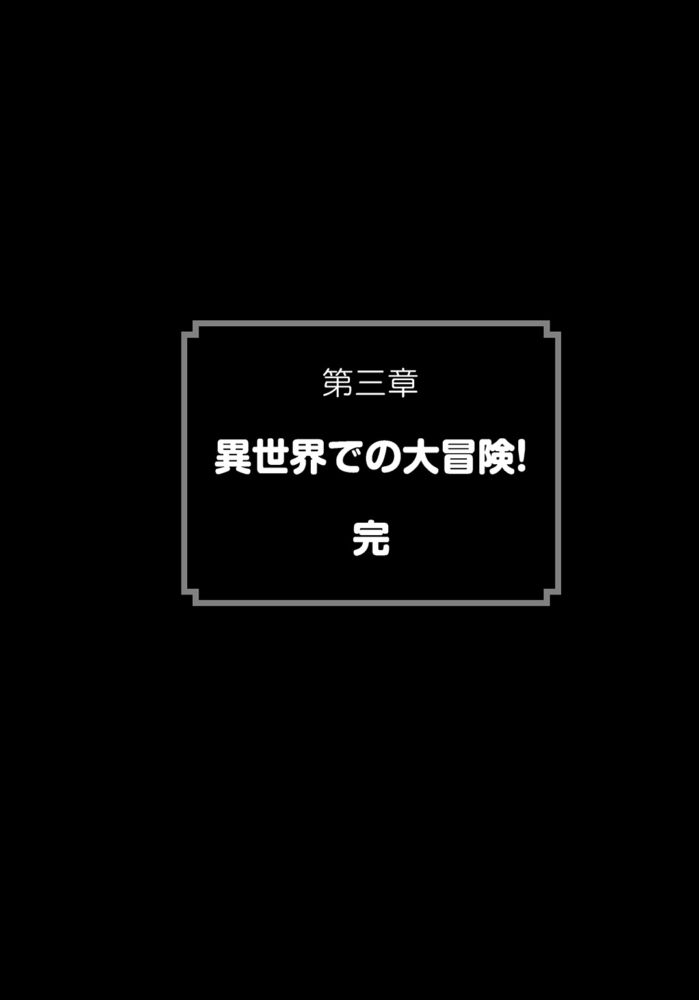
【第四章】召喚獣の咆哮
１話宣戦布告されちゃった。
日本から直接グロドの洞窟に戻るのかと思いきや、鈴木がピアラの羽根を使う際に告げた目的地はダンカの街だった。私たちが高速飛翔に移ると、日本に来た時と同様に、アルデ・ソルの槍が時空を切り裂き、私たちをアースノウへと導いてくれる。
ほどなくしてダンカの街へと降り立った私は、眼前に広がる予想外の光景に息を呑んだ。
「えっ!? な、何よこれ!?」
私たちが降り立ったのは街の中心にある広場だったが、皆の憩いの場と呼ぶに相応しい普段の穏やかさはそこには欠片もなかった。右を向いても左を向いても、包帯を巻いた負傷者の群れ。大規模な戦闘でもあったのか、広場はまるで野戦病院のような様相を呈している。
「いったい何があったの......？」
呆然と立ち尽くしていると、私たちのもとへと駆けてくる人影があった。どうやら負傷者の治療に奔走していたらしく、手に救急箱を抱えたミレアさんである。
「あっ、ミレアさん！ これはいったい――」
そう訊ねようとしたが、ミレアさんは私を素通りし、抱きつかんばかりの勢いで鈴木へ問いかける。
「鈴木さん、大丈夫ですか！ 怪我はないですか！」
「うん？ 別にどこも怪我してないけど？」
「そうですか。よかったぁ......」
ミレアさんはほぅと大きく吐息を洩らした。その目尻には安堵したからか、微かに涙まで滲んでいる。私が呆気に取られていると、ミレアさんは私の存在にようやく気づいたらしく、あっと小さく声を洩らした。ミレアさんは何かを必死に誤魔化すように、慌てて言う。
「アニさんも、ご無事で何よりです！ すごく心配してたんですよ！」
「えっ。あ、心配かけてすみません......」
......というか、おやぁ？
何だろう、この違和感は。何だか鈴木の時と温度差があるような。
胸にもやもやとしたものは残ったが、この惨状の原因を知るのが先決だろう。そう判断した私は、すぐさまミレアさんに問いを放つ。
「いったい何があったんです？ 比較的安全なこの地域で、これほどの負傷者が出るなんて」
「怪我人の治療に手一杯で、わたしも詳しいことは聞けていないんですけど、どうやらグロドの洞窟が魔王軍に急襲されたみたいなんです」
私は驚きに目を瞠った。それでは、ここにいるのはアニ盗賊団の面々ということか。
注意して視線を巡らせてみれば、確かに見知った顔がいくつか目に留まった。その中に左腕を布で吊ったゼントの姿を見つけ出し、すぐさまそちらへと足を向ける。ゼントは近づいてくる私たちに気づいたらしく、苦渋に満ちた表情を浮かべると、ガバッと頭を下げた。
「アニの姉御、鈴木の旦那、申し訳ねぇ！ 留守を任されていながら、この体たらく......っ！」
「ち、ちょっと止めなさいよ頭を上げて！ 襲撃を受けたって聞いたけど、これだけ派手にやられるなんて、いったいどんな化け物と戦ったのよ!?」
そう問い詰めると、ゼントが蒼白になった顔をようやく上げた。ゼントは口にするだに恐ろしいといった様子だったが、意を決したようにゴクリと唾を飲み込み、震える声で告げる。
「襲ってきたのは、魔騎士サルベリアでさぁ」
「なっ......!?」
思いがけない返答に虚を衝かれ、私は言葉を失った。すると隣で話を聞いていた鈴木が、怪訝そうに眉をひそめる。
「魔騎士サルベリア？ どっかで聞いたことある名前だな。そいつ強いのか？」
「なに言ってんのよ強いなんてもんじゃないわよ！ 四天王の一人で、魔王軍最強の実働部隊『暗黒騎士団』を率いてる厄介な奴よ！」
魔騎士サルベリアが相手ならば、これだけ手ひどくやられたのも頷ける。
（というか、あのサルベリア相手に、皆こんなになるまで戦ったってことよね......）
彼らに不退転の決意を抱かせたのは誇りだろう。今やルーシュ王子のお眼鏡に適うまでに急成長を遂げた、アニ盗賊団の一員だという自負が、暗黒騎士団との対決という茨の道を歩ませたのだ。
何だか目頭が熱くなった。頭領という立場にありながら、これまでどうしても愛着の持てなかったアニ盗賊団に、初めて親しみを覚える。
私は広場にいる負傷者の群れをぐるりと見渡すと、朗々たる声で告げた。
「聞いてちょうだい！ 私はその場にいたわけじゃないけど、皆の怪我を見ればどれほどの死闘だったか容易に想像できるわ。あのサルベリア相手に怯むことなく、よく戦ったわね。望んでなったわけじゃないけど、頭領として鼻が高いわ。それでこそアニ盗賊団よ！ 感動した!!」
頭領自らの激励なのだ。広場にはすぐさま歓呼の声が満ちるだろうと思っていたのだが、一拍置いてゼントたちから返ってきたのは、どこか小馬鹿にしたような失笑。
自分の言動にちょっと酔っていた私は、急に気恥ずかしくなり、頰を朱に染めた。
「な、何が可笑しいのよ!?」
「姉御、馬鹿言っちゃいけませんぜ。ウサマタ相手でもとりあえず束になってかかるあっしらが、サルベリア相手に戦おうなんて考えるわけないじゃねぇですかい」
「へ？ だってその怪我......」
私が指差す先で、ゼントがキリリッと真面目な顔を作った。ゼントは当然だとばかりに、自信満々に告げる。
「これはもちろん、我先にと逃げる際に、周りにいた仲間と殴り合った結果でさぁ！」
「あんたら死ねばよかったのに!!」
これが私の名を冠する盗賊団なのか。
絶望と怒りで身を震わせていると、鈴木がまぁまぁとばかりに、私の肩にポンと手を置いた。
「そう熱くなるなってぇ。アニ盗賊団は充分に役目を果たしたよ。おいゼント、そのサルベリアってやつ、何か言ってなかったか？ 名が売れてきたとはいえ、四天王が単なる盗賊団を襲うんだ。きちんとした目的が当然あったろう？」
「目的、ですかい？」
ゼントは訝しげな表情を見せていたが、やがて何か思い当たったのか、あっと声を上げた。
「そういえば、変なことを言ってやしたぜ。『盗賊団の頭か、もしくは異世界から来た勇者とやらはいるか』とか何とか」
ゼントの話を聞き、私は小首を傾げた。
攻め込んだ相手のボス――アニ盗賊団でいえばこの私を捕まえようとしたというのは、まあわかる。しかし、ここでなぜ『異世界の勇者』なるものが出てくるのか。
（というか、『異世界の勇者』って、どっかで聞いたフレーズね......？）
記憶を辿っていくと、すぐさま脳裏にある光景が思い浮かんだ。あれはそう、魔王城に忍び込んだ際に、鈴木が魔王の部屋に落書きをした一文のそれだ。
〝異世界より勇者参上！〟
私はガバッと鈴木の方を見やった。すると鈴木は、待ち侘びていたものがようやく来たとばかりに、満足げな笑みを浮かべている。
「四天王の一人か。悪くない獲物が釣れたな」
「え？ いったいどういうことよ？」
「どうもこうもない。俺が何のためにアースノウにやって来たかは話したろう？ ようやく和平交渉の足掛かり、魔王との橋渡し役が出てきたということだ」
「!?」
私は目を剝き、鈴木のことをまじまじと見やった。では、あの落書きは単なる嫌がらせではなく、魔王からのコンタクトを引き出すためだったというのか？
（いや、まさかね。このゲスいだけの鈴木が、そんな深慮遠謀で動いていたとは思えないし）
私はそう納得しようとするが、鈴木が先ほど言っていた台詞が妙に引っかかった。
〝そう熱くなるなってぇ。アニ盗賊団は充分に役目を果たしたよ〟
魔族からすれば、『異世界からの勇者』を名乗る者が魔王城に侵入し、あろうことか魔王の居室の前まで辿り着いたとなれば、血眼になってその人物を探すはず。そこに『魔王城に忍び込んだ大盗賊』の情報が入ってくれば、異世界の勇者と何らかの接点があるに違いないという結論に至るのは自明の理だ。
（そうなったら、魔王は何としても大盗賊を捕らえて、勇者の正体を暴こうとするはず。しかも魔王城に忍び込むほどの手練を生け捕りにするとなったら、その辺のモンスターに命令を下すんじゃなくて、きっと信頼できる部下を遣わすに違いない......）
それこそ四天王のような、魔王と直接のパイプがあり、和平交渉の足掛かりに成り得る大物を。
背筋がぞくりとした。アニ盗賊団が果たした役目というのは、言わば撒き餌ではないのか。私という大盗賊の存在を広く知らしめ、なおかつその所在をはっきりと示すことで、サルベリアを釣り上げたのではないか。
うすら寒いものすら感じ、何も言えずに立ち尽くしていた時だ。話についていけないといった風のミレアさんが、遠慮がちに問いかけてきた。
「あの、先ほどから何の話をしているんです？ 異世界の勇者とか和平交渉とか、さっぱりわからないので教えてもらいたいんですけど......」
「え？ あぁ、ええと......鈴木は実は日本という異世界からやって来て、魔王と和平交渉しようとしてるんですよ......」
衝撃覚めやらぬ私は、そう気のない返答をしたあと、しまったと後悔した。別に口止めされていることではないし、喋ってしまっても何ら問題はない。しかしそれでも、私がこれまで口外しなかったのは、こんなことを真面目に話したが最後、頭がおかしくなったかと心配されるか、変な詐欺に引っかかっているのだろうと笑われるのがオチだからだ。
（うわどうしよう！ ただでさえ白い目で見られる盗賊なのに、ミレアさんにまでそんな扱い受けるようになったら立ち直れない！）
戦々恐々となる私だったが、そんな思いは杞憂に終わった。ミレアさんは目を瞠り、独白するように呟く。
「鈴木さんが異世界の住人!? かなり斬新な発想をする人だとは思ってましたけど、そういう事情があったからなんですね！」
「へ？ ミレアさん、あっさり信じるんですね」
「普段の言動もかなり変わってましたけど、グロドの洞窟攻略に使用した戦法は、常識外れにも程がありましたから。それにしても、魔王と和平交渉なんて――」
「信じられないでしょう？ そんなこと本気で考えるなんて、」
「素敵ですね！」
「そう、頭がステキ......ん？ ステキ？」
頭がおかしいと評そうとしていた私は、思わずミレアさんをまじまじと見やった。しかしミレアさんは言い間違えたわけではないようで、熱に浮かされたような眼差しで鈴木を見つめている。
「冒険者の被害を抑えるために、憎まれ役になるのを承知でゲスな言動を取っているのかなとは思ってましたけど、まさか魔族との和平まで模索していたなんて。わたし、鈴木さんのことを完全に誤解していました！」
......何だろう？
何かものすごく嫌な予感がする。
ミレアさんの誤解は解けたのではなく、迷走した挙句、現在進行形で行ってはいけない方向に全力で突っ走っているような気がする。
「あ、あのぉ。ミレアさん、いったいどんな誤解を――」
そう問いかけたとき、ミレアさんがガバッと私に向き直った。ミレアさんは真剣な面持ちで訊いてくる。
「アニさん。ここ数日見かけませんでしたけど、いったいどこへ？」
「え？ ええと、鈴木に連れられて、日本に行ってました」
ミレアさんは私のその返答を聞き、驚きに目を丸くすると、考え込むように顎先に手をやった。ブツブツと呟くその口からは、「ご両親にご挨拶」とか、「第一夫人」とか、よくわからない単語が洩れ聞こえてくる。
いったいどうしたのだろうと心配になっていると、ミレアさんは気を取り直したように、ふぅと一つ息を吐いた。ミレアさんは私のことを見据え、はっきりと言う。
「アニさん。わたしたち、友達ですよね？」
「はい」
「でも、それとこれとは別です」
「はい？」
「――わたし、負けませんから！」
「はいぃ!?」
えっ、待って！
私、何で宣戦布告されてるの!? いったい何で競ってるの!?
混乱する私には構わず、ミレアさんはライバルに後れを取るまいと躍起になる冒険者よろしく、勢い込んで鈴木に話しかける。
「鈴木さん、わたしにも和平交渉のお手伝いをさせてください！ わたしも鈴木さんの力になりたいんです！」
「ほんと？ みーちゃんが協力してくれたら百人力だね！ それじゃあさっそくサルベリアに会いに行こうか！」
「はい！」
ミレアさんは元気に返事をすると、どこか挑戦的に私のことをチラリと見た。
正直、サルベリアと対峙するなんて願い下げだし、結果報告をここで待っていたいというのが本音だ。しかし、何だかとてつもない勘違いをしている様子のミレアさんをこのままにしておくと、取り返しがつかない状況に陥るのではという不安も募る。
友達としてそんな状況の彼女を放ってはおけないと判断した私は、その返答が宣戦布告を受けて立つ言葉になるとは露知らず、ぼそっと言ってしまったのだった。
「えっと......私も行こっかなー？」
２話嗅ぐのはダメ！
グロドの洞窟に満ちる闇が、光に反逆して外へと溢れ出してきた。
......いいや、違う。
洞窟から現れるのは、漆黒の鎧に身を包んだ騎士たちだ。泣く子も黙る暗黒騎士団が、黒い絨毯を押し広げるように、統制の取れた整然とした動きで続々と出てくる。
（ヒイィッ、やっぱり来るんじゃなかった！ 相手が一人でも勝てる気しないんですけど!?）
グロドの洞窟にやってきたばかりだというのに、私は早くも後悔の念に苛まれて半べそになる。暗黒騎士団との距離はまだ開いているが、そのプレッシャーはこれまで対峙してきた有象無象のモンスターたちの比ではない。ミレアさんの方を窺ってみれば、彼女も魔法の杖をきゅっと握り締め、緊張の色を浮かべていた。そして、鈴木に至っては――
「......ナンマンダブ、ナンマンダブ、ナンマンダブぅ」
以前にも聞いた呪文を唱えつつ、私の背後でぷるぷる震えている。
「ちょっと鈴木、人を盾にしないでよ！ 女の子の背中に隠れるなんて恥ずかしくないの!?」
「全然！ 俺は男女差別しないからね！ この中ではアニが一番防御力高いだろうし、当然のフォーメーションじゃん！」
「くっ!? 都合よく異世界の知識を身につけてるわね......ミレアさん、酷いと思いません!? こいつサイテーですよね!?」
鈴木をディスるガールズトークで不安を紛らわせようと試みたが、ミレアさんはぴったりと身を寄せ合ってる格好の私と鈴木をどこか悔しげに眺めている。
どうしたのかなと小首を傾げていると、やがてミレアさんは魔法の杖を頭上に掲げ、カッと目を見開いた。そして、
「プロテ！ プロテ！ プロテ！ プロテぇ！」
「えっ、何!? ミレアさんが怒濤の勢いで防御力アップの呪文を自分にかけ始めた！ 待って落ち着いてミレアさん！ どうせかけるなら個人の防御力を上げるプロテじゃなく、パーティー全体に効果があるプロテオールにしてぇ！」
「それじゃアニさんの防御力も上がるじゃないですか！」
「そのつもりで言ってますが!? なに、私って実は嫌われてるの!?」
私たちがギャーギャーと騒いでいる間に、グロドの洞窟前に展開する暗黒騎士団に動きがあった。整列した騎士たちが剣を眼前に立てると、隊列がスッと左右に分かれる。私たちが身構えるなか、暗黒騎士団が形作ったその道を、悠然と歩いてくる者がいた。
褐色の肌と、ピンと尖った耳という身体的特徴から、ダークエルフ族だとわかる。好戦的な切れ長の目に、挑発的な艶やかな唇。抜群のプロポーションの肢体を覆うのは、目のやり場に困ってしまうような、露出の多い黒の鎧。
目にするのは初めてだが、これまでに聞き及んでいた情報からピンと来た。彼女こそが魔王軍屈指の暗黒騎士団を率いる、魔騎士サルベリアであろう。
さっきまで背中に隠れていた鈴木が、急にグッと身を乗り出し、弾んだ声を上げた。
「ひょう！ 何かエロいねーちゃんが出てきた！ あのねーちゃんがサルベリアか！ 目の保養になるぜぇ！」
こいつ、なに能天気なことを......。
私が呆れていると、ミレアさんが慌てたように忠告する。
「あんな卑猥な装備に騙されちゃいけません！ ああいう人に夢中になっても、きっと弄ばれて捨てられるに決まってるんですから！」
......うーん。今日のミレアさん、どっかズレてるなぁ。
でもまあ確かに、見てくれに騙されてはいけないという部分は同感だ。私は一つ頷く。
「そうよ。あんな恥ずかしい格好してても四天王の一人なんだから、あんたなんかデコピン一発で殺されるわよ。わかったら黙って震えてなさい」
二人揃ってのその訓戒は、むしろ鈴木を意固地にさせたようだった。鈴木は不機嫌そうに唇を尖らせ、異を唱えようとばかりに口を開きかける。
と、その時だ。
「おい貴様ら！ 好き勝手言ってくれるじゃないか！」
刺々しいが、どこか色香を漂わせる声が辺りに響き渡った。私たちが声のした方を見やると、サルベリアが腰に手を当てて仁王立ちし、私たちを睨み据えている。
（うわ！ けっこう距離あるのにしっかり聞かれてた！）
サルベリアは身体をわなわな震わせながら、私たちが口にしたことを反芻する。
「エロいだと？ 卑猥だと？ 恥ずかしい格好？ 恥ずかしい格好と言ったな？」
あ、私の感想だけ繰り返し言った！
一番ムカついてるっぽいな！ 逃げよっかな!?
戦々恐々となりながらそんなことを思っていると、サルベリアがぼそりと呟いた。
「............と思うのか？」
「ん？」
よく聞き取れなかった私は、鈴木とミレアさんに視線をやり、今の発言を教えてもらおうとした。しかし二人とも私と同様に聞き漏らしたらしく、かぶりを振るばかりだ。
そんな私たちの挙動から察したのだろう。サルベリアは忌々しそうにギリッと歯嚙みしたあと、吐き捨てるように言い放つ。
「私が好き好んでこんな格好をしてると思うのか!?」
「「「......は？」」」
期せずして私たち三人がハモった。サルベリアは何だか必死な様子で弁明する。
「勘違いするな！ 暗黒騎士団の歴代団長は全員が男で、身につける鎧のデザインもシックな感じに統一されてたんだ！ しかし私が初の女性団長として就任したら、魔王軍内でも異様に盛り上がって！ 支給される団長用の鎧も、何というか、変な方向に気合い入れて作られてて！ 出来上がってみたら、その、こんな感じに......」
サルベリアは自分の鎧に視線を落とすと、深い懊悩を滲ませつつも、艶っぽいとしか表現できない溜め息をついた。彼女の背後に直立不動で控える暗黒騎士団の面々が、その色気に反応する。
チャーチャーチャー、チャラララ～♪
暗黒騎士Ａはもじもじしている！
暗黒騎士Ｂはもじもじしている！
部下たちのそんな様子には気づかず、サルベリアが独りごちるようにボソボソと続けた。
「私だってこんな格好したくはないさ。仕方ないじゃないか。魔王様から下賜された一張羅の鎧を着ないとなると、二心があると勘繰られる可能性がある。それに同期の女子が、女性の雇用機会を改善するいいきっかけになるかもしれないから、サルベリアにはとことん目立ってほしいって、変なプレッシャーかけてくるし......」
うぅむ。何だろう、このやけに生々しい愚痴。
しかしながら、組織に属さず、成果さえ出せば性別なんて関係なく評価を得られる、私のような冒険者には縁遠い話である。
どうもピンと来ないままでいると、ミレアさんが激しく共感した様子で、何度も頷いた。
「わかります、わかります！ 組織で女性が出世するのって、すごく難しいですから！ わたしだって、はっきり言ってトマス所長よりは仕事できると思いますけど、女性だと顧客の受けがいいからって、未だに受付ですもん！ お給料もほとんど上がらないんですよ!?」
「そうか！ わかってくれるか！」
「わかりますとも！ 魔族も大変なんですね！」
サルベリアとミレアさんが、同士を見つけたとばかりに、穏やかな眼差しで見つめ合った。そこには種族の垣根を越えた、淡い友情すら見て取れるようだ。
（あれ、何かいい雰囲気！ 初めから交渉が目的だし、これなら血を見ないで済むかも！）
光明を見た思いでいると、鈴木がちょっと待てよとばかりに、やおら口を挟んだ。
「さっき『魔王様から下賜された一張羅の鎧』って言ってたけどさ。それじゃ何？ そのエロい鎧、ずっと着てるわけ？」
「うん？ それはそうだが......？」
「マジかよ!? エロいのはいいけど、臭いのは嫌だな！ 俺、潔癖症なとこあるからさ！」
その一言に、サルベリアの表情がピシリと強張った。私は神速で動き、鈴木の胸倉を摑んで吊るし上げる。
「あんたなに言ってんのぉ!? 状況わかってんのぉ!? というか、装備品ってメチャ高いんだから、いくつも持ってるわけないじゃない！ 常識でしょ!?」
「えぇ～。みんなそれで平気なわけ？ ないわー。萎えるわー。異世界ギャップだわー」
「待ってください鈴木さん！ わたしはこまめに洗ってますし、受付にいる時は毎日服装変えてますよ！ 臭いのって最低ですもんね！」
「ミレアさんそこ掘り下げないで！ せっかく芽生えかけた異種族との友情を壊しかねないから黙ってて!!」
私はがなり立てたあと、恐る恐るサルベリアの方を窺ってみた。サルベリアは射殺さんばかりの眼差しで私たちのことを睨みつけていたが、やがて後方へチラリと視線を転じ、暗黒騎士の一人に問いかける。
「............に、臭うか？」
「は？」
「だから、私は臭うかと訊いているっ！」
魔王軍四天王の一人とはいえ、そこは年頃の女性というべきか。鈴木の指摘が気になったらしいサルベリアは、僅かに頰を染め、切実な様子で返答を待つ。
ぽかんと口を開けていた暗黒騎士が、はたと我に返った。暗黒騎士は最初こそ挙動不審な様子でいたが、すぐさま鼻の穴をぷくぅと膨らませると、ハァハァ言いながら血走った目で問い返す。
「......か、嗅いでもよろしいので？」
「気持ち悪い対応をするなぁ！ 魔剣技イビルスラーシュッ!!」
ズバァッ！
「うぎゃああぁぁぁぁありがとうございますうぅぅぅっ!!」
斬られていながら、恍惚の表情でバタリと倒れ込む暗黒騎士。
私は目の前で繰り広げられた光景に愕然となった。ミレアさんも同様らしく、ブルリと戦慄の表情を見せる。そんななか、鈴木がうひょうと声を上げた。
「すげぇ！ リアル女王様だ！ あんなハードプレイ見たことないぜぇ!!」
「ち、違う！ 私にそういった意図は決してない!!」
「んなこと言ったって、現に斬られた奴、ありがとうございますとか言ってたじゃん！」
「それはそうなんだが、誤解なんだ！ 暗黒騎士になるには厳しい選別があるし、私の部下は皆、実直で品行方正な者ばかりだったんだ！ だけど何というか、女だからという理由で舐められないように厳しく指導を行っていたら、いつの間にかこんな感じに......」
サルベリアが視線を向けた先で、斬られた暗黒騎士と、彼に駆け寄った同僚騎士とのやりとりが繰り広げられる。
「暗黒騎士Ａ！ 気をしっかり持て！ すぐに薬草で回復してやるぞ！」
「ま、待ってくれ暗黒騎士Ｂ。もう少しだけ、もう少しだけサルベリア様のおしおきの味を甘受していたいんだ......」
「馬鹿な！ 気持ちはわかるが致命傷だぞ！」
「サルベリア様の手にかかって......死ねるなら......本望......だ......（ガクッ）」
「......おい、ウソだろ？ 暗黒騎士Ａ！ 返事をしろ暗黒騎士Ａ！」
返事がない。ただの屍のようだ。
「暗黒騎士Ａ――――――っ!!」
......え何これ!?
同士討ちで敵が一人死んじゃいましたけど!? しかもＡって、けっこう古参の実力者っぽかったんですけど!?
サルベリアは眉間を押さえると、深い苦悩の声を洩らす。
「いや、いいんだ。どうせ魔王城で生き返らせてもらうんだから。ただ、ご覧の通り、部下は私の制裁を喜んでしまって。もうホント......」
そこでサルベリアは、瞳を微かに潤ませた。本人に自覚はない様子だが、悩ましげに長い前髪をかき上げると、色っぽいアンニュイな溜め息と共に呟く。
「......もぉヤダ......」
あ、苦労性っぽい！ 何か一気に親近感湧いちゃった！ 友達になれそう！
私がそんなことを思ったのも束の間。サルベリアは気を落ち着けるように一つ大きく深呼吸すると、キッと私たちを見据える。
「えぇい、お喋りが過ぎた！ さっさと仕事を済ませて魔王城に帰るぞ！ そして鎧を陰干しする!!」
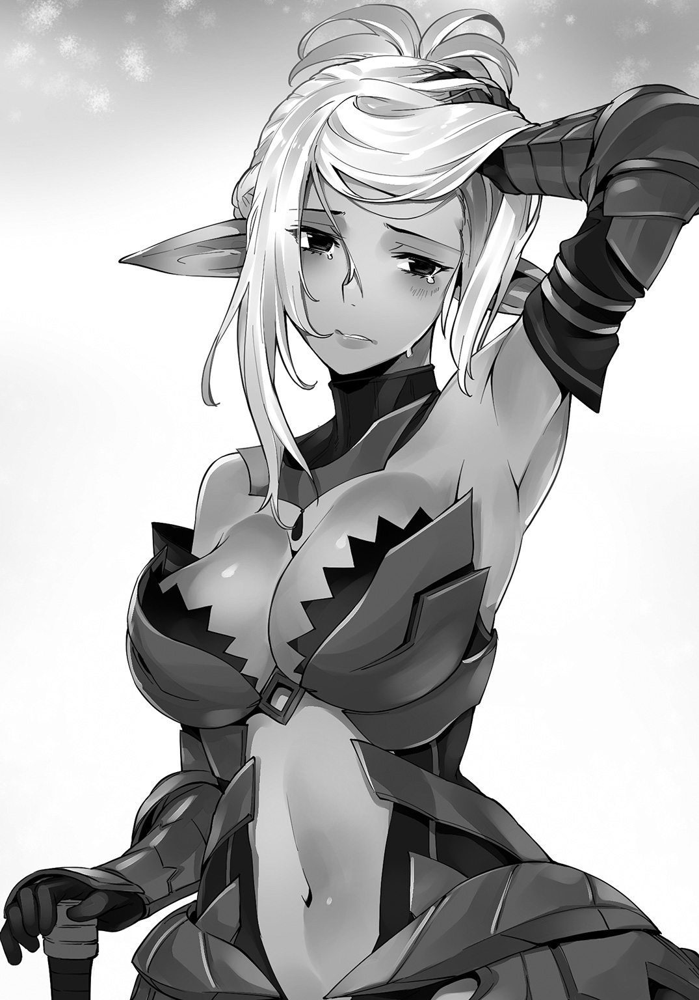
あ、気にしてる！ ますます友達になれそう！
「お前たちの中に『異世界から来た勇者』とやらはいるか!? いるなら名乗り出ろ！」
私とミレアさんが同時に鈴木へと目をやった。
未だ背中に隠れている鈴木は、ひょこりと顔だけ覗かせ、ニヤリとした不敵な笑みを口元に刷く。
「くっくっくっ。この俺様が異世界より召喚されし勇者こと、ネゴシエーター鈴木だ」
「そうか......」
サルベリアは端的にそう応じると片手を上げた。すると後方に控えていた暗黒騎士が、一糸乱れぬ動きで横陣を形成。そのままサルベリアの命令を待つ。
「お前に恨みはないが、ここで死んでもらう」
「え、ちょっと待って！ 俺は単なる影武者だから！ 本物はコイツだよ！ アニっていうんだ!!」
うおぉい!?
必死にすり替わろうとしている鈴木に罵詈雑言を浴びせようと口を開きかけた時だ。サルベリアが上げていた腕を振り下ろし、朗々たる声で号令した。
「突撃！」
『おおぉぉぉっ!!』
地鳴りのような音を響かせ、暗黒騎士団が一気呵成に突っ込んでくる。私はギョッと目を見開き、鈴木を半ば怒鳴りつける。
「ちょっと鈴木、どうすんのよ!? あんたネゴシエーターなんでしょ!? 何とか説得しなさいよ!!」
「ムチャ言うなよな。問答無用って感じだろ？ 聞く耳持たない相手じゃ、交渉なんて成立しないから」
「そんじゃどうするのよ～!!」
私の悲鳴に応えるように、逸早く動いたのはミレアさんだった。ミレアさんは魔法の杖を横に倒して構えると、魔力を高めつつ指示を飛ばす。
「暗黒騎士団の要は魔騎士サルベリアです！ わたしが敵の前衛に爆裂魔法エクスージョを放ちますから、アニさんはその混乱に乗じて、『忍び足』でサルベリアに近づいてください！ 彼女を押さえてしまえば、交渉の余地もあります!!」
「そんなの無理ですよぉ！」
「無理でも何でも、やらなきゃここで全滅しますよ!?」
「ヒィィッ！」
私は暗黒騎士団に向き直るが、一騎当千の兵で構成されるあの軍勢を突破し、さらには化け物じみた戦闘力を誇る四天王を押さえるなんて、到底できそうにない。
（あぁ、私ここで死ぬんだ！）
短い人生だったなぁ。もし転生とかあるなら、今度は日本みたいな平和な世界に生を受けたいな......。
そんなことを考えていると、ふと、ネカフェで視聴していた、タヌキ型ロボットが出てくるアニメのことが思い浮かんだ。もしこれが現実などではなくアニメだったなら、あの呪文めいた台詞を吐けば、便利道具が全てを解決してくれるのに。
私は自暴自棄になり、お腹の底から叫ぶ。
「助けてよドラヱも～ん!!」
その刹那、奇妙なことが起こった。なぜだかグーの形に丸められた手が私の肩にポンと置かれたのだ。
私が振り返ると、その台詞を待ってましたとばかりに、いい表情を浮かべた鈴木とはたと目が合う。
鈴木は腰に提げていた盗賊の袋を、わざわざお腹の前へと持ってきた。そして、手を突っ込んでゴソゴソと何かを探ったかと思いきや、アニメで聞いた効果音と共に、あるものを取り出してみせる。
「たらららっららーん♪ や～ま～だ～」
３話設定とはちょーっと違うんだよなぁ。
「ふぐぅ......ひっく。誰かぁ......誰かいませんかぁ？ 助けてよぅ。ママぁ......」
上下左右の感覚さえわからなくなるような暗闇の中で、僕は涙と鼻水を垂らしながら、出口を求めて彷徨い歩く。
いったいなぜこんなことになってしまったのだろう。最後にある記憶では、僕は確か、塾帰りの本屋で立ち読みをしていたはず。『ぼっちは暇だから勉強はかどる』という本に熱中していると、不意に背後に気配を感じ、袋でも被せられたように目の前が真っ黒になったんだ。
そのとき、こんな声を聞いたような気がする――
「こいつちゃんと授業のノート取ってたかな......？」
あ、コレ鈴木くんの仕業だ！ 僕を拉致って心を痛めるよりも、ノートのこと心配するって鈴木くんしかいない！
犯人はわかったけれど、目的は何だろう？ それに、ここはいったい......？
僕が頭を捻っていると、不意に暗闇の中から誰かの手が伸びてきて、胸倉をむんずと摑まれた。
「ひぇっ!?」
情けない悲鳴を上げる間もあらばこそ、僕はその腕に引っ張られ、目の眩む光の世界へと放り出された。それと同時に聞こえる、特徴的なダミ声。
「たらららっららーん♪ や～ま～だ～」
えっ、その声はドラ......いや鈴木くん！ 似せようという努力は見られるけど、全く似てない鈴木くんだ！
ようやく光に目が慣れてきた。瞼をゆっくりと開いていくと、まず最初に目に飛び込んできたのは、相変わらず底意地の悪そうな鈴木くんの顔。
「鈴木くん。いったい何が......？」
そう問いかけつつ、鈴木くんが見据えている方角に、ふと視線をやってみた。すると――
『オオオォォォッ！』
漆黒の鎧に身を包んだむさ苦しい男たちが、鬼のような形相でこちらに突っ込んでくるのが見て取れた。彼らの手には本物と思しき長剣が握られており、首を刈り取ってやろうとばかりの、明らかな殺気が迸っている。
「ぎゃああ！ 鈴木くん、これいったいどういう状況なの!? いきなり死亡フラグが立ってそうなんだけど!?」
「まぁまぁ。とりあえずこれを付けろ」
そう言うや否や、鈴木くんは半ば強引に、僕の腕に何かを装着させる。それは何だか妖しげな石がはめ込まれた、呪いのアイテムっぽい腕輪だ。
「えっ!? これ何!?」
「魔王の城から盗み出した『魔閃の腕輪』だ。アニの話では、それを装備すれば魔弾を撃てるようになるらしい」
魔王の城？
魔弾？
そういえば、鈴木くんは僕を押しのけて異世界へと旅立っていったはず。ということは、ここは女神様が話していたアースノウ......？
その疑問をぶつけるより先に、鈴木くんが端的に言った。
「女神が言っていたことが本当なら、お前の魔力って魔王並みなんだろ？ そのアイテム使って、暗黒騎士団を吹き飛ばせ」
「はいぃ!? ちょっと待ってどういうこと!? 僕にもわかるように説明してよ!!」
当然の要求をする僕に対し、鈴木くんはクワッと目を見開き、大喝一声した。
「ガタガタぬかさず俺の指示通りにしろやぁ！ それとも暗黒騎士団に細切れにされて、魚の餌にでもされたいかゴラァ!!」
「僕は何も悪いことしてないのにそんな二択しか残されてないの!? というか、そもそもこの腕輪、いったいどうやって使うの!?」
「そんなん気合いで何とかしろやぁ！ ぼっちで中二病のお前なら、すごい技を使うイメージトレーニングやって、一人でニヤニヤと気持ち悪い笑み浮かべたりしとるだろうがぁ！ 日頃の恥ずかしい特訓の成果を見せてみろやぁ!!」
「偏見がヒドイ！」
色々と言いたいことはあるものの、暗黒騎士団はもう目と鼻の先にまで迫っていた。僕は恐怖の声を上げる。
「ひいっ、何とかしないと！ でも、すごい技のイメージなんて、僕にはこれっぽっちも――」
僕はバッとマントを翻すように腕を振った。片膝を曲げ、横にスライドするようにして身体を沈めていく。広げた右手は顔の前へ。まるで仮面を外そうとしているかのようなポーズを取りつつ、僕は朗々と述べる。
「我が呼びかけに応えよ、煉獄の王ザフトバロフ！ 汝の産声に災厄はひれ伏し、汝の影に死は寄り添う！ 血の盟約に従い、愚者をなぎ払う力を示せ！ 煉炎滅徒煌――――ッ!!」
僕の咆哮に応えるように、腕輪が淡く光った。と、次の瞬間。
ちゅどおおぉんっ!!
耳を聾する轟音と共に、爆炎が暗黒騎士団を羽毛の如く吹き飛ばす。
「うえぇぇぇぇっ!? ......あ、でもちょっと待って。僕の設定では地面が割れて、中から炎が噴き出す感じなんだけどなぁ」
「お前、意外と余裕あるね!?」
立ち昇る炎の壁を突き破り、生き残った暗黒騎士団が突貫してきた。その目は憤怒に血走り、口からは呪詛の如き怒号が迸る。
鈴木くんがチッと舌打ちする。
「この火力を前にしても臆さず突っ込んでくるか。魔王軍最強の実働部隊ってのはダテじゃないな。おい山田、続けて放てぇ！」
「でも、こんなの撃っていいの!? これって人殺しじゃないの!?」
「いいから焼き払え！ どうした！ それでも世界で最も邪悪な一族の末裔か!?」
「人聞きが悪い！ 僕は巨○兵じゃないよ!?」
「いいから死にたくなかったらブッ放せぇ!!」
「ひぃーっ、ごめんなさいいぃぃ！ 煉炎滅徒煌！」
どかーん。
「煉炎滅徒煌！」
ぼがーん。
「煉炎滅徒煌ぁぁぁぁっ！」
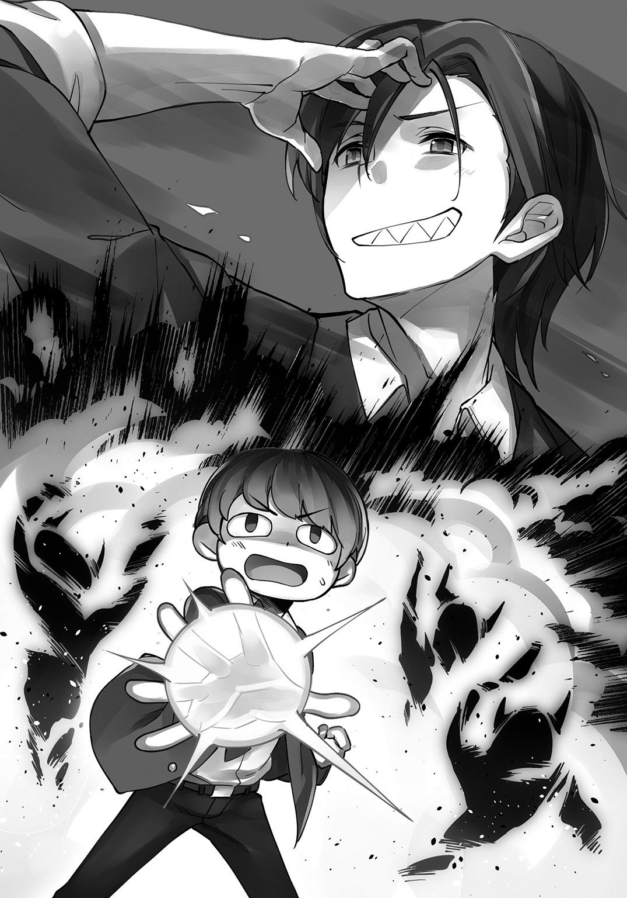
４話いいなぁ......。
焦げ臭い刺激臭が鼻を衝く焼け野原を、僕はヨロヨロと覚束ない足取りで進んだ。煉炎滅徒煌をやたらめったら撃ったため、辺りは煙が立ちこめ、ほとんど視界がきかない。すぐ傍にいたはずの鈴木くんともいつしかはぐれてしまい、心細いことこの上ない。
「す、鈴木くーん。どこにいるのぉ？ いたら返事をしてよぉ......」
僕はおっかなびっくり声を上げた。諦めて退却してくれたのか、暗黒騎士団の雄叫びは聞こえなくなって久しいが、もしかしたら近くに身を潜め、反撃のチャンスをうかがっている者がいるかもしれないのだ。
びくびくしながら辺りを見渡していると、煙の向こうで物音がし、人影がゆらりと立ち上がるのが見て取れた。
「ひぃ！ そ、そこにいるのは誰!?」
後ずさりしながらも目を凝らしてみると、その人物は満身創痍らしく、剣を杖代わりにして何とか立っているといった様子だ。どうやら暗黒騎士団の一人らしいが、よく見れば若い女の人である。ただでさえ覆い隠す面積の少ない鎧が、煉炎滅徒煌のせいか所々はだけるように破損していて、何というかすごくエロイ感じになっている。
（大変だ怪我してる！ こういう時は敵とか味方とか関係ないよね！）
早く駆け寄って肩を貸して、他意なく密着したり、自然と腰に手を回したりしないと！
「そこを動かないで！ 今この僕が――」
「オラどけ山田ぁっ！」
どーん!!
背後から唐突に弾き飛ばされた僕は、地面に勢いよく転がった。口の中に侵入してきた砂利をぺっぺっと吐き出し、僕を突き飛ばした張本人であろう鈴木くんの姿を捜す。すると、エロい女性の前に仁王立ちしている鈴木くんが、くくくと笑み崩れているのが目に映った。
「いいザマだなサルベリア。魔王軍の誇る暗黒騎士団も、この俺の召喚獣『山田』には手も足も出んか」
えっ!? 僕って召喚獣扱いなの!?
サルベリアさんというらしい女性は、クッと悔しげに歯嚙みしたあと、鈴木くんを睨み返した。
「貴様と交わす言葉などない！ ひと思いに殺すがいい！」
「ほう。さすが四天王の一角、魔騎士サルベリアだ。惨めな命乞いなどするつもりはないか。それでは――」
鈴木くんがスッと動いた。死を覚悟したか、サルベリアさんが身体を強張らせ、瞼を固く閉じる。
惨劇を予感した僕は止めに入ろうと腰を浮かしかけた。しかし、次の瞬間――
むっちゅうううぅぅぅ。
鈴木くんが、目を閉じて無防備な状態のサルベリアさんの唇を奪う。
「む!? んぐぐっ!?」
サルベリアさんがギョッとしたように瞼を開け、必死に鈴木くんを突き飛ばそうとする。しかしヨロヨロのサルベリアさんには余力がないらしく、鈴木くんを振りほどけない。その間にも鈴木くんの執拗なディープキスは続く。
くちゅ、くちゅ、くちゅ。ちゅううぅぅ。
「ふぅっ！ うんっ！ うぅんっ！」
サルベリアさんが羞恥に瞳を潤ませながら、苦しげな吐息を洩らす。
その様はエロい。
「んっ！ んんっ！ ぁんんっ！」
抵抗のため身じろぎするが、動く度に豊満なおっぱいが揺れ、艶めかしく腰が反り返る。
その様もエロい。
とにかくエロい！
思わずガン見していると、僕の横を一陣の疾風が駆け抜けた。いったい何かと思いきや、盗賊っぽい格好をした女の子が、ものすごい勢いで鈴木くんの方へと突進していく。そして、
「なにしとんじゃ鈴木――――――っ!!」
どげしぃっ!!
鈴木くんに、強烈な跳び蹴りをかました。ボウリングのピンのように弾け飛び、地面にバタリと倒れ込む鈴木くん。
（――殺ったか!?）
僕は思わず小さなガッツポーズをしたけれど、鈴木くんはムクリと、何事もなかったかのように起き上がった。そして、追撃から逃れるためか、すぐさま弁解する。
「待てアニ！ 誤解だ！ ここで死んでもらっちゃ困るから、口移しで薬草を飲ませてただけだ！ ほら！」
鈴木くんは口に指を突っ込むと、中から唾液まみれの緑の物体を取り出してみせる。
「衝撃でちょっと飲み込んじゃったから、今のダメージも回復！」
アニさんという盗賊の女の子が、ひっと小さく悲鳴を上げた。
「ばっちいことしないでよ！ というか、自力で立ち上がってみせたんだから、薬草食べられるくらいの体力は明らかに残ってたでしょ!? 口移しする意味ないじゃない！」
「いいじゃん減るもんじゃないんだし！ 役得だよ！」
「このカスがぁっ！ 口の中の薬草を使い果たすまでブン殴ってやるわ!!」
「ひい――――――っ!!」
鈴木くんが追い回されるのをポカンと眺めていると、サルベリアさんへと近づいていく人影にふと気づいた。魔法使いの装束を着た真面目そうなその女の子は、唇を奪われてへたり込んでいるサルベリアさんの眼前に立つと、ニッコリと微笑んで話しかける。
「女狐――あら言い間違えました。サルベリアさん」
文字数すら合ってないのに堂々と！
たぶん怒らせたらいけないタイプの人だ！ 笑顔だけど変なオーラ出てるし！ サルベリアさんもちょっと怯んでるし！
「だ、誰だ貴様は？」
「初めまして。わたしはミレアといいます。ところで、鈴木さんがどうしてあなたの命を助けたかわかりますか？」
「そんなこと知るわけがないだろう！ 情けをかけるくらいなら殺せ！」
「そういうわけにはいきません。あなたには魔王ギルガランとの会談の場を設けてもらわなければならないですから」
サルベリアさんが訝しげに眉をひそめた。
ミレアさんは教え諭すように、静かに続ける。
「鈴木さんは魔王との和平交渉を望んでいます。一週間後、『タガマ平原』に来るよう魔王に伝えてください」
「なっ......!? わ、和平交渉だと!?」
「話し合う価値はあると思いますよ？ あなたも鈴木さんの力を目の当たりにしたでしょう？ こちらには魔王城に易々と侵入する大盗賊と、魔王にも匹敵する魔力を有する召喚獣がいるんです。人類はもはや滅びを待つだけの弱者ではありません。互いの種族の安寧を願うなら、交渉のテーブルに着くべきでは？」
「くっ......!?」
......あれ!? 本当に召喚獣扱いされてる！
僕は不満に思いつつも、鈴木くんの手腕に脱帽した。魔王と和平交渉という、荒唐無稽な目的を持って異世界に旅立っていったけれど、どうやらそれが現実味を帯びてきているらしい。しかも――
（こんな可愛い子たちに囲まれて冒険してるのかぁ）
アニさんは貧乳で少しがさつなところがあるみたいだけれど、快活でとってもキュートだし、ミレアさんはしっかり者の委員長といった感じで、守ってあげたくなるような美人だ。サルベリアさんは敵みたいだけれど、あんなに色っぽいおねーさんなら、少しくらい攻撃されてみたいなとも思う。
僕が夢に描いていた異世界ライフが、ここには確かにあった。僕は羨望の眼差しで、アニさんにボコボコに殴られている鈴木くんを見つめていたけれど、やがてはたと気づく。
（そっか！ 僕もこうしてアースノウにやって来たんだし、鈴木くんのパーティーにこのまま参加して、ハーレムを満喫すればいいんだ！）
勇者という立ち位置じゃないかもしれないけれど、あの輪に入って時折エッチなイベントとかを甘受できるのならば、この際なんだっていい。
いいや。
露天風呂に入ったりする機会を鑑みれば、むしろ召喚獣という立場は適しているのかもしれない......。
ゴクリと唾を飲み込み、鈴木くんのもとへと歩み寄ろうとした時だ。僕の足が急にずしりと重くなる。
何だろうと思い視線を落とすと、土に半ば埋まるような形となっている暗黒騎士が、僕の足首をがっしりと摑んでいた。血塗れで息も絶え絶えなその騎士は、恨めしげな声で僕の名を呼ぶ。
「お～の～れ～。や～ま～だ～」
「ひぃ！ だ、大丈夫ですか!? 血がいっぱい出てるし、片腕取れてますよ!?」
「おまえのぉ、せいだろうがぁ......っ」
「もしかしたらって思ってたけど、やっぱり！ でも、あれはその......そう！ 世界平和のために仕方なく！」
「仲間を、殺しておいて......平和など、笑わせ......ゴハァ！」
騎士が大量の血を吐いた。僕は悲鳴を上げることすらできず硬直する。
最期の力を振り絞るようにして、騎士が凄絶な笑みを浮かべてみせた。血反吐でぬらぬらと濡れる口を開き、呪詛のように宣告する。
「地獄で......待っているぞ......」
騎士はそのまま、ガクッと事切れた。
僕がその場で呆然と立ち尽くしていると、濃霧のように辺りの視界を奪っていた煙が晴れてきた。
やがて目に飛び込んできた光景に僕は息を呑む。暗黒騎士団の雄叫びが聞こえなくなったのは、退却したからだろうなんて考えていたけれど、とんでもなかった。暗黒騎士たちは呻き声一つ上げることのない骸と化し、地面のいたるところに転がっているのだ。僕は自分が引き起こしたその地獄絵図に慄然となる。
「う......あぅぅ......」
頭の吹き飛んだ死体がすぐ傍に転がっていた。
「ふぐ......ひぐぅ......」
むせるような血と糞尿の臭い。
「お......おぉぉ......」
遠くに立ち尽くす人影は生存者などではない。人体のパーツが折り重なり、肉塊のオブジェとして屹立しているのだ。
「ち、違う......違うんだ！ これは何かの間違いなんだよぉ！」
僕は必死にかぶりを振ると、がむしゃらに駆け出した。
こんなことになるとは思ってもみなかったんだ！
こんなことするつもりはなかったんだよぉ！
......誰か助けて。
お願いだよ！
自分がどこに向かっているのかもわからぬまま、僕は咆哮するのだった――。
「うおおおぉ――――――――んっ!!」
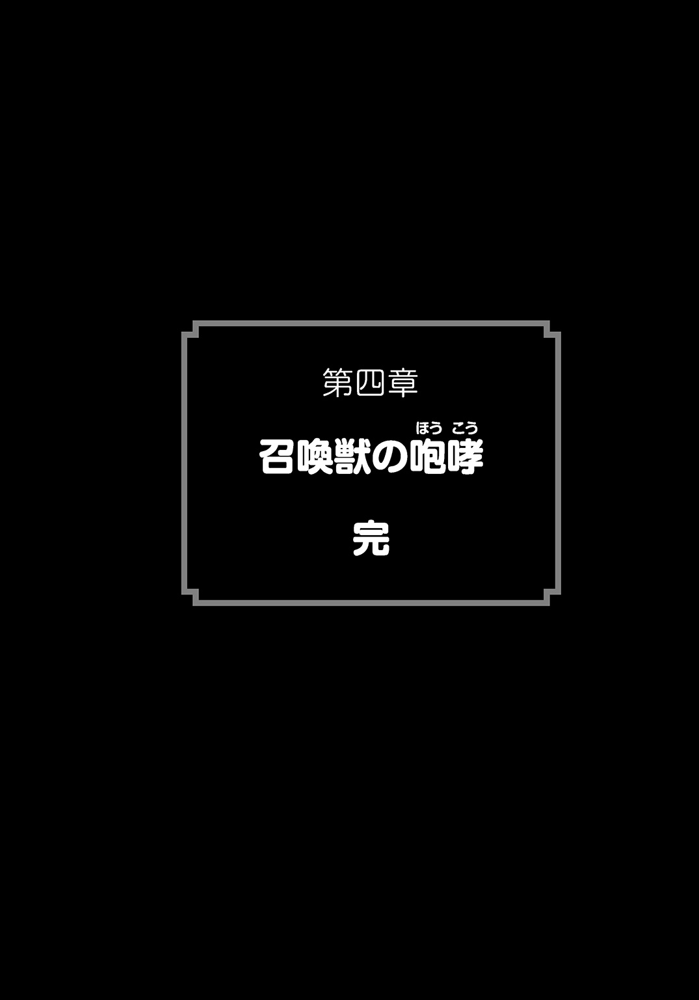
【第五章】アースノウの平和のために！
１話和平交渉
のどかに舞う蝶々の姿を眺めているうちに、魔法の杖を握り締める手がゆっくりと解けていった。どうやら思っていた以上に緊張していたらしく、掌にはじんわりと汗が滲んでいる。
ここは女神アナスレイが降臨したとされるタガマ平原。普段は草花が風にそよいでいるだけの、とても牧歌的な場所なのだが、今日ばかりは様相が違い空気が張り詰めている。
（当然よね。これから魔王との直接交渉が待ってるんだもの......）
冒険者稼業から足を洗い、ギルドで働くようになってはや三年。人生何があるかわからないとは常々思っていたけれど、まさか魔王と和平交渉に臨む日が来るなんて。
わたしは隣に立ち並ぶ面々をチラリと窺ってみた。
威風堂々といった感じに両腕を組む鈴木さん。何だかソワソワしながら横にいる人物を盗み見ているアニさん。彼女の視線の先にいる、この平原を渡る風のように涼やかな眼差しをしているルーシュ王子。
（まさかルーシュ王子まで呼ぶなんて。鈴木さん、いったい何を考えてるんだろう......）
サルベリアさんに魔王との会談の約束を取りつけたあと、鈴木さんが真っ先に行ったことは、ルーシュ王子と連絡を取ることだった。グロドの洞窟でアニさんとルーシュ王子を引き合わせた際、何らかの密約が交わされたのかもしれないが、この場に呼ぶのはいかがなものかと思う。せっかく鈴木さんがセッティングした機会だというのに、人類の希望たるルーシュ王子が同席したとなれば、その功績は全て王子のものになってしまうのではないだろうか。
（鈴木さん、名声にはあまり興味ないのかな。でもまあ、わたしは鈴木さんのそういうところも......）
鈴木さんの横顔をこっそり見つめていたわたしは、すぐさまブンブンと頭を振った。
いけない、いけない。
今は邪念を捨て、状況を客観的に見つめることで、少しでも鈴木さんの交渉をバックアップしなければ。
そう考えたわたしは、今度は肩越しに背後を窺ってみた。わたしたちの後方に控えるのは、アニさんの盗賊団と、ルーシュ王子に忠誠を誓う白夜聖騎士団。ちょうど半数ずつといった割合であり、総数は千人にも及ぶ軍勢である。
（交渉が目的だったのに、こんなに揃えちゃっていいのかしら？ 魔王を刺激することにもなりかねないけど）
特に不可解なのは、鈴木さんはこの一週間も精力的に、アニ盗賊団の勧誘活動を行っていたということだ。サルベリア率いる暗黒騎士団を壊滅させたということで、入団希望者は膨れ上がったし、かなり精強な冒険者も加入させることができた。平時ならそれは喜ぶべきことなのかもしれないが、和平交渉を直前に控えた時期ということを考えれば、交渉の道筋を立てることに注力すべきだったようにも思う。
（でも鈴木さんは交渉のプロフェッショナル、ネゴシエーターだっていうし。きっとわたしの想像など及びもつかない考えを持ってるに違いないわ）
そんなことを考えていると、なだらかな勾配になっている平原の地平線上に、黒点がポツリと現れた。それは徐々に数を増していき、やがて緩やかに進むマグマのように、わたしたちの方へと流れてくる。
「ま、魔王軍だ......」
誰かが発したその呟きによって、一気に緊張が高まった。動揺が麻疹のように伝染していくのをひしひしと感じつつも、わたしは口の中で遠見の呪文を唱え、魔王軍の陣容を窺う。
魔王軍の右翼を固める漆黒の騎士たちは、言わずと知れた暗黒騎士団だ。サルベリアをメッセンジャーとして送還した際、彼女の部下の亡骸もそっくり引き渡しているので、魔王城で全員復活したのだろう。人道的な対応を取ることでサルベリアに貸しを作る形となったので、和平が成るか否かに拘わらず、彼女もこの会談を実現するために粉骨砕身で魔王に働きかけたに違いない。実際、暗黒騎士団の先頭で馬を駆るサルベリアは、苦虫を嚙み潰したような表情でこちらを見据えている。
魔王軍の左翼を担うのは、フードを目深に被った魔法使いの一団だ。四天王の一人、大魔導師パピロスの率いる暗黒魔術士団である。普段は魔王城の警備につき、攻城戦など大規模な戦闘の時にだけ魔法による援護を行うため出撃するエリート集団だが、この場に出てきたというのは何とも意味深だ。暗黒騎士団を壊滅させた魔弾に対処するためか、はたまたこの和平交渉に真摯に向き合うため、知恵者であるパピロスを帯同させたのか。そのパピロスはどこか心ここにあらずの体で、わたしたちというより、なぜかルーシュ王子を注視している。
四天王の残り二人の姿は見えない。伏兵として潜めるような地形ではないし、この交渉自体が陽動である可能性も考え、要衝である支配地域に睨みを利かせているのだろう。
そして、魔王軍の中央。オークたちが担ぐ禍々しい輿に、悠然とした様子で座している人物は――
（......魔王ギルガラン！）
わたしはうなじがチリチリと総毛立つのを感じ、ぶるりと身震いした。
頭部に生えているのは、不気味に波打つ立派な二本の角。冷厳とした双眸は血に濡れたように真っ赤で、見る者に言い知れない畏怖を与えている。マントで全身を包んでいるが、その膨大な魔力は隠しきれず、ここまでその波濤が押し寄せてくるようだ。
こんなとんでもない相手と和平を結ぶなんて、本当に可能なのだろうか？
不意に湧き上がるそんな疑念を、わたしはすぐさま押し込め、自分に言い聞かせる。
（きっと大丈夫。鈴木さんが突破口を開いてくれる。わたしは鈴木さんを信じればいいのよ！）
魔王軍がやがて歩みを止め、窪地を挟んでわたしたちと対峙した。一触即発の空気が流れるなか、口火を切ったのは魔王ギルガランだ。
ギルガランは聞く者の心臓を凍てつかせるような、底冷えのする声音で告げる。
「異世界の勇者、ネゴシエーター鈴木とやら。聞くところによれば、我ら魔族と和平を結びたいと言っているらしいが、それは本当か？」
鈴木さんに近しい者や、話を持ち帰ったサルベリアさんにとっては周知の事実であるが、この場には初耳の者も多くいる。特にルーシュ王子と、その麾下にある白夜聖騎士団は、寝耳に水だとばかりにざわめく。
物問いたげな視線を送るルーシュ王子には構わず、鈴木さんが静かに頷いた。
「ああ、その通りだ。こちらには和平を交わす準備がある。そっちの返答は？」
ギルガランは鈴木さんの言葉にピクリと片眉を上げた。そのまましばし無言だったが、やがてククッと冷笑を洩らす。
「クハハッ。このような冗談を聞けるとは、我が直々に足を運んだ甲斐もあったというものだ。なあ、サルベリアよ？」
急に水を向けられたサルベリアは、恐縮したように頭を下げる。が、すぐさま先日の惨劇を思い返したらしく、僅かな躊躇いを滲ませつつギルガランへと進言した。
「恐れながら申し上げます。我ら四天王は、ギルガラン様の御身をお守りすることこそが使命。人間風情ではどう足搔いてもギルガラン様に傷一つつけられまいと高を括っておりましたが、状況が変わりました。ここは人間との和平も検討に値すると――」
「黙れ」
ギルガランが斬り捨てるような冷酷な眼差しで、サルベリアをぎょろりと睨み据えた。サルベリアは喉の奥で、ヒッと悲鳴を上げる。
「サルベリアよ。鈴木は我と同等の魔力を持つようだと、そう報告してきたな？ 何とも不可解なことだ。貴様のような小物に、我の力が推し量れるとは思えぬがな」
「そ、それは、」
「よかろう。ならば我が放つ魔弾が、鈴木に受けた魔弾と同レベルか、その身で味わってみるがいい」
そう言うと、ギルガランはすっと腕を持ち上げ、掌をサルベリアの方へと向ける。
「なっ!? ギルガラン様!?」
「消し炭になってくれるなよ？ 生き返らせることもままならんからな」
ギルガランの魔力が高まり、周囲の空間が陽炎が立ち昇るかのようにぐにゃりと曲がる。
（そんな！ 仲間に対して攻撃を!?）
わたしは咄嗟に爆裂魔法エクスージョを唱えようと身構えるが、ここが和平交渉の場だということに思い至り、ギリッと歯嚙みした。もしも魔王を攻撃しようものなら、和平の道は永遠に絶たれてしまう。
（男社会で苦労する者同士、サルベリアさんとは話も合いそうだったのに！）
誰か彼女を助けてあげて。
お願い、誰か！
「......クックックックッ」
わたしの願いを聞き届けたかのように、不敵で不遜な笑い声が不意に響き渡った。ギルガランがそれに反応し、今まさに放たれようとしていた魔弾を霧散させる。
（鈴木さん！）
わたしは笑い声の主である鈴木さんを、熱のこもった眼差しで見つめる。やっぱり鈴木さんはステキな人だ。自分が矢面に立つことでサルベリアさんを救ったに違いない。
（カッコイイ......）
わたしのときめきとは正反対の感情を抱いたらしいギルガランが、眉間に微かな皺を寄せる。
「......何がおかしい、鈴木」
「いやなに、全く同感だと思ってな。先日の戦闘だけでこの俺の実力を測り切れたと思われては困る。......おい、ゼント！ 用意しろ！」
「へい！」
鈴木さんの合図を受けたゼントさんが、待ってましたとばかりに進み出る。彼が手にしている小さな箱は、事前に鈴木さんから教えられた情報によると、プロジェクターと呼ばれる異世界アイテムだ。日本に戻ったとき、秋葉原という街で購入したらしい。
魔族と人類、どちら側からも見えやすい場所にプロジェクターを設置したゼントは、準備完了とばかりにグッと親指を立てた。それを受けた鈴木さんが、わたしに目配せする。
わたしは一つ頷くと、打ち合わせていた通りに行動した。魔法の杖を掲げ、魔法を発動する。
「ミストラ！」
ミストラとは濃密な霧を発生させることによって、敵の攻撃を回避しやすくする魔法だ。
攻撃魔法ではないとはいえ、わたしが呪文を唱えたことによって緊張が走るが、すぐさまそれは困惑に変わった。わたしが霧を発生させたのは魔王軍の陣地ではなく、プロジェクターが設置された周辺。そこにはプロジェクター操作を任されているゼントさんしかいない。
鈴木さんが口の端を吊り上げ、昂然と告げた。
「世界の覇権を争うという時に、個の力を自慢しても何の意味もない。戦局を優勢に進めるためには、どれだけの強大な兵力を有するかが鍵だ。俺は公言している通り異世界の住人だし、俺の世界の武力を紹介しよう。ゼント、始めろ！」
鈴木さんの号令に応え、ゼントさんがプロジェクターのスイッチを入れる。するとミストラによって生じた霧のスクリーンに、巨大な映像が映し出された。そこに墨痕鮮やかに描かれる文字。
『それゆけ自衛隊！』
鈴木さんが嗜虐的に、スゥッと目を細めて言う。
「これが俺の命令一つで自在に動く屈強な兵力。俺の真の力だ。魔弾だか四天王だか知らんが、お前の有する武力とどちらが優れているか、その目で確かめるといい」
スクリーンに映し出される、キュラキュラという音を立てながら進む鋼鉄の箱。前もって映像は見ているし、興味深かったのでその詳細についても勉強させてもらったが、これは『戦車』と呼ばれる異世界の兵器だ。
横一列に並んだ戦車が一斉に火を噴いた。轟音と共に爆ぜる的。その破壊力は爆裂魔法であるエクスージョと同等か、それ以上だ。
「どうだ、すごいだろう？ ほら、またチュドーンって！ こんなん当たったら痛いなんてもんじゃ済まないぞ？ 粉々だぞ？」
鈴木さんが嬉々とした様子で説明する間に、場面が切り替わった。次に映し出されたのは、空を高速飛翔する鉄塊。こちらは『戦闘機』と呼ばれる天空の覇者だ。
「ひょう！ カッコイイぜぇ！ 見たかよ、ギュイーンって！ ババババッて！ こんなんが空を飛んできたら、お前らオシッコちびるしかないだろう!? な!? な!?」
鈴木さんは勝ち誇った様子で魔王軍に同意を求めた。しかし、魔王軍はというと――
『..................』
映像の迫力に目を奪われている風ではあるものの、自衛隊の実力にはどうもピンと来ていない様子で、仲間と顔を見合わせたりしている。
「何だよお前ら、ノリ悪いな！」
鈴木さんが不満げに憤る横で、わたしは愕然となった。
（......鈴木さん、説明下手すぎますね!?）
異世界の兵力を背景に和平を迫る。
それは理に適った戦略だとは思うが、有する兵力がいかに強大かをきちんと示してこそ効果がある。鈴木さんは交渉のプロだというし、何らかの意図があってわざと拙い説明をしているのだろうと思い見守っていたが、どうやらこれはガチである。
わたしはプンプン怒っている鈴木さんに、そっと耳打ちした。
「あのぉ。鈴木さん......」
「あんっ。みーちゃん、俺は耳弱いのにぃ」
「すみません知ったこっちゃないです！ あのですね、自衛隊が駆使する兵器の威力をもっと詳しく説明しないと、魔王軍も脅威に感じてはくれないと思うんですよ。その辺もう少し何とかなりませんか？」
「えぇー。面倒くさい奴らだなぁ」
鈴木さんは口を尖らせながらも、わたしの意見を汲んでくれたらしい。少し考え込むような間を挟んだのち、アニさんの方をちらりと見やる。
「おい、アニ。お前が代わりに説明しろ」
「はあ!?」
アニさんは素っ頓狂な声を上げると、慌てたようにブンブンと手を振った。
「ムリムリ！ 異世界のことろくに知らないのに、私にそんなことできるわけないでしょ!?」
「心配すんなってぇ。忘れたのか？ アニには『鑑定眼』のスキルがあるだろ？ スシヨーの時みたいに、適当に喋ってりゃ自衛隊のスゴさも伝わるだろ」
スシヨーって何だろう？ 二人だけでどっか行ったのかな？
わたしの胸がもやもやとするのとは対照的に、アニさんは得心がいったのか、「あ、そっか！」と弾んだ声を上げる。
「オラ行け、アニ！ お前がただのグルメリポーターじゃないことを証明してみせろぉ！」
「いいわ！ アースノウの平和のために、この私が一肌脱いでやろうじゃない！ スキル発動、『鑑定眼』！」
アニさんがカッと目を見開き、映像が映し出されている辺りをガン見した。やがてアニさんは身を乗り出し、興奮した口調で言う。
「はぅあっ！ 自衛隊の紹介映像を映し出しているあの製品は、ＳＥＮＹの最新型ポータブル超短焦点プロジェクター、『ＲＭ―Ｍ２』じゃない！」
力強く発せられた言葉だったが、わたしは思わず「は？」と、当惑の声を洩らす。
アニさんは勢い込んで続けた。
「『ＲＭ―Ｍ２』の最大のウリは、何と言っても焦点距離の短さよ！ 通常のプロジェクターだと、80型サイズの映像を投影するためには、スクリーンとの距離を数メートルは取らなければならないわ！ でも『ＲＭ―Ｍ２』だと、スクリーンからたった三十センチ離すだけで、大画面に対応することができるのよぉ!!」
ゼントさんが余計なアドリブを入れ、プロジェクターをほんのちょっとだけ霧のスクリーンから離した。それに伴い巨大化する画面。
『おおぉぉっ!?』
魔族だけでなく、人類側からもどよめきが起こる。
「そのメリットを利用すれば、近くの床に映像を投影することも可能！」
ゼントさんがプロジェクターを操作し、スクリーンを霧から地面へと切り替える。海原の代わりに草原を進む、自衛隊の立派な艦船。
「さらには、プロジェクター片手に、自分の身体に映像を映すなんてお茶目な使い方も！」
プロジェクターを手にしたゼントさんが、マッチョな人がよく取るポージングを始めた。顔の横で両腕を曲げるダブルバイセプスで、上腕二頭筋や胸筋をアピール。そのまま両腕を下げていき、腰に手をやるようなラットスプレッドに移ったかと思いきや、手にしているプロジェクターを操作し――
「男のロマン！」
ゼントさんの股間に映し出された戦車が、その巨大な砲塔からちゅどーんと火を噴く。
どっと笑いが起きた。やんややんやの喝采が上がる。
「こんなにステキな商品がぁ、今なら何と七万九千八百円！ 泣く子はいないお手軽価格の、七万九千八百円なのよ――――――っ!!」
アニさんの咆哮に応じる形で、魔術士団の一人が手を挙げた。
「オレ、それ欲しい！ 一個譲ってくれ！」
負けじと白夜聖騎士団からも声がかかった。
「俺は二個買うぞ！ ところで円ってどこの国の単位だ!?」
そこからは堰を切ったように注文が殺到した。品切れを心配してか、至る所で怒号が飛び交い、殴り合いの喧嘩が勃発する。
「うわ、ちょっとやりすぎちゃったかなぁ......」
独白めいた呟きを零しつつも、まるで自分を取り合って喧嘩が起こったかのような気分に浸っているらしく、アニさんはどこかご満悦の表情でポリポリと頭を搔いた。
そんなアニさんに、鈴木さんが至極もっともなツッコミを入れる。
「お前なにやってんの!? 誰が実演販売やれっつったのさ!?」
アニさんはハッとなったあと、顔を赤くしながらも反論した。
「し、仕方ないじゃない！ 実物があるならまだしも、映像だけじゃ異世界の武器のこと鑑定できなかったのよ！」
「だからって何で深夜の通販番組みたいなことやってんの!? お前ジャ○ネットの販売員の座でも狙ってんの!?」
「わけわかんないこと言わないでよ！ 元はと言えば鈴木のせいでしょ！」
「何だよ！」
「何よ！」
角突き合わせていがみ合う二人の間に、わたしはスッと割って入った。身体を小刻みにプルプル震わせていることに気づいたのか、二人は心配そうな表情を浮かべてくれるが、わたしは抑え切れずに口を開く。
「......ええと、その。鈴木さんもアニさんも、わたしにとってとても大切な方ですけど、状況が状況なんでハッキリ言わせてもらいます。二人ともポンコツですね!?」
「「ええっ!?」」
ショックを受けた様子で二人がのけぞった。しかしわたしは容赦なく畳みかける。
「ええっ!? じゃないです！ 傍から見たら二人とも目クソ鼻クソです！ 今どういう状況なのかわかってるんですか!? アースノウの未来がかかっているんですよ!? 幼稚な説明したりプロジェクター売りつけたり、ホント何やってるんですか!? もう一度言いますね？ ホント何やってるんですか!!」
二人が項垂れ、シュンとした様子で声を揃える。
「「ごめんなさい......」」
「謝って済むなら警邏兵はいらないんです！ あぁもういいです！ お二人には任せてられません！」
わたしはキッと頭上を仰いだ。そして、
「エクスージョ！」
爆裂魔法を上空めがけて放つ。中空で大輪の火花が咲き、その閃光と爆音に、両陣営で起こっていた喧嘩がぴたりと止んだ。
そのまま耳目が集まるのをしばし待ったのち、わたしはコホンと空咳をして告げる。
「失礼しました。ここからはわたしが説明を引き継ぎます。魔王ギルガラン。あなたも異世界の強大な戦力を知れば、軍事介入を受ける前に和平を結んだ方がいいと判断するより他ないでしょう」
「ほう。なかなか肝の据わった小娘だ。よかろう。鈴木の力がそれほどの脅威となるか、この目で見極めてやる」
わたしは喉がヒリつくような重圧を感じながらも、ギルガランを半ば睨み返した。
大丈夫。わたしならやれる。
プロジェクターの映像を前もって見せられたとき、勤勉な魔法使いの性が出たのか、一緒に流れる説明をしっかりと聞き、その詳細を頭に叩き込んでいる。ギルドの受付で働くうちに、自然とプレゼンの技能は磨かれているし、異世界とアースノウの軍事力の差を浮き彫りにするのは、さして難しいことではないはず。
わたしは一つ深呼吸すると、ゆっくりと口を開いた。
「それでは、最初からご説明します。まずは火を噴く鋼鉄の箱ですが......」
わたしが指示する前に、ゼントさんが映像を巻き戻し、戦車の画像を霧のスクリーンに映し出した。
......ウソ意外！ この中ではゼントさんが一番使える！
「ええと。こちらは陸上自衛隊の誇る90式戦車です。全備重量50ｔ。最大速度70km／ｈ。120mm滑腔砲の威力はご覧の通りで、爆裂魔法エクスージョにも引けをとりませんが、最も注目すべきはその初弾命中率でしょう。ところで、大魔導師パピロス」
急に名を呼ばれ、パピロスがぴくりと身じろぎした。
「む。何だ？」
「あそこにいる馬、見えますか？」
わたしは平原の先にいる、遠過ぎて米粒ほどにしか見えない馬を指差してみせた。
パピロスはわたしが示す方角を目を細めて見やったあと、うぅむと唸る。
「確かに馬がいるようだが......それがどうした？」
「ここからエクスージョを放って、あの馬に当てることができますか？」
「馬鹿を言うな。魔法の有効範囲外だ。仮に届かせることができたとしても、当てるなどとてもとても」
「そうでしょうね。ですが自衛隊の90式戦車ならば、熱線映像装置やレーザー測遠機を駆使した優秀な射撃統制装置によって、たとえ走行中でも百発百中で当てることが可能です」
「何だとぉ!? それは本当か!?」
「射撃訓練の映像を見てもらえば一目瞭然だと思いますが？ あれだけ離れた的を、いともたやすく破壊しているでしょう？」
「ぬぐぐ......」
遠距離攻撃は暗黒魔術士団の十八番。しかし戦車はそれを凌駕すると知って、パピロスは蒼ざめる。
するとそこへ、サルベリアさんが横槍を入れてきた。
「ふんっ。遠くから攻撃するような卑怯な戦法に頼り切っているから手詰まりになるんだ。我ら暗黒騎士団なら、騎兵によって一気に間合いを詰めて、後は槍で串刺しにして終わりだ」
「セラミックやチタンを組み合わせた複合装甲がそう易々と破られるとは思いませんが、サルベリアさんの魔剣技をもってすれば、戦車を両断することも可能かもしれませんね。ですが、相手が戦闘機の場合はどうです？」
わたしが何も言わずとも、ゼントさんが映像を戦闘機のシーンに切り替えた。
......何この安定感のある助手！
「コホン。こちらはＦ―15Ｊ戦闘機です。映像ではそのスピードが若干伝わりにくいかと思いますので説明しますが、搭載されているプラット・アンド・ホイットニー製のＦ―100ジェットエンジンは、アフターバーナー使用時で１０８００kgの推力があるとされます。最大速度はマッハ約２・５。これはピアラの羽根を使用した際の高速飛翔に匹敵するかと思われます」
「なっ、そんなことが......!?」
「顔色が変わりましたねサルベリアさん。そうです。あなたが危惧する通りです。Ｆ―15Ｊはそれほどの高速度で空を飛びながら、地上めがけてエクスージョのような爆撃や、疾風魔法ウィドのような機銃掃射が可能だということです。そんな相手に、剣や槍でどう立ち向かうおつもりですか？」
「くっ......!?」
大魔導師パピロスと魔騎士サルベリアが、自衛隊との戦力差を感じ取って押し黙った。二人のそんな姿などこれまで見たことがないのだろう。暗黒魔術士団と暗黒騎士団の面々も、不安げな表情を浮かべる。
（これならいける......っ！）
わたしがそんなことを考えた時だ。それまで沈黙を守っていた魔王ギルガランが、退屈そうに口を開く。
「大口を叩くから囀るのを許してやったが、とんだ茶番だな。我にとってみればそんなもの、アリやハエを潰すのと何ら変わらぬ。一瞬にして蒸発させてやろう」
ギルガランの発言を受け、パピロスが膝を打って同意する。
「む、そうでしたな！ ギルガラン様には数多の隕石を招来する最終奥義、『ヤメテオ』がありました！ あれならば空と大地の別なく、辺り一面が火の海と化します！ 戦車だろうが戦闘機だろうが、敵ではありませんな！」
「そういうことだ。自衛隊だか何だか知らんが、恐るるに足らん」
口調こそ淡々としているが、どこか勝ち誇ったようにギルガランの口角が上がった。
――隕石招来魔法ヤメテオ。
禁断の魔導書『ファイファソ』に記載があるだけの、幻とも言うべき古代魔法である。どうやらそれが魔王の持つ最強カードであるらしい。
わたしは背筋に冷や汗が伝うのを感じながら、ギルガランへと問いかける。
「やはり切り札は広範囲に及ぶ全体魔法ですか。どれくらいの規模の破壊力があるのですか？」
「ふん、そうだな。この平原の半分くらいならば、一瞬にして焦土にすることができるだろう」
「なるほど。半分ですか......」
ゼントさんが唐突に、その場で服を脱ぎ始めた。何事かと皆の注目が集まるなか、わたしは静かに言葉を紡いでいく。
「愚かで蒙昧なことですが、力を求めて行き着く先はやはり、全てを分別なく薙ぎ払う破壊兵器のようです」
パンツ一丁になったゼントさんが、プロジェクターを手にしてゆっくりと持ち上げていく。
「鈴木さんの世界にも、恐るべき破壊兵器が存在するそうです。アースノウの平和に繫がることを祈って、その威力をご覧いただきましょう」
ゼントさんがプロジェクターを自分の方へと向けた。そして、カッと目を見開き、力強く咆哮する。
「男のロマン・ザ・ファイナルぅぅぅっ!!」
投影された映像の閃光が、ゼントさんの股間でピカッと弾けた。次いでそこから、お腹、胸へとムクムクとそそり立っていく、巨大な巨大なキノコ雲――。
その様子を見守る魔族と人類双方の兵士から、感嘆の声が洩れる。
「おぉ。何と立派な」
「これぞまさにロマン」
「男のロマン......」
一片の悔いなしといった感じに、ゼントさんがそっと瞼を閉じて天を仰いだ。その目尻からは、つうっと一筋の涙が伝い落ちていく......。
ここに集まってるのってバカばっかなんですかね!?
バカばっかなんでしょうね!!
（うぅ。注目を促したわたしまで恥ずかしい。穴があったら入りたい......）
真っ赤になってそんなことを考えつつも、わたしはチラリとギルガランの様子を窺ってみた。するとギルガランは、先ほどまでの余裕はどこへやら。間抜けにぽかんと大口を開け、異世界の誇る破壊兵器の威力をまじまじと見つめている。
しばらくそのまま固まっていたギルガランだったが、わたしの視線にはたと気づいたらしい。慌てた様子で表情を引き締め、取り繕うように発言する。
「ほ、ほう。なかなかの威力だな。だがまあ、アレだ。威力のある魔法は、撃つぞー、撃つぞーと牽制するに留めておくのが大人のやり方というか。お互いのためだよな」
あ、心折れてる！
常に最強だったから意外とメンタル弱い！
ギルドの受付で培われた観察力で好機を察するわたしだったが、同時に最後の障壁をはっきりと感じ取った。ギルガランは部下の手前、武力に屈した形で和平を結ぶのは何としても避けたいと、そう思っているようだ。
何ともくだらない見栄だが、これがなかなか厄介だ。ギルドに相談に来るパーティーにも、リーダーが仲間に臆病者と思われないよう、高難度のクエストを選んでしまい、結果全滅するというケースはままある。
（下手に刺激したら魔王が捨て鉢になる可能性もある。いったいどうすればいいの......!?）
焦燥感に苛まれ、キュッと唇を嚙んだ時だ。魔王が乗る輿の前に、フラフラと覚束ない足取りの人影が現れた。
ポンコツ呼ばわりが地味に効いたのか、それまで大人しくしていた鈴木さんが、あっと声を上げる。
「あれ山田じゃん。泣きながらどっか走っていったから、今頃モンスターの腹の中かなと思ってたけど、まだ生きてたんだな」
なるほど確かに、その人影は山田さんである。どうやらこの一週間、アースノウを彷徨い歩いていたようで、着る物は薄汚れてボロボロ。ろくに食事も取っていないのか、頰がこけ、代わりに目だけが異様にギラついている。
「あぁ！ 貴様は山田！」
サルベリアさんも山田さんの存在に気づいたらしく、大きな声を上げて彼を指差した。山田さんはのろのろとした動作でサルベリアさんを見返すが、転瞬、ビクゥッと身体を震わせる。
「ひぃぃっ！ 亡者が僕を取り殺しに来たぁ!!」
サルベリアさんの背後にいる、生き返った暗黒騎士団を目にして、山田さんは絶叫した。その場で腰が抜けたようにへたり込むと、這う這うの体で逃れようとする。
「ち、違うんだよぉ！ 殺す気はなかったんだよぉ！ お願いだから助け......ぎゃあ！ いつの間にか辺りが血の海になってるぅぅ！ 寄るな骸骨どもぉ！ 僕はまだ死にたくないんだよぉぉぉうぉぉん!!」
どうやら山田さんは幻覚まで見ているらしい。何の変哲もない平原でのた打ち回り、いもしない骸骨に怯えて泣きじゃくる。
鈴木さんがきょとんとした様子で呟いた。
「何だアイツ？ ＰＴＳＤにでもなってんのか？」
「ぴぃーてぃーえすでぃ？ 何ですかそれ？」
「心的外傷後ストレス障害って言って、戦争とかで精神的に強いショックを受けたことが原因で、パニック起こしたりするようになるんだよ。こないだの暗黒騎士団との戦闘のせいかな？」
「へぇ。そんな病気があるんですか」
モンスターの脅威に常日頃から晒されているアースノウでは考えられないような病状だ。鈴木さんの暮らす異世界はよほど平和なのだろうか。
まあ、とにかく。
「何だかものすごく苦しんでる風ですけど、助けなくていいんですか？ 鈴木さん、万能薬持ってましたよね？」
「あるけどアレ、けっこう高いからなぁ......」
じぃー。
鈴木さんは様子を見ている。
「鈴木さん!?」
そんなやりとりをしていると、ギルガランが山田さんに話しかけた。
「貴様が山田か。我と同等の力があるなどと思い上がり、この首を取りに来たか？ 貴様がその気ならば、軽く遊んでやってもよいぞ？」
「うわぁぁん、何か魔王っぽい人に因縁つけられたぁ！ とんでもないですごめんなさいぃ。僕はもう力なんて使いたくないんですぅぅ。みんな仲良くするのが一番なんですよぉぉ！」
山田さんのその訴えは、まるで子供の駄々のように空虚だ。そんなものに冷血非道な魔族が耳を貸すはずもない。
けれど――。
わたしはそのとき、ギルガランが瞳を輝かせるのを確かに見た。その際の、彼の心の声がはっきりと聞こえた。
ギルガランは胸中で間違いなく、こう叫んでいた。
「チャンス来たーっ！ 今だぁ！」
ギルガランは驚嘆したように目を瞠ってみせた。そして、大根役者にも程がある棒読みで、歴史的な言葉を紡ぐ。
「おお、何ということかー。我には遠く及ばぬとはいえ、暗黒騎士団を一撃で壊滅させる力を持っていながら、争いではなく平和を望むというのかー。人間とは何とも面白いー。よかろう、人類を滅ぼすのは止めて、和平を結んでやろうではないかー」
唐突に過ぎる台詞に、誰もが言葉を失い立ち尽くした。草原を舞う蝶の羽ばたきの音まで聞こえてくるのではと思えるような、ありえない静寂が辺りに満ちる。
その間隙を突くように、ギルガランが畳みかけた。
「ただし条件があるぞ!? 人類が裏切らないという保証を何かしら寄越せ！ 和平を破って自衛隊に攻め込まれでもしたら負け――いや負けないけどな!? でもほら、お互いに被害は出るだろうし！ そういうことが決してないようにしないとな!!」
必死に喚き立てているだけのようにも見えるが、けっこうしたたかである。条件付きで和平を呑むという形にしてしまえば、圧力に屈して無条件降伏したわけではないのだと部下にアピールできる。しかもその条件が和平の保証となれば、魔王の立場も安泰である。
（でも、保証を寄越せって言われても、そんなものどうやって......）
和平が目と鼻の先にまで迫ってきているというのに、ここにきて頓挫するのだろうか。
そんな予感に苛まれていると、鈴木さんが不意に口を開いた。
「なるほど妥当な条件だ。安心しろ。こうなることを見越して、和平を保証するものは既に用意してある」
「えっ？」
わたしが当惑の眼差しを送ると、鈴木さんは任せておけとばかりに笑みを浮かべた。それはもちろん、見る者を包み込み、心に安寧をもたらすもの――などでは決してなく。むしろ相手を心胆寒からしめるような、邪悪な笑み。
鈴木さんはギルガランに向き直り、一気呵成に言い放つ。
「要するに、人類が魔族に簡単に手出しできないようにしたいんだろう!? それならば、全人類の尊敬を一心に集め、人々の希望として、もはや崇拝の対象とまでなった、高貴かつ高潔な人物――ここにいるルーシュ王子を、人質として魔族に差し出そう！ おらぁっ、持ってけ泥棒!!」
２話ルーシュ王子
「..................は？」
それが、思いがけない展開ばかりが続き、全く話についていけないが、いつも脚光を浴びていた手前、ハブられていることを部下に悟られるわけにもいかないので、まるで全てを見通しているかのような涼しげな眼差しでとりあえず突っ立っていた余の、開口一番の言葉となった。
（え？ は？ ......は？）
混乱がピークに達し、まともな思考ができない。
ダメだ落ち着け。冷静になれ。事の次第を整理しよう。
何も聞かされていない和平交渉が行われたことは、まあいいだろう。それで平和が訪れるならば願ってもないことだし、交渉の場にいたという事実だけで、この場に居合わせた全員が、歴史に名を刻まれることになるだろうから。
（しかし......人質？ この余が？）
いやいやいや。それはおかしい。ありえない。そもそも鈴木殿は、
「ルーシュ王子、いい情報を持ってきたぞ。魔王城に忍び込んだりしなくても、魔王自らがタガマ平原に出てくるというんだ。奴の首を取る千載一遇のチャンスだから、俺たちと一緒に来ないか？」
などと言って、余をここに呼んだのだ。それなのに、人質として差し出す......？
「ええと、鈴木殿。これは魔王を油断させる策か何かだろうか？」
そうに違いないという期待を込めて訊ねてみると、鈴木殿はクワッと目を見開き、口角泡を飛ばして叫ぶ。
「俺がそんな姑息なマネするわけないだろうがぁっ！ 古今東西、交渉に人質を使うのは常套手段じゃあ！ 救世主呼ばわりされて天狗になってる王子の話を聞いた時から、俺にとって貴様は単なる交渉材料に過ぎんわぁ！」
「こ、交渉材料!? それはあんまりではないか!?」
「なに言っとんじゃあ！ グロドの洞窟で自ら『平和のために命を賭ける』なんて偉そうなこと口にしとっただろうがぁ！ だったらこの先、たとえオークにカマを掘られる毎日が待っていたとしても、涙を呑んで人質人生を全うしろやぁ!!」
「えっ......」
余は未だ理解が及ばないながらも、魔王の輿を担いでいるオークにふと視線を向けた。
オークは余と目が合うと、ポッと頰を染める。
チャーチャーチャー、チャラララ～♪
オークはもじもじしている！
ぞわわわわっと悪寒を覚えた。全身に鳥肌が立ち、嫌な汗が毛穴という毛穴から噴き出してくる。
（ま、待て。冷静になって考えるのだ。余が犠牲になることで人類が救われるというのなら、確かに悪い条件ではない）
余は誇り高きセラーヌ王国の第一王子。魔族に虐げられる国民を救うことよりも、自分たちの保身を優先して城に立て籠もる王侯貴族を叱咤激励し、人類一丸となって魔王に抗するために、この命を賭して旅立ったのだ。常に決死の覚悟で臨み、恐れなど微塵も抱いたことのない余にとって、オークの待ち受ける魔王城に人質として入城しようとも、何ら問題ががががガクガクガクガクッ！
膝が笑ってしまい立っていられない。凶悪なモンスターと対峙した時よりも心臓がバクバクいっている。
（馬鹿な!? これが、これが――）
これが恐怖というものか!?
愕然としている余のもとに、じいやがやってきた。長い付き合いであるじいやは、余が何も口にしないうちから、全てわかっているとばかりに力強く頷く。
「ご心配めさるな。ルーシュ王子をたった一人で魔王城に行かせるようなことはいたしませぬ。この老骨もお供しましょう」
「え？ これは余が人質になる流れか？」
「人類の平穏を願うならばそうなさるのが妥当かと。何かご不明な点でもございますかな？」
「いや、その、ええと......」
余は躊躇いつつも、やがて思い切って言ってみた。
「............か、勝てるんじゃないかな？」
「は？」
「だからな。魔王は目と鼻の先にいるわけだし。白夜聖騎士団とアニ盗賊団で一気に攻め込めば、余が人質にならずとも、魔王を打倒して平和が訪れるんじゃないだろうか？ な？ じいやもそう思うだろ？」
余の言葉を聞いた途端、じいやは口をあんぐりと開けて押し黙った。そのまま嘆いているような、怒っているような、いわく言い難い複雑な表情を浮かべると、やがて全てを諦めるように、ハァと溜め息をつく。
「わかり申した。王子の御心のままに。......白夜聖騎士団、打って出るぞ！ 者ども、抜剣!!」
じいやのその号令は、戦闘開始の合図だ。普段ならば即座に鞘鳴りが連鎖し、抜き連ねた長剣の輝きが、恐怖を浮かべるモンスターどもの表情を映し出すはず。
けれど今回は違った。じいやの号令に応じて剣を抜いたのは三分の一ほど。他の者は当惑したように、互いに顔を見合わせるばかりだ。
やがて聖騎士の一人が遠慮がちに口を開いた。
「あのぉ。モーブ殿、本気ですか？ 人質一人でアースノウの平和が約束されるなら、決して悪い条件では......」
「ええい、だまらっしゃい！ お主らはルーシュ王子に忠誠を誓った騎士だろう！ 思うところはあっても、ここは色々と呑み込めぃ!!」
え!? じいや、思うところは色々あるのか!?
白夜聖騎士団の皆が、嫌々柄に手をかけ、渋々剣を抜いた。その様子にひとまずホッと安堵した余は、普段魔族と対峙する時と同様、先陣を切って前へと進み出た。そんな余に導かれる形で、白夜聖騎士団がノロノロと後に続く。
どうすればいいか立場を決めかねているのか、アニ盗賊団はその場に留まったため、人類軍が前後で二分される形となった。余はいつも通り、自信に満ちた笑みを浮かべると、背後を振り返って鼓舞する。
「鈴木殿！ いつ破られぬとも知れん和平を結ぶより、この場で共に魔王を打ち破ろうではないか！ 協力してくれるな!?」
「えぇー。面倒臭いし、はっきり言って金次第だね！ 即金でいくら払える!?」
「ぬ、ぐ......かき集めれば、三百万Ｇくらいなら手持ちがある！」
鈴木殿はその言葉を聞くと、嬉しそうにニマリと笑った。次いでアニ盗賊団に向き直り、朗々と告げる。
「お前たち、事情は呑み込んだな!? ここが歴史の転換期だ！ この一戦にアースノウの未来はかかっている!!」
盗賊団の面々が、事の重要性に遅まきながら気づいたのか、ゴクリと唾を飲み込んだ。
鈴木殿の檄が飛ぶ。
「我々は今日この日まで、名が売れただけの卑しき盗賊だった！ 謂れのない誹謗中傷を受け、艱難辛苦を舐めたこと数知れず！ それでも、冒険者の端くれであることの誇りを胸に、これまで戦ってきた！ 後ろ指を差され、陰口を叩かれながらも、戦ってきたのだ！」
これまでの苦労を思い出したのか、誰かがズズッと鼻をすすった。ううっと嗚咽を零す者までいる。
「時代の分水嶺である今この瞬間、我々は静観者か!? 否！ 我々は傍観者か!? 否!! 我々はいついかなる時も冒険者である！ 誇り高きアニ盗賊団である！ ならば武器を取れ！ 鬨の声を上げよ！ 自らの力で、時代の寵児となれ!!」
その言葉には力があった。
交渉人を自称するだけの説得力があった。
アニ盗賊団の一人一人に力が漲るのを感じる。空気が熱を帯び、今まさに炎を噴き上げんとする。
鈴木殿が腕を高々と掲げた。そして、
「大盗賊アニに代わり、この鈴木が命じる！」
バッと腕を振り下ろし、鈴木殿の号令が平原に響き渡った――。
「和平を邪魔する逆賊、白夜聖騎士団を討てぇ！ ルーシュ王子を生け捕りにし、俺の前に引きずってこい！ 王子を捕らえた者には、奴から強奪する金の中から、十万Ｇをボーナスとしてくれてやるわぁっ!!」
『ウオオオォォッ!!』
アニ盗賊団が白夜聖騎士団を急襲した。魔王軍と対峙するように陣形を組んでいたため、背後を一気に突き崩される。
「なぁっ!? 鈴木殿、裏切るのか!?」
「仲間でもないのに裏切るも何もあるかボケェ！」
「くっ、外道が！ 皆の者、落ち着いて対処せよ！ 反転し、斜陣を組んで勢いを受け流せ!!」
不意を衝かれて被害は出たものの、白夜聖騎士団は百戦錬磨の兵である。すぐさま応戦の陣形が整い、熾烈な戦闘が開始された。最初こそ押し込まれていたが、時間が経過するにつれ底力の差が出てきたか、剣戟の合間に聞こえてくる悲鳴は、徐々にアニ盗賊団のものが多くなる。
「うぎゃー、やられたー！ 息子には、父さんは逆賊相手に立派に戦ったと伝えてくれ......ガクッ」
「くっ、強い！ さすが白夜聖騎士団！ 敵に回すとこんなにも厄介なのか！」
「怯むな、かかれ！ 人類の未来のために！ アースノウの平和のためにぃぃ!!」
......悪者っぽいな！
こっち悪者っぽいな！
余は味方の士気が下がらぬよう、すぐさま激励の声を上げた。
「いいぞ皆の者！ 白夜聖騎士団の力を見せつけるのだ！」
普段ならば、余の声を聞いただけで歓呼の声が上がる。しかし――
「くぅ！ なぜ俺たちは人間同士で戦っているんだ......！」
「ウソだろう......逆賊って......ウソだろう......」
「俺の左手に封じているブラックドラゴンが告げている。戦うべきは奴らではないと......」
既にテンションが超低い！
よくそのテンションで押し返せてるな!? 今さらだけどお前らホントに強いな!?
そんなこんながありながらも、趨勢が決したかに思われた刹那。鈴木殿の一喝が、戦場の騒擾を破り轟いた。
「ボケッとしてんなサルベリアぁ！ 山田一人に壊滅させられた汚名を雪ぐチャンスだろうがぁ！ 人類と魔族が共存できるということを示す歴史的共闘だ！ アースノウの未来のために、共に逆賊を討てぇ!!」
３話魔騎士サルベリアのもやもや
何なんだこの状況は？
なぜ人間が同士討ちをしている？
私は目の前で展開する事態をうまく消化できず、何だか居心地の悪さまで感じながら、その場に立ち尽くしていた。それは部下である暗黒騎士たちも同様のようで、まるで仲裁すべきか相談しているかのように、お互いに顔を見合わせている。
「わけがわからんな......」
いや、事の次第は一応把握してはいる。まずは破談に終わるとばかり思っていた和平交渉だが、魔王様は条件が揃いさえすれば受けるつもりのようだ。
これはまあ、仕方のないことだろう。異世界の武器は我々の想像を遙かに超えていた。魔王様が方針転換するのも頷ける。
要するに、ビビッたのだ。何とか体裁を整えようとしていたが、ぶっちゃけバレバレだった。魔王様はビビッていた。
（だからといってどうということもないがな。臆病者と非難したせいで減俸とか嫌だし。降格させられたりしたら、同期の女子に何て言われるかわかんないし......）
その辺は大人の対応として、気づかなかったことにしておいて、だ。
呆気に取られたのはその後の出来事だ。人質になるのは嫌だと駄々をこねるルーシュ王子と、王子をとことん利用しようとするゲス鈴木との間で、アースノウの未来を賭けた決戦が、人類の同士討ちという、目の前にいる魔王そっちのけの形で展開されているのだ。
（幼稚な喧嘩なのか歴史的な死闘なのか、よくわからん構図だな）
というか私、もう帰っちゃダメかな？
鈴木が勝てば和平成立だし、王子が勝てば士気の低い疲弊しきった白夜聖騎士団が残るだけだから、もう出番ないような気がするんだけどな。
帰ってお風呂入りたいな......。
そんなことを考えつつも、私の視線は自然と鈴木の姿を追っていた。
（味方に檄を飛ばしていた姿は、まあその......けっこう凛々しかったな）
その言葉選びも人心掌握に長けていた。ミレアが自衛隊の説明をしているとき、盗賊の袋から『交渉術を活用して友達を作ろう！』という本を引っ張り出して目を通していたから、何かしら参考にしたのだろうか？
まあ、暇潰ししてる感じもあったけどな。
代わりに説明してくれてるんだから聞いてやれよって思ったけどな。
（何にせよ、旗色は悪いか）
白夜聖騎士団の虚を衝いたことと、異様に高い士気から、最初こそ押しまくっていた。しかし、時間が経つにつれて地力と組織力の差が現れ、アニ盗賊団は今にも瓦解しそうだ。
（まだ踏ん張れている今なら、反転した白夜聖騎士団の背後を我々が取って、挟撃することが可能だが......命令のない状況で、果たして動いていいものかどうか）
私は魔王様の方をチラリと窺うが、何らかの命を下す気配は微塵もない。恐らく、アニ盗賊団を救うような命令を出せば、必死になって和平を結ぼうとしているのが部下にバレるかもしれないと、そんなことを思っているのだろう。その証拠に、アニ盗賊団が劣勢なのを見て、魔王様は気が気でない様子で脂汗を浮かべている。
魔王様のそんな心中を察し、お咎めなしで独断で動ける者がいるとすれば、魔族の最長老である魔導師パピロスくらいのものだろう。しかしパピロスはこの頃どこか心ここにあらずだ。それはタガマ平原に着くと顕著になり、なぜかルーシュ王子のことを気にしている素振りばかり見せ、戦況などどうでもいいといった風だ。
私はチッと舌打ちする。
（えぇい、情けない！ 上司はヘタレで同僚はボケてて部下は変態って、私の周りにまともな男はいないのか!? 婚期遅れたらどうすんだ！）
そんなことを考えていた刹那。
平原を渡り、鈴木の怒声が私のもとに届く。
「ボケッとしてんなサルベリアぁ！ 山田一人に壊滅させられた汚名を雪ぐチャンスだろうがぁ！ 人類と魔族が共存できるということを示す歴史的共闘だ！ アースノウの平和のために、共に逆賊を討てぇ!!」
弛緩していた身体が、その一喝でピシッと芯が通ったように伸びた。思わず突撃の号令を出しそうになり、私は慌てて押し止まる。
（な、何なのだあの鈴木という男は!? この私を呼び捨て!? しかも怒鳴りつけるだと!?）
そんなこと、魔王様にすらされたことがない。
剣の錆にしてくれようかという気が起こる反面、先ほどの台詞に怒りがブレ、殺意にまで昇華してくれなかった。
〝山田一人に壊滅させられた汚名を雪ぐチャンスだろうがぁ！〟
......私のことを気遣ってくれた？ 四天王である私にへりくだる者はいても、そういった形で気にかけてくれる者など皆無だったというのに。
（それとも、単にヤバくなったから、けしかけるための方便だろうか？ あぁでも、魔王様に消されかかった時も、鈴木のおかげで命拾いしているし......）
頭が混乱する。
鈴木という男が全くわからない。
こんなことは初めてだ。
（というか、あいつやることが無茶苦茶すぎるだろう!? この間だって、その......私の、初めてを――）
唇に残る感触を思い出し、私の身体がカァッと熱くなった。
これは何だ？
これは怒りか？
これは怒りだ！ そうに決まっている！
先日のアレはけっきょく何だったんだ!? 単純に薬草を飲ませるためか!? ありがとう！
――じゃなくて！
他の理由あったりしたのか!? だとしたらあんな臓物が散らばってるところじゃなくて、夜景の見えるお城でとか......って、そういう問題でもないだろう何考えてるんだ私!?
もやもやした思いが渦巻き、苛立ちが募った。誰かに八つ当たりでもしない限り、この鬱憤は晴れまい。
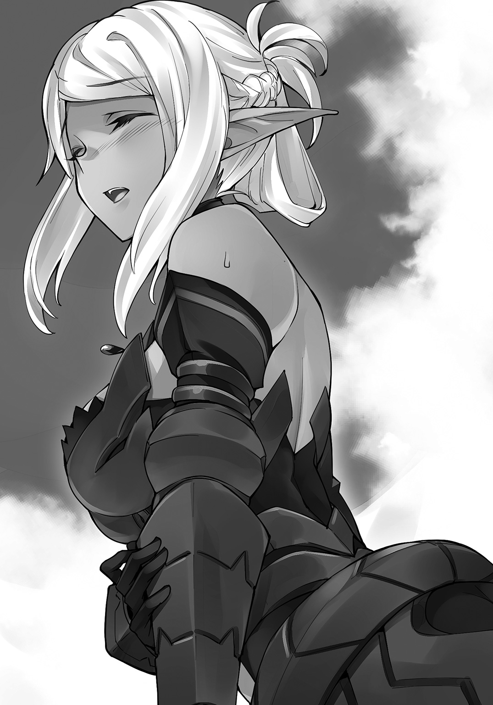
（あぁムカつく！ ストレス発散したい！ 十人ほど斬り捨てても誰からも文句言われない、そこそこ手応えのある、できれば騎士系の相手がどこか手近にいれば――）
って、
いたぁ！
白夜聖騎士団いたぁ!!
怒りの捌け口にはもってこいだ。命令が出ていないことが気がかりだが、この際仕方ない。
（えぇい、謹慎くらいなら甘んじて受けてやる！）
私は覚悟を決めると、ハラハラした様子で戦局を見つめる魔王様に端的に告げた。
「魔王様！ お叱りは後ほど！」
魔王様はその一言で私の意を汲み取ったらしい。ホッと安堵の表情を見せるが、部下が注目している手前か、すぐさまきりっとした眼差しで叱咤する。
「何をする気だサルベリア！ 勝手は許さんぞ！」
「チッ！ 面倒臭い上司だな！」
「えっ？ 舌打ち......？」
「あぁいや！ とにかく処分は後日に！」
私は白夜聖騎士団へと馬首を巡らせると、背後に控える部下に昂然と告げた。
「暗黒騎士団、出るぞ！ 白夜聖騎士団を蹴散らし、ルーシュ王子を捕らえる！」
そこで思いがけず苦笑が零れた。
まさか私が、このような台詞を口にする日が来ようとは。
「――アースノウの平和のために！ 突撃っ!!」
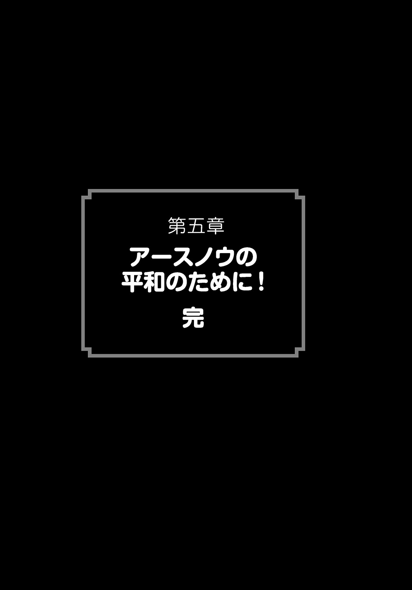
【終 章】アニの受難
（えぇと、そのぉ......）
シクシクシクシクシクシク......。
（ロープでぐるぐる巻きにされた状態で、地面に転がってシクシク泣いてるその人って......）
シクシクシクシクシクシク......。
（私がずっと憧れてた、白夜聖騎士団のトップというか......）
シクシクシクシクシクシク......。
（何かの間違いだと信じたいけど、たぶん、恐らく、きっと、私の初恋の人なんですけど......）
シクシクシクシクシクシ、
「おらぁ！ さっきからシクシクうるさいわぁ！ 負け犬の遠吠えは許されても、人質の貴様には泣く権利すらないわボケぇ!!」
ゲシ！ ゲシ！
（止めてぇ！ 私の初恋の人を足蹴にしないでぇ！）
まるで悪夢を見ているかのように身動き一つできないでいると、やがて鈴木がぺっと唾を吐き捨て言い放った。
「止めた止めた！ 俺の靴が磨り減るからね！ 後はオークに可愛がってもらえやぁ！」
「ひぃぃっ！」
ルーシュ王子が恐怖の悲鳴を上げるが、鈴木は意に介さず、王子をギルガランの方へと押しやった。ギルガランは自分の足元に転がってきた王子に視線を落としたあと、不安げに問いかけてくる。
「こいつ、本当に人類の希望なのか？ 人質の価値あるのか......？」
「心配すんな大丈夫だってぇ。名前だけは売れてるから、和平を結ぶ担保くらいにはなるからさ！」
鈴木がそう口にしたとき、ルーシュ王子が藁にも縋るといった様子で言い募った。
「ま、待て！ 別に余が人質にならずともいいのではないか!? たとえばホラ、そこのアニ殿！ アニ盗賊団は暗黒騎士団を撃退したことで、今や白夜聖騎士団と並んで皆の希望となっている！ その頭領なら人質として申し分ないし、魔族も女性に対してはそう酷いことはしないだろう！」
「えっ......」
やだ恐いなに言ってんの？
また金髪毟ろうかしら？ ツルっぱげにしてやろうかしら？
保身のために私を身代わりにしようなんて、百年の恋も冷めるとはこのことだ。私は毟りやすそうなルーシュ王子の長髪をジィーっと見つめるが、やがてハタと気づいた。
そういえば、こんな金髪イモ虫野郎でも、一応は王子様だ。ここで便宜を図れば、謝礼として鈴木のもとに大金が転がり込むことになるかもしれない。
（もしかして私、地味にピンチなんじゃあ......）
サァッと血の気が引いていった。盗賊スキルの『忍び足』を使えばこの場から逃げ出すことは可能かもしれないが、そのために和平が破談になったらと思うと、無責任な行動には出られない。
進退窮まっていた、まさにその時だ。
「なに言ってんの!? 代わりにアニを差し出すなんて、んなことするわけないじゃん!!」
その力強い言葉は鈴木から発せられたものだった。利に聡い鈴木なら、大儲けの匂いを間違いなく嗅ぎ取っているだろうに、らしからぬ発言である。それとも、また何かよからぬことでも企んでいるのだろうか？
助かった気が全然しない私だったが、鈴木は鈴木で、自分がいま口にした台詞に困惑している様子で、僅かに小首を傾げる。しかしすぐさま、この話はもうおしまいだとばかりに告げた。
「とにかく、人質はもう決定なんだよ！ ぐだぐだぬかしてっとその金髪毟ってツルっぱげにしてやるぞゴラァ！」
くっ!? ゲスい鈴木と同じ発想ですって!?
今日イチ嫌な出来事ね！
（それにしても、何で私を人質にしなかったんだろ......？）
私は鈴木の横顔を窺ってみるが、その考えを読み解くことはできなかった。まあ、何にせよ――
（......あんなにハッキリ、そんなことするわけないって言ってくれたら、悪い気はしないかな？）
私がフフッと笑みを零している間にも、和平交渉は着々と進んで行く。
「おい魔王！ こっちは条件呑んで人質出したんだから、そっちもきちんと和平に応じろよ！」
「ふっ。人間と違って魔族は契約を守るものだ。その点は安心するがいい」
ミレアさんが私の隣にやってくると、鈴木と魔王のやりとりを見守りつつ、独白するように呟く。
「わたしは今、奇跡を目にしている心境です。夢なら覚めないでほしい......」
鈴木が魔王へと片手を差し出し、どこかからかうように告げる。
「今日はいい話し合いができた。和平交渉の成立に握手といくか？」
「互いを信頼する証として、手と手を握り合うというアレか。くだらん文化だ。だが――」
この場にいる数少ない同性に引き寄せられたかのように、敵方のサルベリアが私たちの方へフラリとやってきて、ミレアさんの先程の言葉に応える。
「この私を退けたのだ。奇跡だ夢だと言わず、成果を素直に誇ることだな。見ろ。滑稽だが、悪くない光景だ」
魔王が一歩踏み出し、差し出された鈴木の手を、ガシッと力強く握り締めた。
それは、アースノウに平和が訪れた瞬間。
異世界からやってきた鈴木というゲスに振り回されながらも、私たちが勝ち取った、大いなる成果だ。
――ピカッ！
不意にまばゆい光が世界を照らした。咄嗟にギュッと目を閉じ、しばらくしてゆっくりと瞼を開いてみると、鈴木と魔王の頭上に、神々しいとしか表現しようのない女性が浮かんでいる。
私は直感的に悟った。
（まさか......女神アナスレイ様!?）
女神様はゆっくりとタガマ平原に降臨なさると、春の日差しを思わせるような穏やかな微笑を浮かべ、静かに口を開く。
「ネゴシエーター鈴木。数々の苦難を乗り越え、よくぞ魔王との和平交渉を成し遂げてくださいました。これでようやくアースノウに平穏が訪れます。ありがとう。本当にありがとう......」
女神様の一言一句に私の身体が歓喜と感動に打ち震える。それはミレアさんや盗賊団のみんな、白夜聖騎士団に至るまで同様のようだった。この世界の覇権を握ろうとしていた魔族でさえ、女神様のお姿には畏怖の念を禁じえないようで、眩しそうに目を細めている。
けれど――
「はぁ!? 今さら何しに来たの!?」
異世界の住人である鈴木には、女神様の威光はどこ吹く風だった。鈴木はまくし立てるように続ける。
「なぁにが『よくぞ魔王との和平交渉を成し遂げてくださいました』だよ！ 山田を召喚しようとした時は、魔王を倒してくれって言ってたじゃん！ おい魔王、こいつ部外者を勇者だの何だのと持ち上げて、暗殺者として送り込もうとしてたんだぜ!? その発想はテロリストと変わんないクズだぜ!!」
「なにぃ？ おのれ女神め！ 人類と和平は結べても、貴様とは一生相容れんわぁ！」
鈴木と魔王の口撃に、女神様は汗を浮かべてたじろいだ。
「あ、あれ？ こんなはずでは......」
「こ、こんなはずでは......じゃないわカスがぁ！ せっかく和平が成ったのに、お前の登場のせいでご破算になったらどうしてくれるんじゃあ！ どうせ、『和平が成ったのは私が召喚したおかげよアピール』して、手柄を横取りするつもりだったんだろうがぁ!!」
「ぎくぅっ！ いや、その、ええと......」
「か・え・れ！ か・え・れ！」
ぱんぱんぱん！ ぱんぱんぱん！
「止めて！ 手を叩いて帰れコールしないで！ 神話級の出来事である女神降臨を軽いノリで全否定しないで!!」
女神様はキュッと唇を嚙み締めると、瞳を潤ませながら、小動物のようにプルプルと震え出した。そして、次の瞬間――
「う......うわあぁぁん！」
ピカッ！
（きゃあ、眩しい！ 目が眩んで何も見えないから、何が起きてるかわからな......いやこれ帰ったわね!? 女神様、鈴木に言い負かされて半べそで帰ったわね!?）
光が弱まり、目を開けられるようになると、私はすぐさま辺りを見渡してみた。すると案の定、女神様の姿は影も形もなくなっている。
あまりの出来事に、私は喘ぐように呟いた。
「そんな......女神さ、」
「ちょっと待てやクソアマぁ！ どうせ帰るんなら山田を治療して日本まで送り届けろやぁ！ そして俺の分のノート取らせとけやぁ！ 世界を救ってもらっておいて、それくらいの機転も利かせられんのかこの役立たずがぁ!!」
..................ピカッ！
（きゃあ、眩しい！ 目が眩んで何も見えないから、何が起き、）
ピカッ！
（はやっ！ 帰るの早っ!! もう見なくてもわかるわ！ 居たたまれなくて山田だけ連れて帰ってったわ！ ええと、その......ありがとう山田！ あんたそこそこ頑張ってたわ！ 少なくともベソかいて逃げ帰った女神様より断然役に立ったわ!!）
瞼を開くと予想通り、幻覚に苦しんでいた山田が忽然と消えていた。鈴木の言葉通りになったと考えるならば、山田は女神様の加護によって、きっと快方に向かうことだろう。それを確信してか、万能薬を使わずに済んだ鈴木は、満足そうにウンウンと頷いている。
やがて鈴木は、魔王に向き直って言う。
「くっくっくっ。邪魔な女神が消えてせいせいしたぜぇ。なあ、魔王？」
「まあ、同感ではあるが......お前アレだな。どっちかって言うと魔族側の人間っぽいな」
そんな当惑を滲ませる魔王に対し、鈴木は仕切り直しとばかりにこう切り出した。
「ところで魔王。和平の内容として、人類と魔族の交戦を禁止するのは当然だとしても、それだけでは何かと問題が生じるだろう。そこでだ。お互いの種族を理解するために、自由都市を作ることを提案する」
「自由都市？」
「そうだ。人類と魔族が共に暮らし、交流を深めるための都市だ」
魔王は思案するように、顎先に手をやって押し黙った。だがやがて、うぅむと唸って眉間に皺を寄せる。
「人類と魔族が共に暮らす都市だと？ 想像もつかんな。都市作りに関しては大魔導師パピロスの方が精通してはいるが......おいパピロス。お前はどう思う？」
「......は？」
何か考え事をしていたらしい。上の空といった様子のパピロスが、間抜けな声を発した。それに対し、魔王がムッとした顔で告げる。
「は？ ではない。鈴木は魔族と人類が共に暮らす自由都市を作るべきだと言っているが、お前はどう思うかと聞いているのだ」
「も、申し訳ありません魔王様。ええと、そうですな。和平を恒久的なものにするためには、そういった都市の存在も必要となってくるとは思いますが......しかし、性急に過ぎるでしょう。長年憎しみあってきた種族ですし、むしろ緩衝地帯を設けるなどの施策の方がよろしいかと」
パピロスの発言を受け、魔王はもっともだとばかりに頷いた。
しかし鈴木は食い下がる。
「そう悲観すんなってぇ。和平の提唱者としての責任もあるから、自由都市の統治は俺に任せてくれりゃいいからさ」
「なりませんぞ魔王様。ここはまず、互いに刺激し合わないようにするのが先決です」
「大丈夫だってぇ。何か諍いがあっても、異世界の住民で第三者の俺なら、公正公平に立ち回れるし」
「そう簡単なものでもあるまい。互いの棲み分けがきちんとできてから、少しずつ交流の場を設けるのが得策だ」
「だからぁ............ちょっとツラ貸せやジジイ」
「ぬなっ!? じ、ジジイ!?」
パピロスが怒りに青筋を怒張させるが、鈴木は意に介さず、少し離れた場所に移動すると、ちょいちょいと手招きする。
魔王の前で取り乱すわけにはいかないと考えたのか、パピロスはぎりっと歯軋りしたあと、足を踏み鳴らしながら鈴木のもとへと向かった。
（あいつ、パピロスといったい何を話す気だろ？ それに、自由都市のことなんて、これまで一度も口にしてなかったのに、何を考えてるの？）
気になった私はふと気づく。確かステータス確認した時に、ひそひそ話もはっきりと聞き取ることができるようになる、『盗み聞き』のスキルも取得済みとなっていたはず。
私はすぐさま『盗み聞き』を発動した。すると狙い通り、鈴木とパピロスのやりとりが耳に届く。
「おのれ。人間の分際で、四天王であるわしのことをジジイ呼ばわりだと？」
「まあそう熱くなるな。ところで、ここに来てからずっと、ルーシュ王子のことばっか気にして、心ここにあらずって感じじゃないか」
「ぬ、う......」
「お前が考えていることを当ててやろう。『ば、バカなぁ！ ルーシュ王子は我が息子ポポロンが襲撃して討ち取ったはずでは!?』ってところか？」
「なっ!? お主、なぜそれを!?」
パピロスの息子？ ルーシュ王子を襲撃？ どっかで聞いた話ね。
......あぁ、そうだ。鈴木が魔王城で『オレオレ交渉術』を使ったとき、ポポロンになりすましてそんな作り話してたわね。
「――おっとぉ。手が滑ったぁ」
コロン。
「はぅあっ!? それは魔王城の宝物庫に保管してあった『アルデ・ソルの槍』！ なぜお主が持っている!?」
「さてなぁ。どうしてかなぁ」
「ハッ！ ままま、まさか！ ポポロンは襲撃に失敗したのか!? そのため襲撃の際に使っていたアルデ・ソルの槍が、人間であるお主の手に渡ったと!?」
うわ全然違う！ かすりもしてない！
中途半端に頭がいいと想像力が豊かで逆にダメね！
「くっくっくっ......」
「息子はどうなったのだ!? いや待て、殺したのならばわざわざ話題に出さぬはず！」
「くーっくっくっ」
「どこかに捕らえてあるのだな!? そういうことだろう!?」
「クハハハハハッ！」
「わかった言う通りにする！ だから家族には手を出すなぁ!!」
何か会話が成り立っちゃいましたけど!?
というかポポロン、たまには実家に帰りなさいよ！ あんたの親父さん、食いものにされてるわよ!? 鈴木が相手だと骨の髄までしゃぶられるわよ!?
パピロスはふらふらと覚束ない足取りで魔王のもとに取って返すと、呻くように伝えた。
「魔王様。自由都市の件ですが、とてもいい考えだと存じます。鈴木に全権を任せ、人類と魔族の友好の証とすべきかと」
「うん？ 急に意見が変わったな？ まあ、お前がそう言うのなら間違いはないだろう。おい鈴木、自由都市についてはこちらも異存ない。お前に全権を委ねよう。......ところで、その都市の名は？」
「あぁん？ そんなん何でもいいよ。もう佐藤でいいよ。佐藤で」
「サトウ？ 変わった名を付けるな」
「俺んとこの世界じゃメジャーな名前だ。元は人名だよ」
自由都市サトウ、か。
うん、なかなかいい響きじゃない。
それにしても、都市に人名を付けるなんて。メジャーな名前って言ってたけど、どういう意味だろう？ 同じ名前の人がいっぱいいるわけでもないだろうし、きっとすごく有名な人なのね。もしかして鈴木の心の師か何かかしら？
だとしたらサトウって間違いなくゲスね。鈴木以上のゲスね。ゲスの極みサトウね。
（何にせよ、本当に和平交渉を成功させちゃったんだ、あいつ）
命の危険も顧みずアースノウに渡り、和平交渉を成し遂げ、あげく人類と魔族の友好の都まで作ろうとしている。
（言動は気に食わないけど、けっこう凄い奴よね。色々とひどい目に遭わされたけど、全部水に流して、お酒の一杯でも奢ってやるかな？）
そんなことを思い、鼻歌交じりに鈴木へと駆け寄ろうとした時だ。スキルの効果が残っていたのか、鈴木の独白が微かに聞こえてくる。
「くっくっくっ。和平交渉の成果のおかげでいいポストに就けたぜぇ。自由都市サトウの利権でボロ儲けじゃあ！ そのうち人類と魔族の混成部隊を編成して、アースノウの覇権を握ってやるわぁ！ 今のうちに仮初めの平和を享受しておくがいい、クズどもがぁ!!」
「............えっ？」
お、おやぁ？
今のって空耳よね、きっと。スキルの効果も切れかかってたみたいだし......。
そう自分に言い聞かせるが、悪寒が止まらなかった。すると、その場に立ち尽くす私の横を、ミレアさんが駆け抜けていく。
「鈴木さん、すごいですね！ 本当に和平を成立させちゃうなんて！ しかも人類と魔族の友好の証に、自由都市の構想を実現させようなんて、尊敬します！」
「やだなぁ。これくらい俺にとっちゃ朝飯前だってぇ」
「お手伝いすることがあったら言ってくださいね！ 自由都市にもギルドは必要でしょうし！」
「そだね。みーちゃんがいると心強いしね！」
「そんな。確かにわたし、仕事はけっこうできる方だと思いますけど。それに、お料理も得意な方ですし。たとえば有力者の第一夫人とかになっても、何かと如才なくこなす自信はありますけど......」
ミレアさんが頰に手を当て、照れるように何事か呟いていた時だ。サルベリアが鈴木に近づき話しかけた。
「おい鈴木。その、あれだ。汚名を雪ぐチャンスをくれたことには感謝する。魔王様も今回の働きを評価して、先日の失態や今回の命令無視は不問に付すとのことだ」
「うん？ ......あ、そうだね！ 別にピンチになったからけしかけるために言ったんじゃなく、手柄を取らせてやったんだよ！ 感謝しろよ！」
「む。何か釈然としないが、まあいい。自由都市サトウの運営をする際に何かあれば声をかけるがいい。手を貸してやらんでもない」
「ほんとか？ ひゃっほう！ これで繁盛間違いなしのＳＭクラブが開けるぜぇ!!」
「なっ!? そ、そんなことはせんぞ!? おい聞いてるのか鈴木！ 鈴木!? え、ちょっ、それ本当にヤだから！」
何だか騒々しいやりとりを聞いているうちに、私の不安は大きくなっていった。
（あ、あれぇ？ 何か鈴木の株が軒並み上がってるんですけど......）
まあ、和平交渉を成功させ、自由都市サトウまで実現させようというのだ。人気が出るのも頷ける。
けれど。
恐らく聞き間違えだが。そう信じたいが。先程の独白が本物で、本心だった場合、人望や権力が鈴木に集中するのはアースノウにとってマイナスな気がする......。
（考え過ぎよね？ ね？）
そんなことを思いつつも、私は和平が成って緩んでいた表情を引き締めた。鈴木の独白を耳にしたのは私だけなのだ。もしも何か良からぬことを考えているなら、この私が何としても阻止しなければ。
私は鈴木のところまで歩を進めると、ズビシッと指差した。
「鈴木！」
「ん？ 何だよアニ。恐い顔して」
「私はあんたから目を離さないから。よぉく覚えておくことね」
鈴木は最初こそきょとんとしていたが、やがてニヤリと、魔王が浮かべるような不吉な笑みを口元に刻んだ。そのまま無言で一歩踏み出し、私のすぐ前に立つと、ゆっくりと両腕を持ち上げる。そして――
むにっ。
「..............................へ？」
私の、胸を触った。
顔面が茹で上がる。心臓が早鐘を打つ。あまりのことに気が動転し、手を振り払うことすらできない。絞り出すようにしてようやく発せられる、途切れ途切れの声。
「な、な、な、何、を、」
「え？ 『目を離さない』って、要するに今の告白だろ？ 受けるにしろ断るにしろ、とりあえず胸は揉んでおこうかなって！」
え何こいつ!?
信じられないゲス！
極み極まったゲス！
私の身体がわなわなと震えだす。
「だ、誰がぁ～、あんたなんかにぃ～」
ギュウウウゥゥゥッと、力強く拳を握り締める。
「告白なんてぇ～、するかぁ～」
岩さえも打ち砕けるほどに、大きく大きく振りかぶる。
「こぉ～のぉ～」
「ひいぃっ！ ......ぺったんこ過ぎておっぱいの感触がない!!」
「ゲスがぁ――――――――――っ!!」
どぐわしぃっ!!
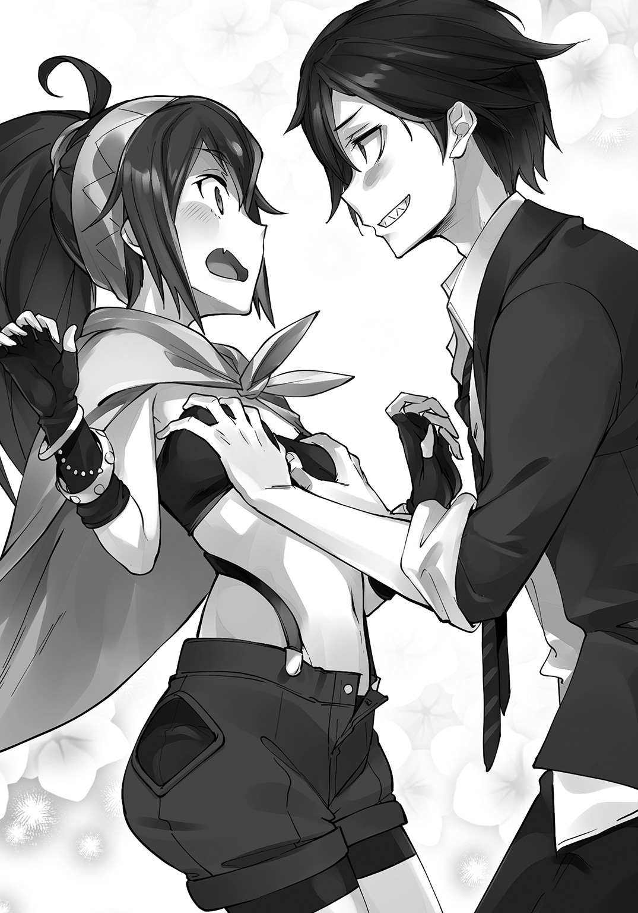
和平なんて関係ない。
この世に悪がある限り。
この世に鈴木がいる限り。
私の冒険は、終わりはしないのだっ！
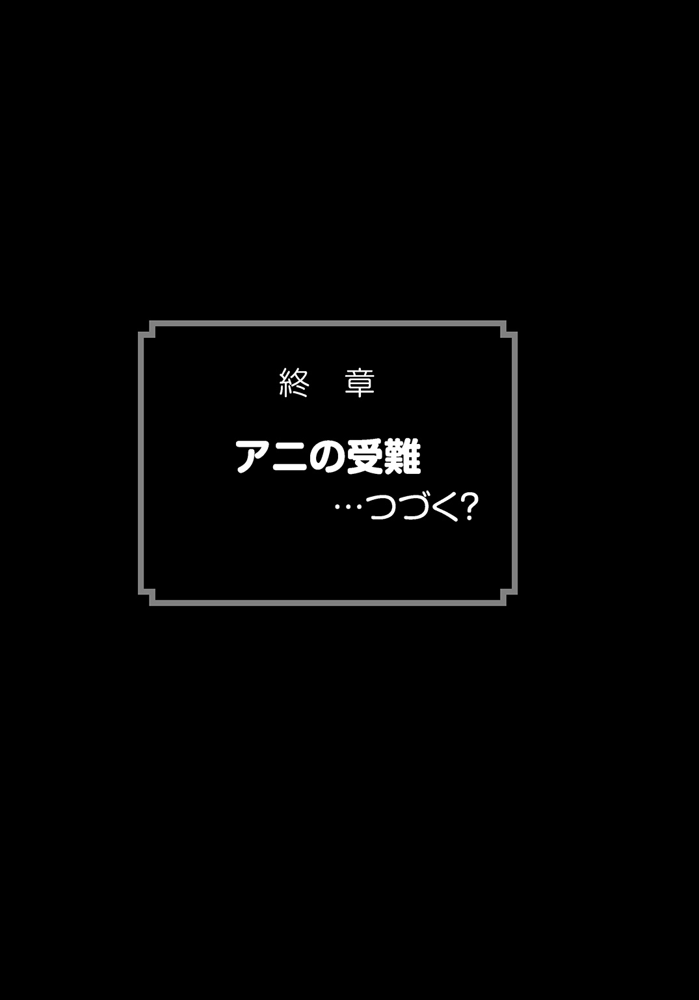
あ と が き
この度は拙作をご購読いただきありがとうございます。かなりクズな鈴木が魔王との和平交渉を通じて異世界をしゃぶり尽くすコメディですが、お楽しみいただけたでしょうか？
あるいはこれは、ヒロインのアニに降りかかる苦難を描いた悲喜劇でもありますね。ここまで酷い目に遭うヒロインも珍しいなと思いつつ、アニには歯を食いしばって頑張ってもらいました。途中、引き籠もりになったりもしてますが......。
もう少し詳しく作品紹介してもいいのですが、あとがきから先に読まれる読者さんもおられるので、あまりネタバレになるようなことは止めておきましょう。代わりに創作秘話でお茶を濁そうかと思います。
作品自体はわりとスラスラと書けたのですが、難航したのがタイトル決めでした。今のタイトルになるまでに、僕と担当さんが出し合ったタイトル案の総数、何と二百オーバー！
そこまでの数になるとですね、さすがに脳が茹だるというか、わけがわからないものまで候補として挙げちゃうわけです。後で見返してみて「何コレ？」と思ったものを、せっかくなのでご紹介しましょう。
【ボツタイトルＡ】
「平和になったのでこちらの勇者お下げしますね？」
「まだ鈴木が異世界しゃぶり尽くしてる途中でしょうがぁ！」
......これ出したの僕ですね。なに考えてたんでしょうね。
元ネタ、わかる人にはわかるかもしれません。『北の国から』というドラマのワンシーンですね。子供からラーメン取り上げたらダメですよね。
【ボツタイトルＢ】
きたない、さすが鈴木、汚い。
......こちらは案がけっこう出尽くした頃に担当さんから提案していただいたものですね。まあ、あれですよね。
鈴木、主人公だよ!?
ヒドイよ!!
そんなこんなで二百以上もの候補が挙がった結果、僕が出していた『骨の髄まで異世界をしゃぶるのが鈴木なのよー!!』に決定し、こうして皆様のお手元に届いているという次第です。大変なのよー!!
さて、今回も様々な方にご尽力いただきました。この場をお借りしてお礼申し上げます。
イラストレーターの『すーぱーぞんび』様。指定がコロコロ変わるなか、エロ可愛いイラストを完璧に描いてくださりありがとうございました。鈴木たちの冒険もおかげさまでとても華やかになりました。
担当の石川様。タイトル決めではお疲れ様でした。なかなか言うことを聞かない筆者ですが、これからも根気強くご指導していただければと思います。
最後になりましたが、本作を手にとってくださった読者の皆様。本当にありがとうございます。骨の髄までしゃぶれるような、旨みがあって面白い作品を書けるようこれからも精進していきますので、応援よろしくお願いいたします！
望 月 充 っ
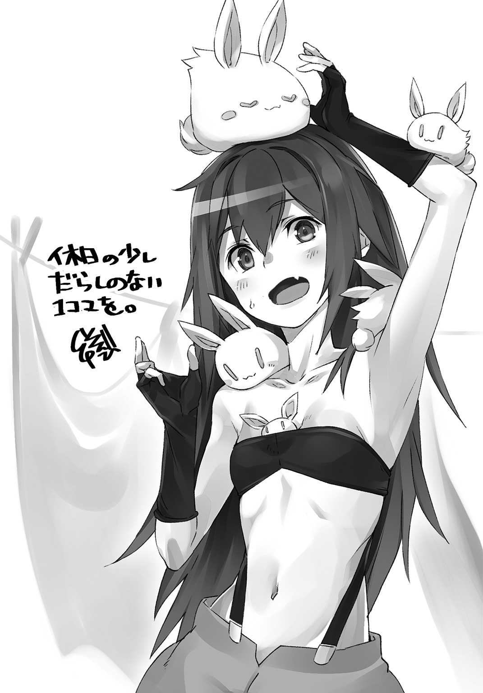
著者紹介
望月 充っ もちづき あたる
飼っているチワワがぎっくり腰になりました。まだ腰に違和感があるのか、散歩の途中で抱っこをせがむようになったその姿を見るにつけ、健康第一だなと思う今日この頃です。
illustration
すーぱーぞんび
挿絵を担当させて頂きましたすーぱーぞんびです。アレやコレやのお陰で、メンタルが酷い有様だったんですが作業の方はとても楽しかったです。ヒロインがとても可愛いので続いてくれると嬉しい所。話は変わって、最近ジム行きたいと思ってるんですが、初回のハードルが高くて億劫に...一緒に行ってくれる友人が欲しいですね...。
ダッシュエックス文庫DIGITAL
骨の髄まで異世界をしゃぶるのが鈴木なのよー!!
著者 望月充っ
© ATARU MOCHIZUKI 2017
２０１７年８月31日発行
この電子書籍は、ダッシュエックス文庫「骨の髄まで異世界をしゃぶるのが鈴木なのよー!!」
２０１７年８月30日発行の第１刷を底本としています。
発行者 鈴木晴彦
発行所 株式会社 集英社
〒１０１－８０５０
東京都千代田区一ツ橋２丁目５番10号
０３－３２３０－６０８０（読者係）
制作所 株式会社ＩＣＥ
本作品の全部または一部を無断で複製、転載、改竄、インターネット上に掲載すること、および有償無償に関わらず、本データを第三者に譲渡することを禁じます。なお個人利用の目的であっても、コピーガードを解除しての複製は、法律で禁じられています。